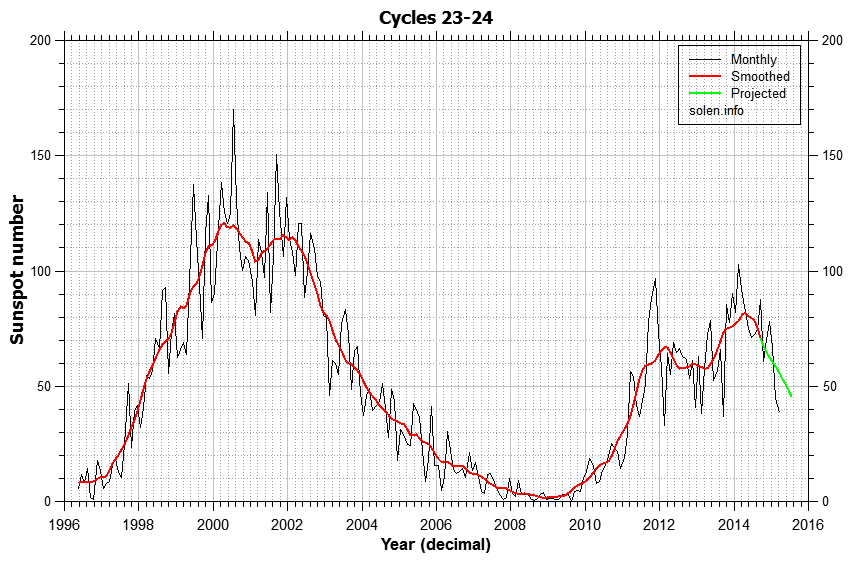
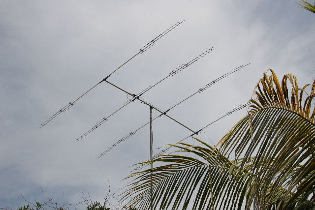
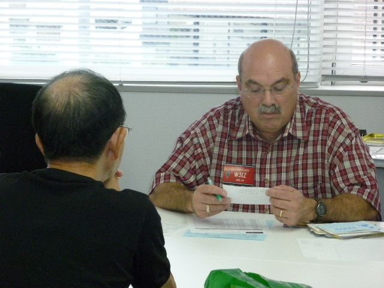

6m Today !

2014/Jan-Dec・総集編
サイクル24もいよいよ下降期に入った。前サイクルに経験したロングパスの
伝搬は残念ながら僅かに西日本を中心に見られた程度で終わってしまいそう。
[Back Issues 2014]
TIME:UTC(JST-09:00)
Report from JA1RJU(PM95sq)
31.Dec.2014(15:00e)
V73SIX/B 02:40- 50.0116 CW Beacon
VK4ZJB 06:36 50.110 SSB
VK4UH 06:42 50.110 SSB
ZL3ADT 06:46 50.110 SSB RS59
VK4AMG 06:47 50.110/120 SSB
ZL3MH 06:48 50.110 SSB
ZL3ADT 06:50 50.110 SSB CQ
VK8RR 06:57 50.120 SSB
ZL3ADT 07:03 50.110 SSB CQ
VK8RR/P 07:12 50.107 CW calling HL
ZL3ADT 07:25 50.110 SSB CQ
Report from JA1RJU(PM95sq)
30.Dec.2014(15:00c)
VK6KXW 07:00 50.110 CW CQ
VK5PO 07:16 50.110 CW CQ
Report from JA1RJU(PM95sq)
29.Dec.2014(15:00d)
ZL2WHO/B 03:28- 50.024 CW Beacon
VK4TJ 03:34 50.110 SSB
VK4RGG/b 03:35- 50.058 CW Beacon
ZL1AVS 03:39 50.110 SSB
VK4AMG 03:43 50.115 SSB RS59+
VK5PO 03:51 50.110/099 CW CQ DX
DU1EV/B 06:20- 50.008 CW Beacon RST599+
DU3LA 06:52 50.106 CW @ RST599+
T88KO 07:30 50.100 CW RST599+
T88KO 07:40 50.100 CW @ OP.JS1OHI(QSL Home QTH=SASE)
T88KO 08:10 50.100 CW CQ still good!
DU1EV/B 08:10- 50.008 CW Beacon with TV-Buzz
Report from JA1RJU(PM95sq)
28.Dec.2014(15:00c)
VK2FA 04:18 50.130 SSB CQ
VK2JF 04:20 50.120 SSB
Report from JA1RJU(PM95sq)
27.Dec.2014(15:00d)
VK2II 04:14 50.110 SSB
VK2FZR 04:14 50.125/150 SSB CQ QSY
VK4KR 04:16 50.135 SSB
VK2EVB 04:18 50.120 SSB @ RS59
VK2NT 04:22 50.110/140 SSB CQ QSY
VK2FZR 04:23 50.150 SSB
VK4KR 04:23 50.150 SSB QRM
VK4OH 04:26 50.118 SSB @ Dean RS59
VK2ZT 04:30 50.110 SSB
VK4WTN 04:31 50.105 CW CQ
VK4UH 04:34 50.120 SSB @ Kevin RS59
VK4WR 04:38 50.163 SSB @ Alan RS59
VK4NW 04:44 50.150 SSB CQ
VK2FZR 04:46 50.140 SSB CQ
VK2QO 04:47 50.110 SSB @ Brad RS59
VK2FZR 04:51 50.140 SSB @ Bert RS59
VK3OER 04:53 50.145 SSB @ Andy RS59
VK2TP 04:59 50.150 SSB @ Carl RS59
VK7RR/4 04:59 50.100 CW CQ
VK4ZD 05:00 50.165 SSB
VK4CC 05:02 50,135 SSB CQ
VK2BXT 05:03 50.135/155 SSB
VK4CC 05:05 50.135 SSB @ Col RS59
VK4ZD 05:08 50.165 SSB
VK4EM 05:11 50.120 SSB
VK4RGG/b 05:13- 50.057 CW Beacon
VK4ADC 05:16 50.125 SSB @ Doug RS59
VK4OH 05:18 50.130 SSB
VK4CZ 05:22 50.150 SSB
VK7RR/4 05:28 50.175 SSB
VK2AET 05:30 50.098 CW CQ
VK4YH 05:32 50.110/145 SSB CQ QSY
VK4NW 05:43 50.140 SSB
VK6KXW 05:43 50.105/110 CW CQ
VK4BZ 06:02 50.120 CW @ John RST599
KG6JDX 06:55 50.110 SSB CQ RS59+
AH2/AB2RF 07:23 50.115 CW CQ weak now
Report from JA1RJU(PM95sq)
26.Dec.2014(15:00c)
ZL2WHO/B 03:25- 50.024 CW Beacon RST579
ZL1RS 03:30 50.103 CW CQ RST599
ZL1BVA 03:25 50.110 SSB CQ
ZL1AKW 03:47 50.110 SSB
ZL1SIX/b 03:50- 50.011 CW Beacon RST559(GL=RF64vt)
ZL1AKW 06:30 50.110 SSB CQ
ZL3JT 06:35 50.110 CW CQ
Report from JA1RJU(PM95sq)
25.Dec.2014(15:00f)
V73SIX/B 01:35- 50.0116 CW Beacon
DU1EV/B 01:40- 50.008 CW Beacon
VK4ZJB 04:56 50.140 SSB
VK2FA 04:57 50.110 SSB CQ
VK4WTN 05:00 50.105 CW CQ
VK2FA 05:02 50.110 SSB @ Graham RS59
VK3XQ 05:04 50.125 SSB @ Rob RS59
VK4ZD 05:05 50.125 SSB @ Bill RS59
VK2FA 05:12 50.120 SSB CQ
VK3AXF 05:16 50.115 SSB
VK2AET 05:22 50.105 CW @ Scott RST599
VK4ZD 05:26 50.145 SSB
VK6KXW 05:27 50.100/108 CW CQ
VK4WTN 05:27 50.100 CW CQ
VK4AHW 05:29 50.110/135 SSB CQ QSY
VK4ARN 05:30 50.115 SSB
VK2EMA 05:32 50.125 SSB
VK2FA 05:36 50.110/120 SSB
VK4ZJB 05:40 50.130 SSB
VK4HJ 05:46 50.113 CW
VK4KR 05:51 50.135 SSB CQ
VK4RGG/b 05:58- 50.0578 CW Beacon
DU1EV/B 06:14- 50.008 CW Beacon
VK6RO 06:15 50.110 CW CQ
VK4AFL 06:15 50.110/177 SSB CQ QSY
VK4KR 06:17 50.165 SSB
VK6DXI 06:39 50.110 CW
VK6RO 06:40 50.110 CW CQ
HL2CFY 06:44 50.110 CW CQ
DU1KA 06:47 50.107 CW CQ RST599+
KG6JDX 07:26 50.110 SSB Joe RS9++
AH2G/B 07:28- 50.0043 CW Beacon (KG6DX)RST599+++
VK6KXW 08:05 50.110 CW CQ
DU1EV/B 08:10- 50.008 CW Beacon
KG6JDX 08:30 50.110 SSB CQ RS53
AH2G/B 08:30- 50.0043 CW Beacon RST599
Report from JA1RJU(PM95sq)
24.Dec.2014(15:00e)
VK6KXW 04:46 50.106 CW
VK6RPH/b 04:47- 50.066 CW Beacon
VK6AKP 05:56 50.110/130 SSB
V73SIX/B 06:30- 50.0116 CW Beacon
DU1EV/B 08:25- 50.008 CW Beacon RST599
VK6KXW 08:42 50.110 CW CQ
VK6OX 09:41 50.110 CW CQ
DU1EV/B 09:55- 50.008 CW Beacon still RST599
Report from JA1RJU(PM95sq)
23.Dec.2014(15:00g)
ZL2WHO/B 03:55- 50.024 CW Beacon RST579
VK6KXW 05:47 50.108/110 CW
VK6RPH/b 05:54- 50.066 CW Beacon
V73SIX/B 05:57- 50.0116 CW Beacon
VK6KXW 05:58 50.106 CW @ RST579
VK6AKT 06:09 50.130 SSB @ Ken RS59/59
V73NS 06:13 50.112 CW RST599
VK3XQ 06:18 50.105 CW CQ
VK3AUQ 06:19 50.103 CW @ RST599
VK6RZ 06:22 50.102 CW CQ
VK3AMK 06:35 50.100 CW RST599
VK3BD 06:41 50.110 SSB CQ
VK3KTO 06:43 50.125 SSB
VK3NF 06:44 50.125/130 SSB
VK3BDL 06:50 50.110 SSB
VK3KTO 06:59 50.137 SSB
VK3YFL 07:00 50.137 SSB
VK3FFB 07:01 50.137 SSB
VK3MH 07:03 50.137 SSB
VK3EY 07:06 50.140 SSB
VK3EY 07:11 50.140 SSB @ Rob RS59
VK3OT 07:20 50.120 SSB @ Steve RS59 also JE6VCH
VK3WE 07:29 50.098 CW CQ
VK3AMK 07:35 50.094 RTTY
VK3XQ 07:42 50.105 CW CQ
VK6APZ 09:10 50.110 SSB CQ 1st 6m QRV!
VK6DVR 09:15 50.110 SSB CQ
VK6APZ 09:20 50.130 SSB @ Peter FT-5000+Dipole
VK6AKT 09:22 50.130 SSB
Report from JA1RJU(PM95sq)
22.Dec.2014(15:00b)
Report from JA1RJU(PM95sq)
21.Dec.2014(15:00b)
V73SIX/B 04:00- 50.0117 CW Beacon
Report from JA1RJU(PM95sq)
20.Dec.2014(15:00c)
DU1EV/B 01:00- 50.008 CW Beacon RST599
DU1/JA3FJE 01:10 50.200 SSB RS59
Report from JA1RJU(PM95sq)
19.Dec.2014(15:00c)
ZL2WHO/B 02:35- 50.024 CW Beacon RST599
VK5PO 07:49 50.110 CW @ CQ RST599 QSB
Report from JA1RJU(PM95sq)
18.Dec.2014(15:00c)
ZL2WHO/B 23:50- 50.024 CW Beacon
--------------------------------------------------------------------
Report from JA1RJU(PM95sq)
17.Dec.2014(15:00b)
UR5FA/MM 08:22 50.110 CW RST579/599 GL=PJ87
Report from JA1RJU(PM95sq)
16.Dec.2014(15:00b)
Report from JA1RJU(PM95sq)
15.Dec.2014(15:00b)
Report from JA1RJU(PM95sq)
14.Dec.2014(15:00e)
ZL4PW 22:57 50.110 CW weak
ZL1RS 23:01 50.103 CW weak
(ZL1AKW.ZL3ADT.ZL3MF 50.110 CW/SSB JA1 into QM05)
---------------------------------------------------------------------
DU1EV/B 05:50- 50.008 CW Beacon RST599
VK4HN 07:13 50.110 SSB
VK4HJ 07:15 50.110 SSB
ZL1RS 07:17 50.103 CW CQ CQ
VK4ZJB 07:17 50.110 SSB CQ
ZL2WHO/B 07:22- 50.024 CW Beacon
DU1/JA3FJE 07:30 50.195 SSB RS59
VK4HJ 07:59 50.110 CW CQ
Report from JA1RJU(PM95sq)
13.Dec.2014(15:00b)
ZL3RC 03:26 50.110 SSB
Report from JA1RJU(PM95sq)
12.Dec.2014(15:00c)
V73SIX/B 03:00- 50.0117 CW Beacon RST599
ZL2WHO/B 03:25- 50.024 CW Beacon
ZL1BMW 03:35 50.110 SSB RS57 QSO with JR2
ZL2WHO/B 04:15- 50.024 CW Beacon still open
Report from JA1RJU(PM95sq)
11.Dec.2014(15:00b)
Report from JA1RJU(PM95sq)
10.Dec.2014(15:00c)
ZL3RC 06:08 50.110 CW @
ZL3JT 06:08 50.110 CW @
ZL3NW 06:14 50.110 CW CQ
ZL3RC 06:17 50.110 SSB @
Report from JA1RJU(PM95sq)
09.Dec.2014(15:00c)
Report from JA1RJU(PM95sq)
08.Dec.2014(15:00b)
9W6EZ 06:47 50.110 SSB CQ RS59
Report from JA1RJU(PM95sq)
07.Dec.2014(15:00d)
KG6DX 22:58 50.098 CW @ Joel RST599++
------------------------------------------------------------------
VK3WE 03:29 50.110 CW @
VK3WE 03:40 50.097 CW
VK3AXF 03:43 50.110 SSB
VK3AMK 03:46 50.120 SSB
VK3DUT 03:47 50.120 SSB
VK3AXF 03:50 50.110 SSB CQ
VK1DJA 03:55 50.120 SSB
VK3DUT 03:56 50.135 SSB
VK2BXT 03:58 50.110 SSB
VK3AXF 04:03 50.130 SSB @ Ian RS59
VK2FAD 04:07 50.120 SSB
VK3XDX 04:08 50.106 CW CQ
VK3XQV 04:10 50.103 CW
VK2FAD 04:11 50.110/120 SSB CQ QSY
VK3DUT 04:15 50.110/135 SSB
VK1DJA 04:17 50.135 SSB @ Dave RS59 (GL= QF44MR)
VK3NF 04:23 50.135 SSB CQ on VK1DJA!
VK1DJA 04:30 50.135 SSB still RS59+
VK3VG 04:31 50.110 SSB RS59+
Report from JA1RJU(PM95sq)
06.Dec.2014(15:00c)
ZL2WHO/B 03:32- 50.024 CW Beacon
VK5KFA 03:36 50.110/130 SSB CQ QSY
VK7XX 03:40 50.125 SSB @ John QTH QE38
VK5KFA 03:44 50.130 SSB @ Steve
VK2BJ 03:46 50.106 CW CQ
VK3WE 03:46 50.102 CW CQ RST599
VK5PO 03:55 50.095 RTTY RST579 QSB
VK7RAE/B 04:00- 50.057 CW Beacon
Report from JA1RJU(PM95sq)
05.Dec.2014(15:00d)
VK4RGG/b 02:55- 50.057 CW Beacon RST599
VK4RSC/b 02:55- 50.2847 CW Beacon
VK4TJ 03:05 50.110 CW @ RST599
VK4HJ 03:09 50.110/120 SSB CQ & QSY RS59
VK6KXW 03:29 50.110 CW CQ CQ
DU1EV/B 06:30- 50.008 CW Beacon
DU1/JA3FJE 08:05 50.195 SSB RS59+
T88ER 08:06 50.120 SSB CQ Beam to VK/ZL
T88ER 08:20 50.120 SSB Beam to JA RS59+
DU1EV/B 08:40- 50.008 CW Beacon RST599+
DU7/PA0HIP 08:42 50.105 CW RST599
Report from JA1RJU(PM95sq)
04.Dec.2014(15:00d)
VK2BHO 03:57 50.110 CW @ RST599
VK2YOC 04:00 50.110 SSB CQ
DU1EV/B 08:30- 50.008 CW Beacon
DU1GM 08:30 50.110 CW RST599
DK7GG/DU6 08:33 50.121 SSB
DU1KA 08:56 50.110 SSB CQ RS59+
VK6KXW 09:11 50.110 CW CQ
T88ER 12:25 50.110 SSB @ RS59++ (QSL to JH7WER)
T88ER 12:30 50.120 SSB CQ IOTA=OC-009
Report from JA1RJU(PM95sq)
03.Dec.2014(15:00b)
Report from JA1RJU(PM95sq)
02.Dec.2014(15:00b)
Report from JA1RJU(PM95sq)
01.Dec.2014(15:00c)
ZL1AKW 02:56 50.110 SSB weak
|
◎ VU4KV（Andaman & Nicobar Islands）から公開されているLOGサーチ「Last QSO in database: 2014-11-28 18:00:59」によると、27日からQRVを始めた51.000MHzのFMでのQSOを加えた6mでの全QSO数は228から266（RTTYとのダブリQSOを含む）に増えた。51.000MHzのFMの入感は西日本だけだが、RTTYでのQSOを逃がしFMで”リカバリー”した幸運な局もいる。
東日本（PM95）では51.000MHzのFMは全く聞こえなかった。
|
[Back Issues Nov.2014]
TIME:UTC(JST-09:00)
Report from JA1RJU(PM95sq)
30.Nov.2014(15:00c)
V73SIX/B 23:00- 50.0117 CW Beacon RST599
------------------------------------------------------------------
(PY2BL.PY2DS's 00:00- 50.110 SSB into JR6=Okinawa)
Report from JA1RJU(PM95sq)
29.Nov.2014(15:00e)
V73SIX/B 01:43- 50.0117 CW Beacon weak
VK2ZT 05:08 50.110 SSB
VK2YOC 05:09 50.110 CW
VK2ZQ 05:13 50.115 SSB
VK1AI 05:18 50.110 CW @ RST579 QSB
VK3BY 05:43 50.110 SSB
VK3BDL 05:44 50.110 SSB
VK3WK 05:53 50.125 SSB
VK3NX 05:55 50.125 SSB
VK3XQ 05:59 50.125 SSB
VK3XL 06:01 50.125 SSB
9M6XRO 07:31 50.110 CW CQ
9M6XRO 08:20 50.110 CW CQ still good!
Report from JA1RJU(PM95sq)
28.Nov.2014(15:00c)
VK3AMK 07:16 50.117 SSB
VK3WE 07:16 50.102 CW
VK3DUT 07:18 50.130 SSB
VK2ZT 07:19 50.110 SSB CQ
(VU4KV 07:40- 51.000 FM into JR6=OKINAWA)
9M6XRO 08:11 50.105 CW CQ CQ
Report from JA1RJU(PM95sq)
27.Nov.2014(15:00d)
KH7Y 00:12- 50.105 CW CQ
KH7Y 00:15 50.105 SSB @ RS57 with QSB. 90deg(Direct Beam)
KH7Y 00:30- 50.105 CW/SSB CQing
(VU4KV 06:30- 51.000 FM RSM595++ into JA4.5.6)
9W6EZ 12:59 50.110 SSB CQ
◎ 3日連続のRTTYの入感で予想外？に多くのJAとQSOしたVU4KV（Andaman & Nicobar Islands）に、今日もオープンが期待されたが、
なんと、今日は51.000MHzのFMでQRVしてきた。入感したエリアはJA6-5-4の西日本だけで、JA1には全く聞こえなかった。
QSOしたJA6からのリポートでは、VU4KVのFM電波はS9+で強力に入感していたと。
この日の50.090MHzのRTTYの入感を心待ちにしていた局は、”肩透かし”を食った感じで大ショック！。
確かにVU4KVからの情報には次の様な事が書かれていた。
「Unfortunately we did not get permission to operate CW or SSB on VU4. We are only allowed FM and RTTY/digital and we should be getting on 6M during the coming week till the end.
73 de Prasad VU2PTT」
VU4KVから午前中に公開された「LOGサーチ」では「Last QSO in database: 2014-11-26 06:39:51」となっていても、
26日に6mでQSOした局の分のデータはまだ反映されていなかった。夜間になって「Last QSO in database: 2014-11-27 01:50:37」で更新され、
26日のQSO分も全てLOGサーチに掲載された（JA=6M:228 QSOs）。
運用日の残り少ないチャンスは、周波数の低いRTTYで出て貰いたいもの。
|
Report from JA1RJU(PM95sq)
26.Nov.2014(15:00c)
(VU4KV 04:10- 50.090 RTTY Open to JA6)
VU4KV 05:10- 50.090 RTTY UP Good open to JA1!
VU4KV 06:27- 50.090 RTTY UP open again!
9M6XRO 09:31 50.110 CW CQ
◎ VU4KV（Andaman & Nicobar Islands）は今日も入感、連続3日の入感で賑わった。
昨日より早めの0510z頃からJA6で入感し始めた信号は、JA1でも安定に入感、オープンのエリアも北上してJA7でもQSOしている。
昨日、確実にQSOしている局が再びQSOしているのが目に付いた。昨日のLOGサーチの公開が遅れているため”保険QSO”と思われるが、
まだQSO出来ていない局にチャンスを与える心配りも必要。
HL/DSから東日本（JA7）までの広範囲に同時にオープンしていた。JA1では06:50z頃から信号は急激に落ちてしまったが、0620z頃に再び弱いCQが確認出来た。
JAとの6mのオープン時間（0500z-0700z頃）には積極的に運用してくれている、QRTする週末までにはまだQSOのチャンスは有りそう。
|
Report from JA1RJU(PM95sq)
25.Nov.2014(15:00c)
VU4KV 05:30- 50.090 RTTY UP Good open to JA1!
VU4KV 06:44 50.090 RTTY @ UP QSO "RST599" (QSL via W4VKU)
◎ 昨日から6mの運用を開始、西日本を中心に入感、初QSO出来たVU4KV（Andaman & Nicobar Islands）が、今日は入感のエリアが北上してJA1でも多くの局がQSOに成功した。
JA2/3の西方向から開き始めたVU4KVがJA1とQSOを始めたのは14:30JST頃から。
オープン当初は信号はあまり強くなく、QSBもありこのままコンデションは西に移るのではと心配されたが、
途中から大陸方面のTVのBUZZが強力に入感すると同時にVU4KVの信号も上昇してきた。
VU4KVは、昨日と同様にUP指定で受信していたが、相手がQRV中に呼んでいる局や、”シフト無し”の無変調キャリアだけの局など混乱状態が続いた。
東京西部（PM95）では1550JST頃に急激に信号は弱くなり、BUZZと共に消えてしまった。
先日のFT4TA（Tromelin I.）のオープンは、JA5の一部とJA6/JR6（沖縄）など21QSO出来ただけで東日本には入感なかったが、
今回のVU4は距離的に近い事もあり、本土でのQSOにもチャンスが有った。
VU4KVからの情報によると今回のDX-PEDITIONでは、CW/SSBの運用許可は無く、デジタルモードでの運用に限られていたとの事。
最近は6mでも50.090-95MHz付近でのRTTYの運用が盛んになってきたとは言え、まさかJAからの”ブランドニュー”のVU4（Andaman & Nicobar Islands）の初QRVが、
SSBやCWではなく、RTTYモードで出てくるとは予想もしていなかったため、デジタルモードの準備の無い局は大慌てだった。
VU4KVの運用は今週末までの予定だが、JAとの6mのオープン時間が0500-0700z頃と運用のコツを覚えてくれた様なので、QRTするまでにはまだQSOのチャンスは有りそう。
|
Report from JA1RJU(PM95sq)
24.Nov.2014(15:00d)
V73SIX/B 02:15- 50.0117 CW Beacon
V73SIX/B 03:50- 50.0117 CW Beacon RST599+
9M6XRO 06:28 50.110 CW RST599
(VU4KV 06:40- 50.090 RTTY UP2-4 QSO with JA2-6/JR6)
9M6XRO 07:12 50.083 RTTY RST599 UP
(VU4KV 07:15- 50.090 RTTY QRX Nil JA1)
DK7GG/DU6 08:04 50.121 SSB RS59+
DU1EV/B 08:05- 50.008 CW Beacon RST599
VK5PO 08:06 50.110 CW CQ
VK6KXW 08:08 50.110 CW CQ
(VU4KV 08:08- 50.090 RTTY Again CQ JA6)
9M6XRO 08:55 50.104 CW CQ
Report from JA1RJU(PM95sq)
23.Nov.2014(15:00d)
VK2ZQ 05:46 50.110 SSB
VK2ZT 05:50 50.110 SSB @ RS59/55
VK8VF/b 05:50- 50.310 CW Beacon
VK2IL 06:00 50.110 SSB
VK2ZQ 06:01 50.110 SSB
VK2EMA 06:04 50.110 SSB @ QF37
VK3DUT 06:06 50.125 SSB
VK2BXT 06:11 50.115 SSB
VK2BJ 06:20 50.106 CW @ Barry
VK3WE 06:30 50.102 CW @
VK2BJT 06:40 50.104 CW @
VK2ZT 06:46 50.116 SSB
ZL3NW 06:46 50.110 SSB
ZL3ADT 06:56 50.110 SSB
VK7ZIF 07:04 50.110 SSB
VK7ZIF 07:10 50.135 SSB @ RS59
VK7AC 07:13 50.110 SSB
VK4WR 07:15 50.110 SSB CQ
VK7AC 07:20 50.120 SSB @ Norm RS59
VK7XX 07:10 50.110 SSB
VK3XDX 07:27 50.110 SSB
VK3AMK 07:28 50.110 SSB
VK3BDL 07:28 50.110 SSB
VK7AC 07:29 50.120 SSB still good
VK7XX 07:50 50.120 SSB with VK7AC
VK4HJ 07:58 50.110 SSB CQ
Report from JA1RJU(PM95sq)
22.Nov.2014(15:00e)
LU9AEA 23:32 50.105 SSB @ RS57/55
-----------------------------------------------------------------
ZL2OK 02:02 50.115 SSB @ RS59/59
ZL2GR 02:06 50.130 SSB @ RS59/57
ZL3NW 02:23 50.100 CW
ZL3JT 04:02 50.106 CW @ RST599 QSB
VK6AKT 05:31 50.110 SSB CQ
VK6KXW 05:40 50.110/107 CW CQ
VK6OX 05:45 50.106 CW CQ DX
VK5PO 05:50 50.110 CW CQ
VK6KXW 05:51 50.110 CW CQ DX
VK6RO 06:17 50.110 CW
VK6DKT 06:31 50.110 SSB
VK6RPH/B 06:35- 50.066 CW Beacon
VK5PO 06:50 50.110/105 CW CQ
Report from JA1RJU(PM95sq)
21.Nov.2014(15:00d)
V63YY 04:05 50.120 CW CQ UP RST599
V73SIX/B 04:30- 50.0117 CW Beacon
V63YY 04:28 50.120 CW still good
V63YY 04:40 50.130 SSB @ RS59 (04:55-F.OUT)
DU1EV/B 07:45- 50.008 CW Beacon
Report from JA1RJU(PM95sq)
20.Nov.2014(15:00d)
ZL1SIX/b 03:20- 50.0108 CW Beacon (GL=RF64sv)
ZL1AVO 03:41 50.110 SSB @ RS59
ZL1AVZ 03:42 50.120 SSB @ RS57
ZL1BMW 03:54 50.120 SSB @ RS59
ZL4AX 03:58 50.110 SSB
ZL1AKW 04:00 50.110/130 SSB
ZL2WHO/b 04:05- 50.024 CW Beacon RST599
ZL4AX 04:16 50.107 CW CQ
V63YY 04:22 50.1197 CW @ UP1 (QSL to JA1VND)
FK8SIX/B 04:38- 50.080 CW Beacon FSK
V73SIX/B 04:38- 50.0117 CW Beacon
9M6XRO 06:40 50.105 CW CQ RST599
Report from JA1RJU(PM95sq)
19.Nov.2014(15:00c)
V73SIX/B 23:00- 50.0117 CW Beacon
(LU9AEA 23:28 50.105 SSB JA1.JA6)
-----------------------------------------------------------------------
Report from JA1RJU(PM95sq)
18.Nov.2014(15:00c)
V73SIX/B 03:40- 50.0117 CW Beacon
V73SIX/B 05:40- 50.0117 CW Beacon
DU1EV/B 12:45- 50.008 CW Beacon
14-17.Nov.2014(15:00b)
◎ 42nd SEANET CONVENTION BARI INDONESIA


Report from JA1RJU(PM95sq)
13.Nov.2014(15:00e)
ZP5SNA 01:36 50.104 SSB weak
(PY2XB 01:45-0219 50.097 CW JA3-6.0 Nil hr)
LU5FF 02:00 50.099 CW
LU5FF 02:10 50.115 SSB
LU5FF 02:20 50.330 WSJT JT65 QSO with JR6 (Nil hr)
KH7Y 03:25 50.105 CW CQ CQ Sc 130deg.
V73SIX/B 03:35- 50.0117 CW weak yet.
KH6SX 03:45 50.110 CW CQ Sc 130deg.
V63NK 05:36 50.133 CW Pohnpei Is
V73SIX/B 05:36- 50.0117 CW Beacon
FK8SIX/B 05:36- 50.080 CW Beacon FSK weak
XV4F 06:56 50.103 CW CQ CQ
DU1EV/B 06:59- 50.008 CW Beacon RST599
XV4F 07:01 50.103 CW @ RST579/599
BG9HKP 07:15 50.108 CW CQ CQ
Report from JA1RJU(PM95sq)
12.Nov.2014(15:00d)
V73SIX/B 00:15- 50.0117 CW Beacon RST599
--------------------------------------------------------------------
V73SIX/B 02:55- 50.0117 CW Beacon
DK7GG/DU6 07:09 50.110 SSB @ Martin RS59+
DU7/PA0HIP 07:14 50.110 SSB
DU1KA 07:15 50.110 SSB
DU1EV/B 07:15- 50.008 CW Beacon
DU1KA 07:26 50.115 SSB @ AL RS59+
DU7/PA0HIP 07:42 50.105 SSB/CW Calling BG3OJZ
DU1/JA3FJE 07:45 50.195 SSB RS59+
Report from JA1RJU(PM95sq)
11.Nov.2014(15:00d)
(CX7CO 21:54 50.098 CW JA7)
(LU9AEA 21:55 50.110 SSB JA7)
(LU5FF 22:33 50.094 CW JA3/5)
(V73SIX/B 23:09- 50.0117 CW Beacon JA7/8)
--------------------------------------------------------------------
V73SIX/B 00:15- 50.0117 CW Beacon RST599
(CX1CCC/B 00:17- 50.00204 CW Beacon GF15=>JA8)
KH7Y 00:30 50.105 CW RST599
(CX1RK 00:55 50.110 SSB GF25=>JA8)
(CX4SS 01:15 50.100 SSB JA8)
(LU2ERC/B 01:27- 50.063 CW Beacon JA8)
PY3KN 01:19 50.130 SSB
WH6WI 01:40 50.115 SSB/CW
KH7Y 01:45 50.105 CW
KH6/K6MIO 01:52 50.130 SSB
AH7C 01:55 50.116 CW
KC7I 02:16 50.120 SSB
V73SIX/B 03:00- 50.0117 CW Beacon
V73SIX/B 04:30- 50.0117 CW Beacon still good RST599
KH7Y 05:23 50.110 CW
VK8RR 05:24 50.110 CW
KH7C 05:24 50.110 CW CQ
V63XZ 05:39 50.133 CW @ RST599 (QSL Direct to JE1HXZ)
VK8RR 05:55 50.110 SSB RS59
VK8RR 06:00 50.150 SSB
VK2FAD 06:00 50.120 SSB RS59
V63XZ 06:30 50.133 CW CQ still good
V63XZ 06:42 50.133 SSB @ RS59 (QRV=Nov.11-16)
VK8RR 06:53 50.110 SSB
VK8VF/b 06:55- 50.310 CW Beacon
Report from JA1RJU(PM95sq)
10.Nov.2014(15:00c)
VK5PO 06:04 50.110/100 CW CQ
VK5ZK 06:28 50.110 CW
VK5ZK 06:37 50.105 CW @ Gary RST579
Report from JA1RJU(PM95sq)
09.Nov.2014(15:00d)
V63NK 03:50 50.110 SSB CQ Pohnpei Is (QSL to JF2XQP)
V63NK 04:02 50.110 SSB @ RS59/59
V63NK 05:35 50.115 SSB still good RS59 (05:45=QRT)
V73SIX/B 05:40- 50.0117 CW Beacon RST599
XV4F 06:28 50.105 CW @ Keith (QSL to G4FUF=direct only)
XV4F 07:00 50.105 CW UP1 still good
V73SIX/B 07:20- 50.0117 CW Beacon
V73SIX/B 08:05- 50.0117 CW Beacon
XV4F 08:17 50.105 CW CQ again
Report from JA1RJU(PM95sq)
08.Nov.2014(15:00d)
VK4TJ 03:11 50.110 CW CQ
V73SIX/B 03:11- 50.0117 CW Beacon
VK4RGG/b 03:12- 50.0578 CW Beacon
FK8SIX/B 03:12- 50.080 CW Beacon FSK
VK4RSC/b 03:12- 50.2846 CW Beacon
VK4AHW 03:17 50.110/125 SSB CQ QSY
V63NK 03:26 50.110 CW CQ Pohnpei Is QRV=>07-10.Nov)
V63NK 03:28 50.110 CW @ RST599/599 (QSL to JF2XQP)
V63PJ 04:25 50.110 CW Pohnpei Is QRV=>07-10.Nov (QSL to JF2SDR)
DU1EV/B 05:00- 50.008 CW Beacon
V73SIX/B 05:00- 50.0117 CW Beacon
V63NK 05:00 50.110 CW CQ still good
N7ET/DU7 05:18 50.108 CW
VK4WTN 05:35 50.104 CW CQ
VK3XDX 09:37 50.105 CW CQ
Report from JA1RJU(PM95sq)
07.Nov.2014(15:00c)
VK4ZJB 02:48 50.110 SSB CQ
VK4BOO 02:50 50.110 SSB
ZL1RS 02:50 50.103 CW CQ CQ
ZL1RS 02:55 50.103 CW @
VK4RGG/b 03:00- 50.057 CW Beacon
FK8SIX/B 03:00- 50.080 CW Beacon FSK
VK4RSC/b 03:00- 50.2846 CW Beacon (GL=QG63ls)
VK2RHV/B 03:00- 50.288 CW Beacon (GL=QF57sc)
ZL4AX 03:09 50.106 CW @ RST579
VK2FA 03:07 50.107 SSB @ RS56 Graham
VK4WTN 03:14 50.104 CW
KH7Y 03:20 50.105 CW @ CQ RST579-599 at peak SC12-130deg
ZL4AX 03:22 50.106 CW CQ CQ
V73SIX/B 03:22- 50.0117 CW Beacon
KH7Y 03:55 50.105 CW CQing still good
VK4AHW 03:59 50.110/13 SSB QSY
VK4WTN 04:00 50.104 CW
VK7RR/4 04:00 50.110 SSB CQ
VK2FA 04:09 50.110/120 SSB RS59+
VK4AHW 04:10 50.125/130 SSB RS59+
VK4BG 04:16 50.110 SSB CQ RS59+
Report from JA1RJU(PM95sq)
06.Nov.2014(15:00d)
DU3LA 02:00 50.102 CW CQ CQ
DU1EV/B 02:00- 50.008 CW Beacon
VK4ZJB 02:17 50.110/120 SSB
FK8CP 02:19 50.110 CW CQ
FK8SIX/B 02:20- 50.080 CW Beacon
VK5BC 03:15 50.110/135 SSB CQ & QSY
VK4RSC/b 03:15- 50.2848 CW Beacon
VK5RBV/b 03:15- 50.315 CW Beacon
VK5PO 03:22 50.105 CW
V73NS 04:00 50.105 CW CQ CQ
V73SIX/B 04:00- 50.0117 CW Beacon
UR5FA/MM 12:49 50.110 CW CQ (GL=OH88)
N7ET/DU7 12:51 50.110/106 CW
◎ 早朝の南米は九州から沖縄に掛けて入感しているが、関東ではスポット的に短時間入感するだけ。
11月1日からインド洋の離島、トロメリン島（Tromelin Island）から運用をしているFT4TAは、JA3以西でQSO出来ているが、
毎日更新されている「CLUBLOG」によると、11月5日15:23z現在、FT4TAの6mでのJAとのQSO数は21（CW/SSBのダブリを含む）となった。
FT4TAは50.105MHzで「E E E FT4TA」の繰り返しのBeaconを出していて、コールする局が聞こえたら応答する方法で運用している。
● The traffic on 50 MHz won't be the team's priority. However, don't hesitate to signal to the operators all quivering of the strip in the event would not know active to that moment. We will only use the classic fashions (CW and SSB). No EME, WSJT or Digi is not foreseen.
To some moment these are 6 stations that are on active, since we added one of our emergency emitter to watch the 6m, that allowed us to store close to 300 QSO on the magic-band.
|
Report from JA1RJU(PM95sq)
05.Nov.2014(15:00c)
(PY3KN 00:25 50.110 SSB JA1)
V73SIX/B 02:03- 50.0117 CW Beacon
9W6EZ 06:07 50.123 SSB
(FT4TA 10:12 50.105 SSB JA5)
Report from JA1RJU(PM95sq)
04.Nov.2014(15:00d)
V73SIX/B 04:20- 50.0117 CW Beacon
VK4JU 11:52 50.105 CW RS59
VK4RTH/b 11:55- 50.281 CW Beacon
VK4RTL/b 11:55- 50.282 CW Beacon
UR5FA/MM 12:06 50.110 CW CQ CQ (GL=OI85)
Report from JA1RJU(PM95sq)
03.Nov.2014(15:00f)
VK4AMG 03:46 50.110/107 CW CQ QSY
VK4WTN 03:50 50.104 CW CQ
V73SIX/B 04:50- 50.0117 CW Beacon
VK4RSC/b 05:00- 50.284 CW Beacon
VK2RHV/b 05:00- 50.288 CW Beacon
VK6KXW 05:55 50.110 CW
VK6DVR 06:05 50.110 SSB
VK6AKT 06:11 50.110 SSB
DU1EV/B 06:35- 50.008 CW Beacon
VK6OX 06:39 50.105 CW CQ
DU1EV/B 07:50- 50.008 CW Beacon RST599+
T88AX 07:50 50.192 SSB RS59++ (QSL via JA3RAF)
DU7/PA0HIP 07:55 50.110 CW RST599+++
UR5FA/MM 08:16 50.111 CW QSO with DU7/PA0HIP & CQ
(FT4TA 12:04 50.105 SSB QSO JA6-JR6=Kyusyu)
FT4TA 12:25 50.105 CW QSO JA4-JA6
DU7/PA0HIP 13:33 50.105 CW RST599+
DU7/PA0HIP 14:00 50.105 CW CQ CQ RST599+
Report from JA1RJU(PM95sq)
02.Nov.2014(15:00d)
(LU1FKR 00:30 50.135 SSB CQ JA7)
(ZP5SNA 01:29 50.107 CW in to JA6)
(EA8DBM 02:03 50.101 CW LP QSO JA6)
(PY7RP 02:10 50.110 SSB QSO JA6)
(PY2XB 02:15 50.0985 CW QSO JA6)
(PY7RP 02:46 50.1052 CW via LP in to JA6)
UR5FA/MM 08:10 50.110/113 CW CQ RST599
(3B8DB 08:26 50.115 CW JA6)
UR5FA/MM 09:11 50.110 SSB RS59 QSO with SV1DH!
(3B8DB 10:42 50.115 CW QSO JS6=Okinawa)
(FT4TA/b 10:42- 50.110 CW Beacon RST529 into JR=Okinawa)
(FT4TA 11:11 50.105 CW QSO JR6=Okinawa)
(FT4TA 11:32 50.105 CW QSO JR6=Okinawa)
(FT4TA 11:33 50.105 SSB QSO JR6=Okinawa)
|
◎ 早朝の南米とロングパスのEU（EA8DBM）が九州から沖縄に掛けて入感したが、関東では南米の入感は確認されていない。
10月10日から6mにもアクティブにQRVしてくれたLord Howe IsのVK9DLXは、10/29日に撤収、グループは帰国したが、
2名のメンバーが引き続き島に残って運用しているが、"holiday style operation"で、
6mの運用は行われていない。運用期間の予定は不明。
◎ FT4TA(Tromelin Island)QRV!
11月1日からインド洋の離島、トロメリン島（Tromelin Island）から運用を始めたFT4TAが6mにも出てきた。
当初の予定では6mはスケジュールに無かったが、最新の情報では、50.105MHzでBeaconを出し始め、11/2日に沖縄でQSOしている。
FT4(Tromelin Island＝旧＝FR7/T)は6mではJAから初QSOとなる。
○ [FT4TA/UPDATE 5 =17:30z=] As planned, we finished the antenna set-up. Last night we put a beacon on 50.105MHz CW with one of our spare transceivers. Almost immediately hundred of contacts in Asia, Europe and Africa have been achieved.
|
Report from JA1RJU(PM95sq)
01.Nov.2014(15:00c)
FK8CP 03:09 50.110 CW CQ
VK4WTN 03:11 50.100 CW
FK8SIX/B 03:14- 50.080 CW Beacon
V73SIX/B 03:14- 50.0117 CW Beacon
VK4EK 03:25 50.110 SSB CQ
ZL2WHO 03:26 50.110 SSB
ZL3MF 03:32 50.125 SSB
ZL3NW 03:35 50.140 SSB
ZL3MF 03:39 50.125 SSB @ RS59
ZL2WHO/B 03:45- 50.024 CW Beacon
ZL3SIX/B 03:45- 50.040 CW Beacon
ZL3DAC 03:47 50.110/115 SSB
ZL1AKW 03:51 50.110 SSB
ZL1AKW 03:55 50.115 SSB @ Dave RS59
ZL1AKW 03:57 50.125 SSB
VK4DAM 03:59 50.110 SSB
ZL2WHO 04:00 50.110 SSB
ZL3MF 04:02 50.110 SSB
ZL2WHO 04:04 50.140 SSB
ZL3AAU 04:08 50.160 SSB
ZL1AKW 04:11 50.125 SSB
ZL3DAC 04:19 50.115 SSB
ZL3TKZ 04:27 50.110 SSB @ RS57
ZL4PW 04:43 50.102 CW RS599
ZL3NB 04:45 50.105 CW
ZL3NB 04:54 50.105 CW @
ZL2WHO/B 05:00- 50.024 CW Beacon still good
ZL3SIX/B 05:00- 50.040 CW Beacon
V73SIX/B 05:00- 50.0117 CW Beacon
ZL3AAU 05:02 50.160 SSB still RS59
VK6RSX/b 06:15- 50.304 CW Beacon
VK6RBU/b 06:15- 50.306 CW Beacon
VK6KXW 06:18 50.110/105 CW RST599
V73SIX/B 06:20- 50.0117 CW Beacon
UR5FA/MM 08:12 50.110 CW CQ RST599 QTH=>PJ08
UR5FA/MM 09:02 50.113 CW @ QSY RST599
[Back Issues Oct.2014]
TIME:UTC(JST-09:00)
Report from JA1RJU(PM95sq)
31.Oct.2014(15:00f)
FK8CP 02:27 50.110 CW CQ
FK8CP 03:15 50.110 CW CQ
VK4AHW 03:39 50.110 SSB
VK4BU 03:40 50.110 CW CQ
KH7Y 03:42 50.105 CW CQ CQ
V73SIX/B 03:44 50.0117 CW Beacon RST599
VK5BC 04:22 50.110 SSB CQ DX RS59
VK5PO 04:25 50.101 CW RST599
VK4AHW 04:28 50.125 SSB
VK4RSC/b 04:29- 50.284 CW Beacon
VK5VF/b 04:30- 50.320 CW Beacon
VK5PO 04:35 50.105 CW
DU1EV/B 06:15- 50.008 CW Beacon RST599
V73SIX/B 06:15- 50.0117 CW Beacon still good
DU7/PA0HIP 06:37 50.110 CW CQ
VK5BC 06:52 50.110 SSB CQ
KG6JDX 07:12 50.110 SSB RS59+ 100W 5EL
DU1/JA3FJE 07:18 50.195 SSB RS59+
VK4TJ 07:38 50.102 CW QSO with JA5
VK4HJ 07:45 50.110 CW CQ
DU1/JA3FJE 07:46 50.110 SSB CQ RS59+
VK5PO 07:50 50.101/099 CW CQ
VK4HJ 08:24 50.110 CW CQ
DU1EV/B 08:30- 50.008 CW Beacon RST599
VK4WM 08:30 50.110 CW CQ Asia
Report from JA1RJU(PM95sq)
30.Oct.2014(15:00d)
(EA8DBM 00:17-25 50.101 CW LP to JA6 & JR6-Okinawa)
E51USA/B 01:55- 50.050 CW Beacon 120 deg RST579
V73SIX/B 02:30 50.0117 CW Beacon RST599
FK8CP 03:12 50.110 CW CQ
KH7Y 03:50 50.110 CW @ RST599 at peak!
KH7Y 04:03 50.105 CW CQing now 130deg Sc
V73SIX/B 06:00 50.0117 CW Beacon still good RST599
Report from JA1RJU(PM95sq)
29.Oct.2014(15:00f)
V73SIX/B 03:20- 50.0117 CW Beacon
KH6SX 03:44 50.110 CW CQ RST569 150deg SC
V73SIX/B 05:25- 50.0117 CW Beacon RST599
VK4MA 08:51 50.110 CW CQ DX
VK4BG 09:15 50.110 SSB CQ
FK8CP 09:37 50.110 CW CQ
VK6RSX/b 12:04- 50.304 Beacon
DU1GM 12:16 50.110 CW Calling VU2GSM
DU1EV/B 12:25- 50.008 CW Beacon RST599
|
◎10月10日から6mにもアクティブにQRVしてくれたLord Howe IsのVK9DLXは、本日(29日)から撤収を始め、
明日には島を離れる予定。
6mでは久しぶりの入感だったが、10月28日現在、6mのQSO数は1,108だった。
今回の運用でSSB/CWで”NEW”を増やしたJA局は多かったと思われる。
|
Report from JA1RJU(PM95sq)
28.Oct.2014(15:00d)
V73SIX/B 00:10- 50.0117 CW Beacon
9M2IDJ 07:08 50.110 CW RST569
9M2IDJ 07:26 50.110 SSB RST56
VK6RSX/b 11:43- 50.304 Beacon
Report from JA1RJU(PM95sq)
27.Oct.2014(15:00g)
PY3PR 00:34 50.106 CW
N7ET/DU7 00:55 50.107 CW CQ RST599
DU1EV/B 00:55- 50.008 CW Beacon
VK9DLX 03:00 50.114 SSB UP 50.120-125 RS59+
VK4RSC/b 03:10- 50.284 CW Beacon
VK2RHV/b 03:10- 50.288 CW Beacon
VK4RGG/b 03:20- 50.057 CW Beacon
VK9DLX 03:25 50.114 CW CQ UP
V73SIX/B 03:30- 50.0117 CW Beacon
FK8SIX/b 03:40- 50.080 CW Beacon
VK4UH 03:49 50.130 SSB
VK4QG 03:52 50.330 WSJT CQ JT65a -5dB
VK4AFU 03:58 50.3299 WSJT CQ JT65a -4dB
VK9DLX 04:10 50.114 SSB/CW CQ ON Freq
VK4BLK 05:12 50.2299 WSJT JT65a -7dB
VK4QG 05:22 50.2299 WSJT JT65a -19dB
V73SIX/B 05:30- 50.0117 CW Beacon
VK6RO 06:06 50.110 SSB
VK6IQ 06:06 50.110/120 SSB CQ QSY
V73SIX/B 06:07- 50.0117 CW Beacon sill good!
VK6KXW 06:30 50.095 RTTY CQ CQ
VK6RPH/b 07:12- 50.066 Beacon RST599
VK6RSX/b 07:12- 50.304 Beacon RST599
VK6IQ 07:11 50.110 SSB RS59 QSO with BG3
9M2IDJ 07:35 50.110 SSB QSO with JR6
VK6KXW 07:43 50.110 CW CQ
DU7/PA0HIP 07:54 50.110 CW CQ
JI1FGX/DU9 08:05 50.110 SSB CQ
VK6DVR 08:06 50.110 SSB CQ
DU1EV/B 08:14- 50.008 CW Beacon
Report from JA1RJU(PM95sq)
26.Oct.2014(15:00f)
LU9AEA 22:18 50.105 SSB RS59
KH7Y 22:23 50.1045 CW @ RST599/599
CX1DDO 22:27 50.115 SSB
CX1DDO 22:42 50.115 SSB @ RS59 Tato
LU9AEA 22:46 50.105 SSB @ RS59
CX7CO 22:56 50.097 CW @ RST599
(LU5FF 23:02 50.330 WSJT NIL in PM95)
LU8DNY 23:07 50.130 SSB
CX5CR 23:13 50.140 SSB F.OUT 23:15z
-----------------------------------------------------------------
LU4FPZ 01:35 50.096 CW SA Open Again!
LU4FPZ 01:37 50.096 CW @ RST599
LU5FF 01:43 50.097 RTTY @ UP1-3 RST599
LU3HBO 01:56 50.112 SSB @ RS57 Prdro
LU5FF 01:53 50.097 CW CQ
LW3EX 01:54 50.088 CW
(E51WL 02:03 50.106 CW QRV CQing de E51WL)
FK8CP 02:10 50.110 CW CQ NA & WI only
VK4MA 02:21 50.110/100 CW CQ CQ
V73SIX/B 02:45- 50.0117 CW Beacon
VK4WTN 03:00 50.088 CW
VK4WM 03:00 50.088 CW
3W2LI/PD9DX 05:55 50.110/115 SSB RS59
DU1EV/B 07:30- 50.008 CW Beacon
N7ET/DU7 08:03 50.110 CW CQ RST599
3W2LI/PD9DX 09:08 50.110 SSB CQ RS59
3W2LI/PD9DX 09:25 50.110 SSB CQ DX RS59
◎早朝からハワイのKH7Yと共に、LU、CX、PYなど南米が強力に入感。相変わらずオープンしているエリアは限定的だったが、
信号が強力だったため、パイルもスムーズに捌けている。但しCX1DDOはQSOする相手のGLとNAMEを尋ねるのでQSOを待っている局は”イライラ"していたのでは？。
関東の内陸部では08:15JST頃に南米は一旦フェードアウトしたが、1000JST頃から再びLUが強力に入感を始めた。
入感方向は、早朝よりも南東寄り。南米のコンデションは昼前には終わり、VK、FK、V73の近場に移ってしまった。
ノースクックのE51WLもCQを出しているとクラスターに本人が書き込んでいたが、JAでは聞こえなかった。
午後から中国大陸からのTV-Buzzと共に、ベトナムの3W2LI/PD9DXが強力に入感していた。
|
Report from JA1RJU(PM95sq)
25.Oct.2014(15:00e)
(CT1HZE 22:51 50.096 CW CQ JA1-6 LP)
(EA8DBM 23:09 50.096 CW JA6)
(PY2XB 23:37 50.103 CW JR6-Okinawa)
(PY2HN 23:44 50.102 CW JR6-Okinawa)
N7ET/DU7 23:47 50.110 CW CQ RST599
V73SIX/B 23:48- 50.0117 CW Beacon weak
(CT1HZE 23:55 50.096 CW JA5)
----------------------------------------------------------------
LU5FF 00:48 50.107 CW CQ
(LU3HBO 01:01 50.120 SSB JA7)
LU5FF 01:36 50.107 CW CQ
LU5FF 02:47- 50.3299 WSJT CQ
LU5FF 03:12 50.3299 WSJT CQ JT65a -19dB in PM95
V73NS 05:57 50.111 CW CQ UP
V73SIX/B 05:58- 50.0117 CW Beacon RST599
3W2LI/PD9DX 05:59 50.120 SSB RS59
VK5PO 06:24 50.105 CW CQ
3W2LI/PD9DX 10:00 50.110 SSB CQ CQ RS59
VK6RSX/b 13.25- 50.304 CW Beacon
DU1EV/B 13:40- 50.008 CW Beacon
DU7/PA0HIP 14:14 50.110 CW CQ
Report from JA1RJU(PM95sq)
24.Oct.2014(15:00e)
CE3SX 22:44 50.110 SSB
CE3SX 22:52 50.110/123 SSB CQ QSY
LU5FF 23:15 50.110 CW
LU5FF 23:20 50.097 CW CQ CQ
LU9EHF 23:33 50.110/115 SSB CQ QSY
----------------------------------------------------------------
(LU5FF 00:25- 50.330 WSJT JT65a)
V73SIX/B 03:10- 50.0117 CW Beacon
KH7Y 03:15 50.105 CW @ RST599/599 145d SC
V73NS 04:16 50.111 CW CQ UP RST599
DU7/PA0HIP 07:36 50.110 CW CQ
N7ET/DU7 08:15 50.104 CW CQ CQ RST599
VK4RHT/b 12:40- 50.281 CW Beacon
VK6RSX/b 12.40- 50.304 CW Beacon
(9N1AA 12:41 50.110 CW CQ JA6)
|
◎5日連続の南米の入感だったが、相変わらずオープンしているエリアは狭く、
今日は時間も短く、JA1よりもJA2以西にコンデションは移っていた。
コンデションが終わりかけた0840z頃から、LU5FFなどが50.330MHzのWSJT(JT65a)で運用を開始、
JA3とQSOしている。このQSOをクラスターで確認してから、50.330MHz付近でWSJTでCQを出す複数の局が見られた。
～WSJTの運用には相互に"ルール"が決められているので、近接した周波数で「CQ」を連発するだけではQSOは難しい。
運用の前に"ルール"を確かめてからWSJTにトライして貰いたい。
事前に「パソコン」の"時間”をしっかりと合わせる事も重要。これらを怠ると周囲に妨害を与えるだけで、
満足な「デコード」も出来ないので注意～。
連日聞こえていたVK9DLX（ロードハウ島）の入感は無かった。
午後からオープンしたV73NSは強力で、ハイスピードのCWでパイルをさばいていた。
夕方以降にJAに入感する9N1AA(ネパール)は今のところ沖縄、九州などの西日本だけ。
|
Report from JA1RJU(PM95sq)
23.Oct.2014(15:00c)
LU9EHF 23:15 50.110/115 SSB CQ
LU9EHF 23:32 50.115 SSB @ RS57/55
CE3SX 23:36 50.123 SSB
LU5FF 23:50 50.110 SSB
PY3KN 23:53 50.130 SSB
------------------------------------------------------------------
PY3KN 00:10 50.130 SSB
(LU1FEE 09:18 50.120 SSB JA0)
(CX4SS 00:12 50.110/106 CW JA0)
(CX9AU 00:13 50.110 CW JA7)
PY3KN 00:22 50.0955 CW
LU5FF 01:29 50.100 RTTY
ZL1WTT 02:15 50.110 SSB
VK9DLX 02:18 50.1135 CW RST599
ZL4AX 02:25 50.106 CW
ZL4AX 02:34 50.106 CW @ RST599/599
VK4WTN 02:55 50.099/095 CW CQ
FK8CP 02:56 50.110 CW/SSB CQ
FK8SIX/b 03:00- 50.080 CW Beacon RST599
VK5RGG/b 03:00- 50.058 CW Beacon
VK9DLX 04:19 50.114 SSB @ UP 50.120-130MHz RS59+
VK9DLX 04:36 50.1135 CW CW again New Station only
(VK9XSP 04:43 50.110 CW CQing de SP9FOW/SP5IXF)
3W2LI/PD9DX 06:21 50.115 SSB QSB & Buzz QRM
DU3LA 06:49 50.120 SSB RS59++
DU1EV/B 06:55- 50.008 CW Beacon
V73NS 06:58 50.111 CW CQ UP
V73SIX/B 07:00- 50.0117 CW Beacon
DU3LA 07:00 50.085 RTTY RST599+
3W2LI/PD9DX 08:51 50.115 SSB @ RS59/59
VK4MA 09:28 50.110/100 CW CQ
VK4RHT/b 10:33- 50.281 CW Beacon
VK6RSX/b 10.33- 50.304 CW Beacon
VK4TL 10:34 50.110 SSB CQ
◎4日連続の南米のオープン。入感したのはLU、CX、CEで、時間的に同時に入感しているエリアが狭く動き、
ローカルがQSOしていても信号が聞こえないときも。オープンはJA2以北の北日本が比較的有利だった。
ここのところ連日50.1135MHzで入感しているVK9DLX（ロードハウ島）は今日は強力で、初めてSSBで運用し、
大パイルアップになりUP10-20KHz以上まで聞いていた。
SSBの運用時間は短く、”NEWの局を増やすため...”とアナウンス、再びCWに戻った。
コンデションはZL、VK、FK8と広範囲にオープン、途中からDU’sと同時にベトナムから3W2LI/PD9DXが入感。
しかし、この時間帯には中国大陸からのTV-BuzzのQRMが異常に強く、QSOは困難だったが、
0840z頃からの入感はBuzzのQRMも無く信号も強力だった。
VK9XSP(クリスマス島)もクラスターに自局の6mのQRVをアナウンスしていたが、
残念ながらこの時間帯にはパスが無かった。
|
Report from JA1RJU(PM95sq)
22.Oct.2014(15:00e)
(CT1HZE 23:22 50.092 CW CQ JA LP de CT1HZE)
(CT1HZE 23:44 50.092 CW CQ JA LP still de CT1HZE)
-------------------------------------------------------------------
(ZK3E 00:00 50.127 CW CQ de SP5EAQ)
(LU5FF 00:30 50.110 CW CQing de JA6)
V73SIX/B 03:00- 50.0117 CW Beacon
VK9DLX 03:09 50.1135 CW CQ weak
FK8CP 03:11 50.110 CW/SSB CQ worked USA
VK4AMG 03:24 50.110/107 CW CQ QSY
FK8CP 03:37 50.120 CW/SSB CQ worked USA
VK4MA 03:40 50.110 CW CQ RST599
KH7Y 04:02 50.110/105 CW CQ 140 SC
Report from JA1RJU(PM95sq)
21.Oct.2014(15:00e)
LU5FF 23:50 50.097 CW
LU5FF 23:57 50.135 SSB
-----------------------------------------------------------------
(VK9DLX 00:05- 50.114 CW CQing to USA de VK9DLX)
(LU5FF 00:26 50.330.0 WSJT CQ CQ JT65 JAPAN de LU4FW)
VK9DLX 01:52 50.1135 CW CQ UP
VK9DLX 02:52 50.1135 CW RST599+ FB! UP
VK9DLX 03:27 50.1135 CW CQ CQ FB! UP
FK8CP 04:00 50.182 WSJT Sked with OZ1DJJ
V73SIX/B 05:35- 50.0117 CW Beacon
V73NS 05:35 50.111 CW UP1
VK6RSX/b 12:00- 50.304 CW Beacon
Report from JA1RJU(PM95sq)
20.Oct.2014(15:00e)
LU6DLS.LW2DXX.CX2TQ.CX6OX.LU6DRV 23:45z-23:57z Open to QM05/QM06
-----------------------------------------------------------------
(VK9DLX 00:05- 50.113 CW CQing de VK9DLX)
LU6DRV 09:09 50.115 SSB
LU6DRV 09:12 50.115 SSB @ RS55/55
CX2TQ 00:14 50.124 SSB
CX8TC 00:20 50.120 SSB
LU4HK 00:30 50.100 CW CQ
LU4HK 00:38 50.100 CW @ RS559/559
LU5FF 00:58 50.090 CW weak F.OUT
(VK9DLX 00:59- 50.114 CW CQing de VK9DLX)
FK8CP 01:58 50.110 CW CQ RST599
FK8SIX/b 01:59- 50.080 CW Beacon
VK4WTN 02:25 50.106 CW RST599
VK4RSC/b 02:28 50.284 CW Beacon
VK9DLX 02:43 50.1135 CW @ Lord Howe Is.(QSL via DJ2MX)
VK9DLX 03:55 50.1135 CW CQ CQ Again! (GL=QF98ML)
V73SIX/B 05:15- 50.0117 CW Beacon
BA4SI 05:15 50.114 CW
VK9DLX 06:50 50.1135 CW CQ UP
VK9DLX 07:35 50.1135 CW CQ
VK8VF/b 08:45- 50.310 CW Beacon
◎10/10日以来の南米がオープン。入感したのはLU、CXだったが、早い時間帯は関東東部の太平洋沿岸エリアのQM05、
QM06からQSOが始まった。
少し遅れて内陸部でも聞こえだしたが、SSBで強かったCX2TQ、LU6DRVなどがドパイルとなっていた。
09:50z頃には急激にコンデションは低下、JA7とQSOしているLU5FFが最後の確認。
久しく6mでのQRVの無かったLord Howe IsからVK9DLXが出てきた。
02:30z頃から50.1135MHzで入感してきたが”オンフレ”でのパイルアップでQSOは混乱。
VK9DLXの信号は弱いもののだったがJAの信号は良く取ってくれて、ハイスピードのキーイングでさばいていた。
最後はCQの連発だったが、弱い信号なので呼ぶ局が無く、6mからQSYした模様。
Lord Howe Isは、VK4に近いエリア(GL=QF98ML)なので、QRVすればQSOは難しいものではない。
6mバンドの使用RIGは、ELECRAFT-K3+5EL。
VK9DLXはクラスターに自局のQRVをアナウンスしているので、6mには今後もアクティブに出てくれると思われる。
|
Report from JA1RJU(PM95sq)
19.Oct.2014(15:00f)
FK8CP 01:52 50.110 CW CQ
V73SIX/B 02:20- 50.0117 CW Beacon
VK4AMG 03:05 50.110 CW/SSB CQ
DU1EV/B 06:00- 50.008 CW Beacon RST599
V73SIX/B 06:00- 50.0117 CW Beacon still good!
DU7/PA0HIP 06:10 50.110 CW CQ DX
DU3LA 06:13 50.102 CW CQ DX RST599
DU7/PA0HIP 07:35 50.105 CW CQ DX
DU1EV/B 07:35- 50.008 CW Beacon RST599
DU1/JA3FJE 09:22 50.190 SSB RS59
VK6RO 09:28 50.110 CW CQ
VK6KXW 09:28 50.110 CW CQ
VK6RSX/b 09:45- 50.304 CW Beacon
VK6RSX/b 12:09- 50.304 CW Beacon
Report from JA1RJU(PM95sq)
18.Oct.2014(15:00d)
VK4AMG 04:32 50.110 CW/SSB CQ
VK4RTL/b 04:32- 50.282 CW Beacon
VK4RHT/b 04:55- 50.281 CW Beacon
VK4RHT/b 06:45- 50.281 CW Beacon
VK4RTL/b 06:45- 50.282 CW Beacon
V73SIX/B 06:50- 50.0117 CW Beacon weak
Report from JA1RJU(PM95sq)
17.Oct.2014(15:00e)
VK4RTL/b 03:44- 50.282 CW Beacon
VK5PO 08:17 50.110 CW CQ
VK6RSX/b 08:18- 50.304 CW Beacon
VK5RBV/b 08:18- 50.314 CW Beacon
VK3XDX 08:29 50.110 CW CQ
VK3XDX 08:40 50.110 SSB CQ RS59
VK3BY 08:47 50.110 SSB CQ
VK3AMK 08:50 50.116 SSB CQ
VK3WE 09:25 50.110 CW CQ
VK4RHT/b 12:20- 50.281 CW Beacon
VK6RSX/b 12:20- 50.304 CW Beacon
VK8VF/b 12:20- 50.310 CW Beacon
Report from JA1RJU(PM95sq)
16.Oct.2014(15:00f)
V73SIX/B 05:10- 50.0117 CW Beacon
VK3XQ 05:17 50.105 CW @ RST599
DU7/PA0HIP 05:21 50.107 CW
VK3AMK 05:26 50.095 RTTY
VK7AO 05:28 50.095 RTTY
VK7XX 05:30 50.095 RTTY
VK7AO 05:37 50.095 RTTY @ RST599/599
VK3DUT 05:44 50.120 SSB
VK4UH 05:48 50.120 SSB
VK3XDX 05:50 50.110 CW CQ
V73SIX/B 05:55- 50.0117 CW Beacon still good!
VK5PO 06:02 50.110/105 CW CQ CQ
VK4UH 06:03 50.110/150 SSB CQ QSY
DU7/PA0HIP 06:52 50.105 CW CQ
VK5PO 07:04 50.110 CW CQ
VK4HJ 07:18 50.110 CW CQ
Report from JA1RJU(PM95sq)
15.Oct.2014(15:00f)
VK3DUT 01:48 50.110 SSB CQ RS59
VK4RTL/b 01:49- 50.282 CW Beacon weak
VK5PO 01:58 50.110 CW @ RST599
VK5PO 02:01 50.105 CW QSY CQ
VK5BC 02:06 50.110/135 SSB RS59
VK5RBV/b 02:15- 50.314 CW Beacon
VK2BXT 02:20 50.110 SSB
VK4AMG 02:23 50.110 CW CQ
VK4ZJB 02:48 50.110/140 SSB CQ QSY
VK4HJ 02:52 50.110 CW CQ
VK4WTN 02:52 50.104 CW
VK4RSC/b 02:53- 50.2846 CW Beacon
VK4AMG 03:13 50.120 CW calling to T30D
KH7Y 06:08 50.110 CW CQ
VK4BLK 07:09 50.110 CW CQ
VK4RHT/b 08:35- 50.281 CW Beacon
VK4RTL/b 08:35- 50.282 CW Beacon
VK4RHT/b 12:25- 50.281 CW Beacon
VK4RTL/b 12:25- 50.282 CW Beacon
Report from JA1RJU(PM95sq)
14.Oct.2014(15:00f)
VK4HJ 02:51 50.110 SSB CQ
VK4RSC/b 02:52- 50.2846 CW Beacon
T30D 02:57 50.120 SSB/CW CQ
T30D 03:20 50.120 CW CQ CQ UP Good sig.
DU3LA 05:30 50.112 SSB CQ RS59+++
DU1EV/B 05:30- 50.008 CW Beacon
V73SIX/B 05:30- 50.0117 CW
DU1GM 05:42 50.103 CW CQ RST599++
DU3LA 05:48 50.112 CW CQ DX RST599+++
VK4RHT/b 12:10- 50.281 CW Beacon
VK6RSX/b 12:10- 50.304 CW Beacon
VK8VF/b 12:10- 50.310 CW Beacon
9M6YBG 12:20 50.110 CW CQ
VK8MS 12:22 50.110 CW CQ
|
◎超大型台風19号は鹿児島県・枕崎付近に上陸後、四国・高知、近畿地方を北上、東海から関東・甲信を通過、
早朝には東北・岩手県沖の太平洋に抜け熱帯性低気圧となった。
関東地方では台風が大阪・岸和田市付近に再上陸した深夜01:30JST頃から強風が吹き始め、
都下の八王子市で30.2m/h、都心でも25m/hを超える強風を記録した。
関東地方では午前中には「台風一過」の好天となったが、北寄りの”吹き返し”による強風が終日続いた。
|
Report from JA1RJU(PM95sq)
13.Oct.2014(15:00f)
FK8CP 03:21 50.120 CW CQ
T30D 03:45 50.120 CW CQ CQ UP5 FB!
V73SIX/B 04:00- 50.0117 CW Beacon
T30D 04:50 50.120 SSB
KG6DX 05:15 50.1015 CW
KG6JDX 05:19 50.110 SSB
DU3LA 07:55 50.105 CW RS599
DU1EV/B 07:55- 50.008 CW Beacon
VK6RSX/b 09:20- 50.304 CW Beacon
◎先週の大型台風18号に続き、今週も再び超大型台風19号が、3連休の日本列島を直撃している。
台風は鹿児島県・枕崎付近に上陸後、四国・高知、近畿地方を北上、
東海から関東に抜ける”日本列島縦断コース”。台風は上陸後スピードを上げて北上しており、
関東を通過するのは明日未明と予測されている。
先週の台風18号では、関東内陸部はほとんど風の影響は無かったが、
今回の台風19号は若干西寄りのコースを取ると内陸部でも強風による影響が心配される。
|
Report from JA1RJU(PM95sq)
12.Oct.2014(15:00h)
T30D 02:50 50.120 CW CQ UP
V73SIX/B 03:20- 50.0117 CW Beacon
VK4UH 03:55 50.115 SSB RS59
VK4WTN 03:56 50.105 CW
VK4TJ 04:00 50.099 CW
T30D 04:05 50.120 SSB CQ UP
V6O 04:10 50.1445 CW QRZ UP
V6O 04:17 50.1445 CW @ RST599 (QSL via JH3QFL)
T30D 04:30 50.120 SSB QRZ UP still good
T30D 06:00 50.120 SSB UP5 RS59+++
V73SIX/B 06:00- 50.0117 CW Beacon
F5MYK/MM 06:09 50.116 CW @
DU1KA 06:11 50.130 CW CQ
BV8SI 06:11 50.095 CW CQ
V6O 06:18 50.190 SSB @ UP10- RS59+
DU3LA 06:25 50.085 CW CQ DX
BV8SI 06:34 50.095 CW @ UP1 RST599
VK6KXW 06:35 50.110 CW CQ RST599
VK6RO 06:39 50.101 CW
DU3LA 06:45 50.114 SSB CQ RS59++
DU1EV/B 06:45- 50.008 CW Beacon
9M2TO 06:56 50.108 CW
BD7OXR 08:39 50.110 SSB CQ RS59++
VK6KXW 08:57 50.110 CW CQ
9M2TO 09:23 50.090 CW CQ CQ FB!
VK6DU 09:36 50.110 CW CQ weak
VK4RHT/b 13:05- 50.281 CW Beacon
VK6RSX/b 13:05- 50.304 CW Beacon
VK8VF/b 13:05- 50.310 CW Beacon
VK8MS 13:07 50.110 CW CQ
VK8RR 13:14 50.115 SSB CQ
UR5FA/MM 13:20 50.102 CW CQ
Report from JA1RJU(PM95sq)
11.Oct.2014(15:00d)
T30D 03:10 50.120 CW
V73SIX/B 03:40- 50.0117 CW Beacon
T30D 04:13 50.120 SSB @ RS59 UP5-10
DU3LA 07:15 50.102 CW
HS0ZBS 06:50 50.1013 CW
DU1EV/B 09:10- 50.008 CW Beacon
VK6RSX/b 09:14- 50.304 CW Beacon
UR5FA/MM 12:40 50.110 CW CQ
|
◎連日入感しているT30D（Western Kiribati）は、初めてSSBで運用、UP5-10のスプリットで多くのJAとQSOしていた。
|
Report from JA1RJU(PM95sq)
10.Oct.2014(15:00f)
LU5FF 00:30 50.090 CW CQ
LU5FF 00:45 50.090 CW @ RST599
LU5FF 00:54 50.110 SSB RS59
LU5FF 01:12 50.096 RTTY @ weak (01:15 F.OUT)
V73SIX/B 03:17- 50.0117 CW Beacon
T30D 03:17 50.120 CW CQ CQ UP
FK8CP 03:25 50.110 CW CQ
DU1EV/B 05:15- 50.008 CW Beacon
DU1KA 05:19 50.110 CW CQ RST599
V73SIX/b 05:20- 50.0117 CW Beacon
DU7/PA0HIP 05:45 50.115 CW Calling W1AW/KH0
DU3LA 07:30 50.102 CW RST599
DU3LA 07:50 50.085 RTTY RST599
HS0ZBS 08:11 50.101 CW @ RST559
HS0ZBS 08:22 50.101 CW CQ CQ
DU1EV/B 08:30- 50.008 CW Beacon RST599+
DU7/PA0HIP 08:30 50.106 CW CQ
|
◎午前中にオープンしたLU5FFは、今日はJA1エリアでも強力に入感していた。LU5FFは50.090MHzのCWでの運用後、
50.110MHzのSSBにQSYしRTTYの運用を始めた10:00JST頃には信号は急激に下降、
JA1エリアでは10:15分頃にフェードアウトした。
本格的な南米のオープンは約1時間ほどの入感だったが、LU5FF以外の局は残念ながら聞こえなかった。
|
Report from JA1RJU(PM95sq)
09.Oct.2014(15:00d)
T30D 03:20 50.120 CW CQ CQ UP1
V73SIX/B 03:45- 50.0117 CW Beacon
T30D 03:45 50.120 CW CQ CQ UP1 still good!
VK6RSX/b 09:16- 50.304 CW Beacon
Report from JA1RJU(PM95sq)
08.Oct.2014(15:00d)
T30D 03:30 50.110 CW @ RST559 (QSL via DL4SVA)
T30D 03:36 50.110 CW CQ weak
T30D 04:05 50.120 CW CQ
T30D 04:15 50.120 CW CQ CQ UP1
DU7/PA0HIP 08:30 50.110 CW CQ DX
Report from JA1RJU(PM95sq)
07.Oct.2014(15:00h)
VK4ZJB 02:50 50.110/140 SSB CQ
VK4BG 02:01 50.110 SSB CQ
V73SIX/B 03:04- 50.0117 CW Beacon
VK4RGG/b 03:07- 50.0576 CW Beacon
VK4AHW 03:09 50.125 SSB
VK2RHV/b 03:15- 50.288 CW Beacon
VK4RSC/b 03:15- 50.2846 CW Beacon
FK8CP 03:25 50.110 CW CQ
VK4AFL 03:40 50.110 SSB CQ
VK4MA 03:54 50.110 CW CQ RST599
V73SIX/B 04:00- 50.0117 CW Beacon still good
VK4ZJB 05:17 50.110 SSB CQ
VK4AHW 05:20 50.110 SSB CQ
VK4AFL 06:20 50.110 SSB CQ
DU7/PA0HIP 06:24 50.105 CW CQ DX RST599
VK4WR 08:15 50.110/145 SSB
VK4HJ 08:19 50.157 SSB
VK4RSC/b 08:20- 50.2846 CW Beacon RST599
VK4YH 08:23 50.157 SSB RS59+
FK8CP 09:15 50.110 SSB/CW CQ S.East Asis
VK4ZJB 09:15 50.110 SSB CQ BV
V73SIX/B 09:19- 50.0117 CW Beacon
VK4BG 09:20 50.110 SSB CQ
VK4HJ 09:26 50.120 SSB CQ Taiwan
VK4AFL 09:31 50.110 SSB CQ
YJ0X 10:16 50.140 SSB QSL
YJ0X 10:36 50.140 SSB @ RS55/59(via ZL3PAH=SAE 1IRC or US3$)
YJ0X 10:56 50.140 SSB CQ CQ
YJ0X 11:13 50.140 CW UP1
VK4RHT/b 12:50- 50.281 CW Beacon
VK8MS 12:51 50.110 CW CQ
Report from JA1RJU(PM95sq)
06.Oct.2014(15:00d)
FK8CP 02:30 50.110 CW/SSB CQ
VK4ZJB 02:58 50.110 SSB CQ
VK4MA 03:00 50.110 SSB CQ RS59
VK4RTL/b 03:40- 50.282 CW Beacon
VK4ZJB 04:15 50.110 SSB CQ
T30D 05:17 50.110 CW QRV
V73SIX/B 05:35- 50.0117 CW Beacon RST599
V73SIX/B 06:50- 50.0117 CW Beacon still in to PM95
V73SIX/B 08:00- 50.0117 CW Beacon still in to PM95
VK4BLK 09:06 50.110 CW CQ
◎大型台風18号は、午前07:00過ぎに静岡県浜松市付近に上陸、13:00JST現在、茨城県かすみがうら市を通過、
暴風圏は水戸市付近から太平洋海上に抜け北上中。千葉県銚子市では最大風速44.3mを記録した。
東京都の西部地域の三鷹市では深夜から未明の豪雨以外、台風による風の影響はほとんど無かった。
夕方には台風通過後の吹き返しに注意。
|
Report from JA1RJU(PM95sq)
05.Oct.2014(15:00d)
VK4RHT/b 11:13- 50.281 CW Beacon
VK8VF/b 11:13- 50.310 CW Beacon
VK8MS 11:43 50.110 CW CQ
|
◎大型台風18号が本土に向け北上中。
今夜からは、東よりに向きを変え偏西風にのり、6日の朝には東海から関東へ接近・上陸する恐れ。
関東直撃の場合は、風速25メートルから30メートルの暴風の恐れ。
|
Report from JA1RJU(PM95sq)
04.Oct.2014(15:00f)
V73SIX/B 03:15- 50.0117 CW Beacon
FK8CP 03:20 50.110 SSB/CW CQ & QSO with NA
VK4MA 03:45 50.110 CW CQ
V73SIX/B 06:40- 50.0117 CW Beacon RST599
VK4RHT/b 12:35- 50.281 CW Beacon
VK8VF/b 12:35- 50.310 CW Beacon
VK8MS 13:35 50.110 CW CQ
Report from JA1RJU(PM95sq)
03.Oct.2014(15:00h)
V73SIX/B 03:50- 50.0117 CW Beacon
VK4ZJB 03:51 50.110 SSB CQ
VK4BG 03:52 50.110 SSB CQ
VK4RSC/b 04:10- 50.2845 CW Beacon
VK5PO 05:11 50.110 CW CQ
VK4WTN 05:14 50.110 SSB
VK4BG 05:19 50.110 SSB
FK8HA 05:19 50.110 SSB CQ RS59
DU1EV/B 07:10- 50.008 CW Beacon
VK6RSX/b 07:10- 50.304 CW Beacon
DU7/PA0HIP 07:14 50.110/105 CW/SSB RST599/59+
9W6EZ 07:27 50.110 SSB CQ
DU3LA 07:37 50.102 CW CQ RST599+
XU7TZG 07:42 50.110 SSB CQ QSB & TV-buzz QRM
XU7TZG 07:43 50.110 SSB @ Wim RS56/59 QSB (QSL via ON7PP)
DU3LA 08:00 50.112 SSB RS59+
XU7TZG 08:14 50.110 SSB CQ CQ
DU3LA 08:45 50.085 RTTY @ RST599/599
DU1/JA3FJE 08:50 50.120 SSB RS59
XU7TZG 09:00 50.110 SSB CQ DX still good!
9W6EZ 09:03 50.123 SSB
UR5FA/MM 12:18 50.110 SSB @ RS59+ (QTH OG99)
VK4RHT/b 12:29- 50.281 CW Beacon
VK6RSX/b 12:29- 50.304 CW Beacon
VK8VF/b 12:29- 50.310 CW Beacon
UR5FA/MM 12:44 50.120/111 CW/SSB CQ CQ
DU7/PA0HIP 12:49 50.110 CW CQ RST599 QSO with 9K2KO
DU1GM 13:04 50.110 CW QSO with 9K2GS
Report from JA1RJU(PM95sq)
02.Oct.2014(15:00d)
9W6EZ 06:05 50.110 SSB RS59+
(FR1GZ 09:09 50.110 CW JA6)
(ZS6AYE 09:53 50.110 CW He hrd weak JA2 RST529)
VK6RSX/b 10:00- 50.304 CW Beacon
VK4RHT/b 10:25- 50.281 CW Beacon
Report from JA1RJU(PM95sq)
01.Oct.2014(15:00f)
VK4WTN 02:05 50.110 CW CQ
VK4HJ 02:08 50.110 CW CQ
FK8CP 02:22 50.110 CW CQ
V73SIX/B 05:30- 50.0117 CW Beacon
VK4WTN 05:35 50.110 CW CQ
(FR1GZ 08:36 50.110 CW JA5/6)
VK6RSX/b 12:50- 50.304 CW Beacon
VK8VF/b 12:50- 50.310 CW Beacon
VK8MS 13:19 50.110 CW CQ
DU7/PA0HIP 13:41 50.110 CW CQ
DU7/PA0HIP 14:25 50.110 CW CQ RST599
[Back Issues Sep.2014]
TIME:UTC(JST-09:00)
Report from JA1RJU(PM95sq)
30.Sep.2014(15:00g)
VK4WTN 05:00 50.105 CW CQ
VK6AKT 05:05 50.110 SSB CQ
VK5PO 05:09 50.105 CW CQ
VK4RSC/b 05:10- 50.2845 CW Beacon
VK6OX 05:13 50.103 CW @ RST599/579
VK6JJ 05:15 50.106 CW @ RST599/599
VK4WM 05:18 50.102 CW
VK4MA 05:22 50.098 CW @ RST599/599
VK4BG 05:23 50.110 SSB CQ
VK6AKT 05:25 50.110 SSB CQ
VK4WTN 05:29 50.105 CW
VK6KXW 05:30 50.101 CW CQ
VK6RO 05:33 50.110 CW CQ
VK5PO 05:39 50.110 CW CQ
VK4HJ 05:41 50.102 CW CQ
VK4DDC 05:45 50.110 CW CQ
FK8CP 06:05 50.110 CW CQ
VK4BLK 06:13 50.095 WSJT CQ -4dB
FK8CP 07:20 50.110 SSB CQ South east Asia
YB1KI 07:50 50.110 SSB QSO with BG9ITV
YB1KI 08:00 50.120 SSB QSO with YB0AR
YB0AR 08:07 50.120 SSB @ Ferry RS59/59 (via YB9BU Direct)
YB1KI 08:14 50.110 SSB @ Kris RS59/59
VK4ZJB 08:17 50.110 SSB
DU7/PA0HIP 08:17 50.115 SSB
VK4BG 08:20 50.110 SSB CQ
YB1KI 08:44 50.120 SSB CQ still good
YB0AR 08:44 50.120 SSB still good (FTDX-5000+ Dipole)
VK6RSX/b 08:50- 50.304 CW Beacon
UR5FA/MM 09:10 50.110 CW CQ
FK8CP 09:50 50.110 CW CQ
VK4WM 09:52 50.110 SSB CQ
VK4RTL/b 10:00 50.282 CW Beacon
VK4RSC/b 10:00- 50.2846 CW Beacon
VK6RSX/b 10:00- 50.304 CW Beacon
Report from JA1RJU(PM95sq)
29.Sep.2014(15:00f)
VK4ZJB 03:33 50.110 SSB
VK4ZJB 03:41 50.110 SSB @ RS59
VK4XE 03:42 50.110 SSB @ Paul RS59
VK2RHV/b 03:53- 50.288 CW Beacon
VK2MAT 04:00 50.110 CW CQ
VK3OT 04:05 50.110 CW @ RST599
VK3XDX 04:19 50.110 CW CQ
VK7DX 04:20 50.110 SSB
VK4YH 04:21 50.110 SSB CQ
VK4AHW 04:22 50.110 SSB CQ
VK4BG 04:28 50.110 SSN
VK4EK 04:29 50.110 SSN
VK4ZJB 04:29 50.110 SSB CQ
FK8SIX/B 04:30- 50.0804 CW Beacon RST599++
VK3HY 04:35 50.1025 CW @ RST569/559
VK4WTN 04:36 50.106 CW CQ
FK8CP 04:37 50.110 CW CQ RST599++
XU7TZG 08:40 50.110 SSB
(FR1GZ 08:46 50.110 CW JA5)
FK8CP 08:57 50.110 CW
VK6RSX/b 13:00- 50.304 CW Beacon
VK8VF/b 13:00- 50.310 CW Beacon
VK6KXW 13:01 50.110 CW CQ
VK6OX 13:07 50.110 CW CQ
DU7/PA0HIP 13:13 50.110 CW CQ
JI1FGX/DU9 13:16 50.113 SSB
Report from JA1RJU(PM95sq)
28.Sep.2014(15:00f)
DU1EV/B 08:20- 50.008 CW Beacon
DU1ET/DU7 08:29 50.127 SSB RS59++
DU1KA 08:31 50.110 SSB CQ
XU7TZG 08:32 50.110 SSB weak (QSL via ON7PP
DU1KA 08:45 50.101 CW RST599+
VK6RSX/b 08:50- 50.304 CW Beacon
VK3XDX 08:53 50.110 CW CQ
DU7/PA0HIP 09:07 50.110 CW CQ
VK5PO 09:33 50.110 CW CQ
VK5PO 09:42 50.110 CW @ John RST599/599
VK5PO 09:44 50.106 CW CQ
VK5PO 09:50 50.110/120 SSB CQ QSY
VK4RHT/b 09:55- 50.281 CW Beacon
VK4RTL/b 09:55- 50.282 CW Beacon
VK4TVL/b 09:55- 50.295 CW Beacon
VK6RSX/b 09:55- 50.304 CW Beacon
UR5FA/MM 10:01 50.110 CW CQ
VK5PO 10:15 50.110 CW/SSB CQ JA
VK8RR 10:21 50.110 SSB CQ
VK8VF/b 10:22- 50.310 CW Beacon
VK8VF/b 13:20- 50.310 CW Beacon
Report from JA1RJU(PM95sq)
27.Sep.2014(15:00g)
LU5FF 00:50 50.097/110 CW weak
LU2FE 01:00 50.107 CW weak
KH6SX 02:37 50.110 CW @ RST579/559
KH7Y 02:45 50.105 CW CQ RST599
VK4BG 03:43 50.110/130 SSB CQ QSY
VK4RSC/b 03:45- 50.2846 CW Beacon (QG63LJ) RST599
VK2RHV/b 03:50- 50.288 CW Beacon Newcastle (QF57SC)
VK2WDD 05:15 50.120 SSB RS59+
VK4BG 05:16 50.130 SSB
VK4RSC/b 05:20- 50.2846 CW Beacon
VK4YH 05:22 50.115 SSB RS59+
VK6RSX/b 06:35 50.304 CW Beacon
VK4BG 06:53 50.110 SSB CQ JA
4W6LU 11:30 50.305 RTTY
4W6LU 12:30 50.305 RTTY
Report from JA1RJU(PM95sq)
26.Sep.2014(15:00d)
VK4WTN 03:30 50.110 CW QSO with KH6
VK4BG 03:33 50.110 SSB QSO with KH6SX
VK4DDC 03:55 50.110 CW QSO with KH6SX
VK4BLK 04:36 50.110 CW CQ
VK4BG 04:48 50.110 SSB CQ
Report from JA1RJU(PM95sq)
25.Sep.2014(15:00f)
V73SIX/B 03:30- 50.0117 CW Beacon RST599
VK4MA 04:20 50.102 CW CQ
ZL2WHO/B 04:25- 50.024 CW Beacon RST599
ZL2WHO 04:30 50.110 SSB @ Mark RS57
VK4MA 04:35 50.102 CW
VK4EK 04:36 50.110 CW
ZL2WHO 04:40 50.110 SSB still RS59
V73SIX/B 04:45- 50.0117 CW Beacon RST599
VK4AFL 04:45 50.110/177 SSB CQ QSY
ZL2WHO 04:52 50.110 CW CQ
VK4EK 04:54 50.110 SSB RS59
VK4RTL/b 04:57- 50.282 CW Beacon
VK4TVL/b 04:57- 50.295 CW Beacon
VK4WTN 05:00 50.107 CW
VK6RSX/b 05:03 50.304 CW Beacon
ZL2IO 05:05 50.105 CW @ RST579
VK4TVL/b 05:12- 50.295 CW Beacon
4W6LU 07:12 50.310 RTTY
4W6LU 07:17 50.110 CW @ UP1(QSL via JA7LU=SASE+2$)
DU1EV/B 07:25- 50.008 CW Beacon
JI1FGX/DU9 07:25 50.130 SSB RS59+
4W6LU 08:10 50.110 CW CQ CQ UP
DU3LA 08:13 50.106 CW @ RST599+
4W6LU 08:50 50.110 CW CQ UP RST589
VK6RSX/b 08:50 50.304 CW Beacon
UR5FA/MM 09:39 50.110 CW CQ OG99 RST599
VK4RHT/b 09:45- 50.281 CW Beacon RST599
VK4RTL/b 09:45- 50.282 CW Beacon
Report from JA1RJU(PM95sq)
24.Sep.2014(15:00e)
VK4WM 03:20 50.110 CW CQ
VK4AFL 03:23 50.110 SSB CQ
VK4AMG 03:24 50.110/103 CW CQ
VK4WTN 03:43 50.105 CW CQ
VK4ZJB 03:53 50.110/140 SSB CQ
VK4BLK 05:53 50.110 CW CQ
VK6OX 07:30 50.110 CW CQ
VK3XDX 08:41 50.110 CW CQ
VK3XDX 08:43 50.110 CW @
VK3XDX 09:07 50.110 CW RST599 CQ CQ
Report from JA1RJU(PM95sq)
23.Sep.2014(15:00d)
VK4RHT/b 09:20- 50.281 CW Beacon Evening Type TEP RST599
VK6RSX/b 12:10- 50.304 CW Beacon
VK8VF/b 12:10- 50.310 CW Beacon
4W6LU 12:17 50.120 SSB
4W6LU 12:30 50.120 SSB @ RS55/55 (QSL via JA7LU=SASE+2$)
VK4RHT/b 12:40- 50.281 CW Beacon
VK6RSX/b 12:40- 50.304 CW Beacon
VK8VF/b 12:40- 50.310 CW Beacon
UR5FA/MM 13:15 50.1115 CW
Report from JA1RJU(PM95sq)
22.Sep.2014(15:00c)
VK4RHT/b 05:55- 50.281 CW Beacon RST599
VK6RSX/b 07:35- 50.304 CW Beacon
VK4RHT/b 09:45- 50.281 CW Beacon Evening Type TEP RST599
Report from JA1RJU(PM95sq)
21.Sep.2014(15:00b)
Report from JA1RJU(PM95sq)
20.Sep.2014(15:00c)
VK4BLK 09:00 50.110 CW CQ
VK4RHT/b 11:35- 50.281 CW Beacon RST599
VK6RSX/b 11:35- 50.304 CW Beacon weak
Report from JA1RJU(PM95sq)
19.Sep.2014(15:00c)
VK4RHT/b 09:25- 50.281 CW Beacon RST599
VK6RSX/b 09:25- 50.304 CW Beacon
Report from JA1RJU(PM95sq)
18.Sep.2014(15:00e)
DU7/PA0HIP 08:15 50.105 CW RST599
VK6RSX/b 10:10- 50.304 CW Beacon
VK6RSX/b 12:45- 50.304 CW Beacon
VK8VF/b 12:45- 50.310 CW Beacon
UR5FA/MM 12:45 50.110 CW
VK4RHT/b 13:00- 50.281 CW Beacon
VK6RSX/b 13:00- 50.304 CW Beacon
VK8VF/b 13:00- 50.310 CW Beacon
UR5FA/MM 13:02 50.110 CW @ OJ92 RS559/599 (FT-655s 10W QSO!)
YB1EHR 13:10 50.110 SSB QSO with UR5FA/MM
UR5FA/MM 13:15 50.110 CW CQ
DU7/PA0HIP 13:25 50.110 CW RST599
VK6RSX/b 14:00- 50.304 CW Beacon
VK8VF/b 14:00- 50.310 CW Beacon
Report from JA1RJU(PM95sq)
17.Sep.2014(15:00d)
VK6RSX/b 06:55- 50.304 CW Beacon
VK6RSX/b 10:30- 50.304 CW Beacon
VK8VF/b 10:30- 50.310 CW Beacon
VK4TL 10:30 50.150 SSB RS59
VK4RHT/b 12:53- 50.281 CW Beacon
VK8VF/b 12:53- 50.304 CW Beacon
VK8RR 12:56 50.110 SSB
UR5FA/MM 12:57 50.110 SSB QSO with VK8RR
UR5FA/MM 13:00 50.115 SSB/CW CQ OJ97
VK8RR 13:13 50.135 SSB CQ
UR5FA/MM 13:21 50.110 SSB CQ
Report from JA1RJU(PM95sq)
16.Sep.2014(15:00e)
V73SIX/B 04:55- 50.0117 CW Beacon
VK4WTN 04:58 50.1055 CW CQ
VK4HJ 05:00 50.110 CW CQ
V73SIX/B 06:13- 50.0117 CW Beacon
9W6EZ 07:20 50.110/113 SSB CQ
DU1/JA3FJE 07:21 50.113/195 SSB RS59+
VK6RSX/b 09:15- 50.304 CW Beacon
VK8VF/b 12:25- 50.310 CW Beacon
Report from JA1RJU(PM95sq)
15.Sep.2014(15:00d)
V73SIX/B 05:15- 50.0117 CW Beacon
V73SIX/B 10:30- 50.0117 CW Beacon
VK4RHT/b 12:00- 50.281 CW Beacon
VK4TVL/b 12:00- 50.295 CW Beacon
VK6RSX/b 12:00- 50.304 CW Beacon
VK8VF/b 12:00- 50.310 CW Beacon
T88KH 13:22 50.115 SSB (QSL via BM2JCC)
DU1EV/B 13:22- 50.008 CW Beacon
VK4RHT/b 13:22- 50.281 CW Beacon
VK6RSX/b 13:22- 50.304 CW Beacon
VK8VF/b 13:22- 50.310 CW Beacon
VK6GS 13:25 50.120 SSB
T88KH 13:37 50.110/115 SSB CQ
DU7/PA0HIP 13:53 50.110 CW CQ
Report from JA1RJU(PM95sq)
14.Sep.2014(15:00e)
FK8CP 04:03 50.110 CW CQ
DU7/PA0HIP 06:14 50.110/105 CW RST599
DU1IST 07:55 50.150 CW RST599
DU1EV/B 08:10- 50.008 CW Beacon
(FO5PN 08:10 50.110 CW into JA6 & DU7)
T88KH 08:22 50.115 SSB @ RS59/57 (QSL via BM2JCC)
DU7/PA0HIP 08:48 50.100 CW CQ
DU7/PA0HIP 13:54 50.110 CW CQ
Report from JA1RJU(PM95sq)
13.Sep.2014(15:00b)
Report from JA1RJU(PM95sq)
12.Sep.2014(15:00d)
VK4ZJB 04:10 50.110 SSB CQ
VK4HJ 04:11 50.110 SSB CQ
VK4AFL 04:21 50.110 SSB CQ
VK4BG 04:23 50.110 SSB CQ
VK4HJ 04:28 50.130 SSB @ RS59
VK4AFL 04:37 50.110 SSB CQ
V73SIX/B 05:25- 50.0117 CW Beacon RST599
V73NS 05:37 50.112 CW @ RST599/599
VK4HJ 05:42 50.105 CW CQ
VK4AFL 06:22 50.110 SSB CQ
DU1EV/B 09:14- 50.008 CW Beacon
Report from JA1RJU(PM95sq)
11.Sep.2014(15:00e)
VK4HJ 04:58 50.110 CW CQ
VK4BG 05:00 50.110 SSB CQ
VK4WTN 05:04 50.105 CW CQ
VK4RSC/b 05:05- 50.285 CW Beacon
VK4AHW 05:07 50.110 SSB CQ
VK4YH 05:10 50.110 SSB CQ
VK4ZJB 05:11 50.110 SSB CQ
VK4YH 05:15 50.120 SSB @ RS59
VK4ZJB 05:16 50.120 SSB @ RS59
VK4BG 05:16 50.120 SSB @ RS59
VK4AMG 05:17 50.120 SSB @ RS59
VK4AFL 05:24 50.110/177 SSB @ RS59
VK4HJ 05:25 50.110 SSB CQ
V73SIX/B 07:05- 50.0117 CW Beacon RST599
DU7/PA0HIP 07:32 50.110 CW CQ RST599+
DU1EV/B 08:30- 50.008 CW Beacon
JI1FGX/DU9 08:54 50.110/130 SSB CQ RS59+
DU7/PA0HIP 09:03 50.105 CW CQ RST599+
FK8CP 09:10 50.110 CW CQ
VK4WTN 09:11 50.110 CW CQ
FK8CP 10:00 50.110 CW CQ
VK4CH 10:01 50.110 SSB CQ
Report from JA1RJU(PM95sq)
10.Sep.2014(15:00c)
DU1EV/B 12:00- 50.008 CW Beacon
VK4RHT/b 12:00 50.281 CW Beacon
VK6RSX/b 12:00- 50.304 CW Beacon
VK8VF/b 12:00- 50.310 CW Beacon
◎ 東京地方は夕刻（06:30z）から突然、雷を伴った集中豪雨で”ワッチ”に危険を感じる悪天候となった。三鷹市(PM95sq)でも1時間に80m/mを超える豪雨だった。
引き続き大雨注意報が出ている。
|
Report from JA1RJU(PM95sq)
09.Sep.2014(15:00d)
DU7/PA0HIP 07:40 50.110 SSB RS59
FK8CP 09:06 50.110 CW/SSB CQ
VK4RHT/b 09:30 50.281 CW Beacon
FK8CP 09:48 50.110 CW CQ
VK8VF/b 12:56- 50.310 CW Beacon
DU7/PA0HIP 13:16 50.110 CW CQ
DU1EV/B 13:32- 50.008 CW Beacon
Report from JA1RJU(PM95sq)
08.Sep.2014(15:00e)
DU1EV/B 08:12- 50.008 CW Beacon
DU1/JA3FJE 08:14 50.190 SSB Manira (QSL via JN3VQM)
DU7/PA0HIP 08:15 50.105 CW CQ RST599+
KG6DX 08:22 50.196 WSJT (EME QSO with VE1JF)
DU1GM 09:03 50.102 CW
VK4RHT/b 09:30- 50.281 CW Beacon
9W6EZ 13:28 50.111 SSB CQ
DU7/PA0HIP 13:56 50.110 CW CQ
VK6RSX/b 14:00- 50.304 CW Beacon
VK8VF/b 14:00- 50.310 CW Beacon
YB2TJY 14:07 50.114 CW @ RST599
YB1TJ 14:13 50.125 SSB @ RS59
Report from JA1RJU(PM95sq)
06-07.Sep.2014(15:00b)
「第43回東北6m SSB Group Meeting in 福島」(穴原温泉・いづみや）
Report from JA1RJU(PM95sq)
05.Sep.2014(15:00e)
VK8VF/b 07:45- 50.310 CW Beacon
DU1EV/B 07:55- 50.008 CW Beacon
DU1/JA3FJE 08:04 50.180 SSB @ Manira (QSL via JN3VQM)
9W6EZ 08:22 50.151 SSB CQ RS59
DS2CPL 08:34 50.151 SSB
HL4CHH 08:35 50.104 CW CQ
DU1EV/B 09:00- 50.008 CW Beacon RST599
DU7/PA0HIP 09:05 50.105 CW CQ RST599+
N7ET/DU7 09:15 50.115/127 SSB CQ RS59+
VK8VF/b 12:50- 50.310 CW Beacon
VK8MS 13:16 50.109 CW CQ
Report from JA1RJU(PM95sq)
04.Sep.2014(15:00e)
VK4WTN 05:55 50.110 CW CQ
V73SIX/B 07:05- 50.0117 CW Beacon RST599
DU1EV/B 07:45- 50.008 CW Beacon RST599
KG6DX 07:50 50.105 CW CQ RST599
DU1EV/B 08:15- 50.008 CW Beacon RST599
KG6DX 08:15 50.105 CW CQ RST599
9W6EZ 08:38 50.110 SSB CQ RS59
9M2/JA6GMC 08:47 50.107 SSB @
9M2IDJ 09:13 50.107 SSB @ RS59
N7ET/DU7 09:19 50.121 SSB RS59
DU1EV/B 09:20- 50.008 CW Beacon RST599
9W6EZ 09:28 50.110 SSB CQ
VK4RHT/b 12:05- 50.281 CW Beacon
VK4TVL/b 12:05- 50.295 CW Beacon
VK6RSX/b 12:05- 50.304 CW Beacon
VK8VF/b 12:05- 50.310 CW Beacon
Report from JA1RJU(PM95sq)
03.Sep.2014(15:00b)
Report from JA1RJU(PM95sq)
02.Sep.2014(15:00b)
Report from JA1RJU(PM95sq)
01.Sep.2014(15:00c)
VK4WTN 07:03 50.110 CW CQ RST599
[Back Issues Aug.2014]
TIME:UTC(JST-09:00)
Report from JA1RJU(PM95sq)
31.Aug.2014(15:00b)
Report from JA1RJU(PM95sq)
30.Aug.2014(15:00c)
VK4RHT/b 09:38- 50.281 CW Beacon
Report from JA1RJU(PM95sq)
29.Aug.2014(15:00b)
Report from JA1RJU(PM95sq)
28.Aug.2014(15:00c)
VK4RHT/b 08:50- 50.281 CW Beacon
Report from JA1RJU(PM95sq)
27.Aug.2014(15:00c)
(JR6YAG/b 09:00- 50.037 CW Beacon Okinawa) Es
(JA6YBR/b 09:25- 50.017 CW Beacon Miyazaki) Es
VK6RSX/b 09:58- 50.304 CW Beacon
Report from JA1RJU(PM95sq)
26.Aug.2014(15:00c)
DU1EV/B 09:00- 50.008 CW Beacon
DU7/PA0HIP 09:05 50.105 CW CQ RST599
DU1ACV 09:22 50.1055 CW
DU7/PA0HIP 09:23 50.110 CW CQ RST599
Report from JA1RJU(PM95sq)
25.Aug.2014(15:00c)
VK4RHT/b 10:00- 50.281 CW Beacon
Report from JA1RJU(PM95sq)
24.Aug.2014(15:00b)
「ハムフェア・2014」(東京有明・東京ビッグサイトで開催=10:00-16:00)
Report from JA1RJU(PM95sq)
23.Aug.2014(15:00b)
「ハムフェア・2014」(東京有明・東京ビッグサイトで開催=10:00-17:00)
Report from JA1RJU(PM95sq)
22.Aug.2014(15:00c)
VK4RHT/b 07:48- 50.281 CW Beacon
Report from JA1RJU(PM95sq)
21.Aug.2014(15:00c)
◎ いよいよ今週末（8/23-24日）は東京有明のビックサイトで「ハムフェア・2014」が開催されるが、それに先立って、21/22日の2日間はJARL事務局（6階）でDXCCの新規申請者とエンドーズメントのための「QSLフィルドチェック」が行われる。今年はARRLからW3IZ/ノーム・フサロ氏が来日している。
今年はJARL事務局が、巣鴨から大塚に変わって初の受付だったせいか、初日の午前10時の開始で訪れた申請者は例年よりも少なく、30分後でもチェックに訪れたのは15人程度と寂しいスタートとなった。遠方からの申請者のために郵送での受付も21日まで行われているので事前チェックの数はこれよりも多くなる。
JARL事務局で行われるフィルドチェックは今日、明日の2日間行われ、その後は本番のハムフェアの会場で23/24日の2日間行われる。
新しい受付場所となったJARL事務局はJR大塚駅から徒歩で5-6分の場所で、大塚駅前からビルの上にアンテナ群が見えるので、初めての訪問でも方向は間違う事は無いのだが、事務局のある「ビル」には外部から「JARL」を示す表記が見当たらず、駅から見えていた屋上のアンテナも近くでは見えなくなるので、ビルの入口を探して”うろうろ”する事になる。


JARL事務局で行われたDXCCフィールドチェック/ARRLからW3IZ・Normが来日
|
Report from JA1RJU(PM95sq)
20.Aug.2014(15:00b)
Report from JA1RJU(PM95sq)
19.Aug.2014(15:00b)
Report from JA1RJU(PM95sq)
18.Aug.2014(15:00b)
Report from JA1RJU(PM95sq)
17.Aug.2014(15:00e)
V73SIX/B 00:10- 50.0117 CW Beacon
BV3TO 03:03 50.115 CW
KH0/K6WP 05:13 50.155 CW CQ (OP & QSL JQ1TIV)
V73SIX/B 07:40- 50.0117 CW Beacon
VK8MS 12:35 50.110 CW CQ
Report from JA1RJU(PM95sq)
16.Aug.2014(15:00b)
Report from JA1RJU(PM95sq)
15.Aug.2014(15:00b)
Report from JA1RJU(PM95sq)
14.Aug.2014(15:00c)
NH0J 08:53 50.155 CW CQ
Report from JA1RJU(PM95sq)
13.Aug.2014(15:00d)
VK4WTN 06:41 50.110 CW @ RST599
VK4RHT/b 08:25- 50.281 CW Beacon
DU7/PA0HIP 09:24 50.110 CW CQ
(JR6YAG/b 09:25- 50.037 CW Beacon Okinawa RST599)
NH0J 09:33 50.155 CW @ RST599/599
Report from JA1RJU(PM95sq)
12.Aug.2014(15:00b)
Report from JA1RJU(PM95sq)
11.Aug.2014(15:00b)
Report from JA1RJU(PM95sq)
10.Aug.2014(00:00b)
VK4RHT/b 10:30- 50.281 CW Beacon
◎ 日本列島を目前にして、自転車並のゆっくりしたスピードで大東島から奄美諸島沿いにゆっくり北上した台風11号は、九州、四国・高知県を中心に大雨の被害を与えた。台風は、9日に三重県に上陸、10日午後には近畿地方から本州を横断して、敦賀半島から日本海へ抜けた。
関東地方は10日午後から強風圏に入り強風が吹いた。
台風11号は、日本列島に接近してから二週間近く日本近海に居座ったため、九州から北海道までの広範囲に渡り豪雨による被害を与えた。
関東地方では台風が最接近した10日午後から強風の影響を受けたが、心配された最悪の台風の直撃は避けられた。
北関東の一部で強風による被害が出たが、10日の深夜に日本海へと抜けた台風の”吹き返し”による強風の影響は11日まで要注意。
6mのコンデションは、夏場のEsのマルチホップの伝搬も今シーズンは終り、そろそろ秋の気配が現れてきた。夕方にはVK4/VK6のBeaconが毎日聞こえる様になっている。
|
Report from JA1RJU(PM95sq)
09.Aug.2014(15:00b)
Report from JA1RJU(PM95sq)
08.Aug.2014(15:00c)
VK4RTL/b 08:52- 50.282 CW Beacon
VK4RHT/b 09:08- 50.281 CW Beacon
VK6RSX/b 09:34- 50.304 CW Beacon
Report from JA1RJU(PM95sq)
07.Aug.2014(15:00b)
Report from JA1RJU(PM95sq)
06.Aug.2014(15:00b)
VK6RSX/b 10:05- 50.304 CW Beacon
VK4RHT/b 10:10- 50.281 CW Beacon
Report from JA1RJU(PM95sq)
05.Aug.2014(15:00b)
Report from JA1RJU(PM95sq)
04.Aug.2014(15:00b)
Report from JA1RJU(PM95sq)
03.Aug.2014(15:00b)
VK4RHT/b 09:45- 50.281 CW Beacon
Report from JA1RJU(PM95sq)
02.Aug.2014(15:00d)
DU1EV/B 06:20- 50.008 CW Beacon RST599
DU7/PA0HIP 06:46 50.105 CW CQ DX RST599++
(JR6YAG/b 08:27- 50.037 CW Beacon Okinawa RST599)
DU7/PA0HIP 08:49 50.105 CW CQ
Report from JA1RJU(PM95sq)
01.Aug.2014(15:00b)
[Back Issues Jul.2014]
TIME:UTC(JST-09:00)
Report from JA1RJU(QM06cb)
31.Jul.2014(15:00b)
Report from JA1RJU(PM95sq)
30.Jul.2014(15:00c)
EA8DBM 11:16 50.183 WSJT JN1JFC EME QSO
Report from JA1RJU(PM95sq)
29.Jul.2014(15:00b)
EA8DBM 08:59 50.187 WSJT JR6EXN EME QSO
Report from JA1RJU(PM95sq)
28.Jul.2014(15:00c)
BA4SI 08:54 50.100 CW CQ
BA4SI 09:33 50.088 CW CQ DX
SM4EMO 12:09 50.098 CW weak
---------------------------------------------------------------
0910-1215z=>OZ1DJJ.SM7FJE.S59A.ES6RQ.OH1XT.SM5EDX.ON4IO.SM6CKU.
SM4EMO.LU9DFA.SM5ACD...etc.into Western JA. NIL in PM95sq.
----------------------------------------------------------------
Report from JA1RJU(PM95sq)
27.Jul.2014(15:00b)
Report from JA1RJU(PM95sq)
26.Jul.2014(15:00c)
OH1ND 09:09 50.1036 CW
ON4IQ 09:16 50.087 CW FB sig!
LA9DFA 09:23 50.1055 CW @ FB sig! NEW!
OH7UE 09:26 50.1055 CW
LA9DFA 09:35 50.1055 CW RST599
LA5UF 09:44 50.0842 CW CQ
ES1CW 09:49 50.085 CW FB sig
Report from JA1RJU(PM95sq)
25.Jul.2014(15:00c)
BA4SI 08:26 50.102 CW CQ
JT1CO 09:08 50.1022 CW CQ
Report from JA1RJU(PM95sq)
24.Jul.2014(15:00cb)
◎ 二日前はヨーロッパの入感で賑わった6mだったが、”2日と同じコンデションは続かない”と言われる6mバンドは昨日、今日とEUの入感は無かった。
特に今日は夕方から関東南部や東京西部から都心にかけて天候が急変、3時間以上に渡り"ゲリラ豪雨”と落雷で大荒れの天候となった。
滝の様な豪雨と連続的に鳴り響く雷鳴に”ワッチ”どころか、アンテナの同軸を外すのがやっと！。
幸いアンテナへの落雷などの被害は無かったものの最近の”天候急変”には注意が必要だ。
|
Report from JA1RJU(PM95sq)
23.Jul.2014(15:00b)
Report from JA1RJU(PM95sq)
22.Jul.2014(15:00d)
V73SIX/B 03:45- 50.012 CW Beacon weak
BY4IB 05:45 50.110 SSB CQ
BY4IB 07:45 50.110 SSB CQ
JT1FDB/7 08:08 50.103 CW @ RST599/599
UR5LAK 08:08 50.0809 CW
DL7AV 08:28 50.0807 CW
UR5LAK 08:35 50.0807 CW @ RST579/559
BG2AUE 08:50 50.083 CW CQ
UX1UA 08:55 50.082 CW @ RST579/559
UR5LAK 09:02 50.081 CW
ON7GB 09:12 50.104 CW
UX3HX 09:14 50.1009 CW @ RST599/599
US8UA 09:20 50.090 CW @ RST579/559
UT4UO 09:27 50.102 CW @ RST579/559
UX1UA 09:30 50.082 CW CQ FB!
PF7M 09:36 50.084 CW @ RST559/--- QSB
ON4IQ 09:41 50.098 CW
◎ 関東地方も”梅雨明け”となり暑い夏の始まりとなったこの日、久しぶりにEsのマルチホップでヨーロッパが入感した。
強力にオープンしたエリアは東ヨーロッパ中心だったが、QSBを伴いスポット的だった為か猛パイルにはならず、入念にワッチをしているとCQを出している局が拾え、比較的スムーズにQSO出来る状態だった。
|
Report from JA1RJU(PM95sq)
21.Jul.2014(15:00c)
BY4IB 05:21 50.120 SSB @ RS59
Report from JA1RJU(PM95sq)
20.Jul.2014(15:00e)
HS5AR 04:35 50.115 SSB (CQ WW VHF CONTEST)
E21EIC 04:59 50.105 CW CQ
E21EIC 05:09 50.105 CW @ OK03
HS50RAST 05:10 50.100 CW CQ
HS50RAST 05:18 50.100 CW @ OK04
E20AW 05:20 50.0977 CW CQ (QSL via E21PFE)
E20AW 05:23 50.0978 CW @ OK03
BY5YAA 05:27 50.107 CW OL09
HS5AR 05:33 50.120 SSB @ NK99
HS3NBR 05:50 50.115 CW @ OJ07
BA6QH/QRP 05:53 50.113 CW CQ
E2X 05:55 50.096 CW CQ
BV3CE 06:00 50.130 SSB CQ
HS5AR 06:30 50.120 SSB CQ
E2X 06:33 50.096 CW @ OK06
E2X 07:03 50.096 CW CQ (HSDXA QSL via E20GMY)
BI7OEZ 07:14 50.097 CW CQ OL65
HS4SSP 07:28 50.1027 CW @ OK16
BD7BW 07:56 50.111 CW CQ
BI7OEZ 08:00 50.097 CW CQ
HS50RAST 08:23 50.100 CW CQ FB!
BA4SI 08:58 50.1005 CW CQ
Report from JA1RJU(PM95sq)
19.Jul.2014(15:00d)
BA4SI 07:49 50.107 CW calling HS
E21EIC 08:00 50.106 CW CQ UP1
----------------------------------------------------------------------------------------------------------
QRV= E20AE.E20EIC.E20EJC.E27EK.E29BUQ.HS1IWX.HS1NIV.HS2JFW.HS3ANP.HS3LSE.HS4RAY.HS5AC.HS0ZCW.HS0ZKX etc.
----------------------------------------------------------------------------------------------------------
◎ RAST（Radio Amateur Society of Thailand）の発表によると、昨年同様、CQ WW VHFコンテストの期間だけ特別に6mの運用が許可されるとのこと。
RASTの例会に出席したJM1KNQ・阿部氏からの情報によると、運用希望のクラブ局、個人局からの申請を前々日の7/17日24時までRASTで受け付け、
コンテスト前日の18日にRASTからNBTC（タイの電波管理局）に提出して2日間の運用許可が貰える。
コンテストの特別許可は、開始前の19日00:00zから許可されるので、午後には運用可能となる。
昨年はRASTのクラブ局はHS0ACで運用していたが、今年はRASTの50周年記念局のHS50RASTで運用する予定との事。
日本人はライセンスは貰えないが、RASTのメンバーなら日本人も運用出来るので、終身会員（登録料：7,000円）に登録しておきました。（TNX JM1KNQ）
既にHS/E2は、19日の夕方から複数の局がJAに入感していたが、この日のオープンは西日本が中心で、東日本では信号も弱く短時間の入感に終わった。
タイ国のHS0ZDX・Tonyから送られて来た「New Thai amateur regulations approved」（HF帯から250GHzまでの全バンドの許可状況の表）によると、
2mバンドは「PRIMARY」として許可されたが、6mバンドは「SECONDARY」となっていて、相変わらず制限があり運用は特別局に限られている模様。
|
Report from JA1RJU(PM95sq)
18.Jul.2014(15:00b)
Report from JA1RJU(PM95sq)
17.Jul.2014(15:00c)
BG4OGO 02:48 50.105 CW
BU2BO 02:50 50.115 SSB
BV4VU 02:52 50.120 SSB
BV2DQ 02:53 50.100 CW CQ
Report from JA1RJU(PM95sq)
16.Jul.2014(15:00b)
Report from JA1RJU(PM95sq)
15.Jul.2014(15:00b)
Report from JA1RJU(PM95sq)
14.Jul.2014(15:00b)
Report from JA1RJU(PM95sq)
13.Jul.2014(15:00d)
NA6XX 00:20 50.085 CW weak
V73SIX/B 05:37- 50.012 CW Beacon RST599
VK6RSX/b 07:18- 50.304 CW Beacon
VK4RHT/b 08:15- 50.281 CW Beacon
VK4RTL/b 08:15- 50.282 CW Beacon
Report from JA1RJU(PM95sq)
12.Jul.2014(15:00c)
VK4RHT/b 09:25- 50.281 CW Beacon RST599
VK4RTL/b 09:25- 50.282 CW Beacon
VK6RSX/b 09:30- 50.304 CW Beacon
VK4TVL/b 09:55- 50.295 CW Beacon
Report from JA1RJU(PM95sq)
11.Jul.2014(15:00d)
XE2CQ 04:00 50.088 CW
W6TOD 04:53 50.097 CW @ RST599/599
K6MYC 04:59 50.105 SSB @ DM07 Mike RS59/59
N6ED 05:19 50.0944 CW CQ
N6RMJ 05:29 50.115 SSB @ DM14 RS58/57
KG6PEI 05:41 50.084 CW
AA7A 05:44 50.084 CW CQ
NU6S 05:48 50.088 CW
K6MYC 06:00 50.105 SSB still good! RS59
WB6RSE 06:01 50.093 CW
K7JA 06:06 50.088 CW
W6TOD 06:11 50.097 CW @ RST559/559
KJ6HI 06:20 50.130 SSB
N6ENU 06:27 50.130 SSB
K6MYC 06:30 50.105 SSB still good!
W6QUV 06:40 50.073 CW
N7CW 06:57 50.0825 CW
AA7A 07:00 50.084 CW
K6MYC 07:20 50.105 SSB
AA7A 07:35 50.084 CW @ RST599/599
W6TOD 07:40 50.078 CW
◎ 沖縄、奄美に被害を与えた大型の台風8号は、九州（鹿児島）に上陸、その後紀伊半島をかすめ北上、今朝未明に関東（千葉・富津市）に再々上陸。
本土に接近した時点で勢力は衰えたが、台風の経路にあたる地域では30mを超える強風が吹いた。台風の強風圏にあたる東京の西側では、
最接近した時点でも心配された風はほとんど吹かず被害は無かった模様。午後には温帯低気圧となって太平洋に抜けた。
この一週間は北米方面の入感が続いているが、北米中、南部が入感する午前中のパスは地域性があり、関東の内陸部ではほとんど聞こえない。
午後からのパスは北米西部が比較的広範囲に入感、信号も強力。Esのマルチホップの伝搬ではあまり経験する事が少ないSSBでのQSOも可能となっている。今日も8日のオープンに続き、SSBの信号は強力で、50.105MHzに出ていたK6MYC・Mikeは長時間JAのパイルアップをさばいていた。
|
Report from JA1RJU(PM95sq)
10.Jul.2014(15:00b)
(JA6YBR/b 09:50- 50.017 CW Beacon RST599)
Report from JA1RJU(PM95sq)
09.Jul.2014(15:00b)
(K6FV/b 20:48- 50.069 CW Beacon JA7)
(K6QXY.K6YP.K6QH.K6QG.K6GSO.N6MLW6FM.N5JEH.WA7GCS
K7RAT.WL7N.K7JA.K0HA...etc.)
BA4SI 23:20 50.083 CW CQ
---------------------------------------------------------------
Report from JA1RJU(PM95sq)
08.Jul.2014(15:00d)
K7CW 05:15 50.092 CW
K2PO/7 06:04 50.082 CW CQ
K7BTW 06:16 50.094 CW @ RST579/559
K7CW 06:22 50.098 CW
W7OUU 06:32 50.098 CW
K7CW 06:36 50.0988 CW @ RST599/599
KE7V 06:42 50.096 CW
KE7V 06:46 50.096 CW @ RST599/599
K7BTW 06:49 50.094 CW
NN7J 06:52 50.103 CW
K7ZS 06:53 50.085 CW
K7ZS 06:55 50.085 CW @ RST579/559
W7FI 06:56 50.079 CW
K7CW 07:00 50.0987 CW
W7OUU 07:10 50.105 CW
K7CW 07:18 50.099 CW
KE7SW 07:20 50.110 SSB
KE7V 07:46 50.095 CW
W7FI 07:56 50.130 SSB
KE7SW 09:24 50.110 SSB
K7CW 09:25 50.099 CW
KE7V 09:26 50.1007 SSB
VA7FC 09:28 50.105 SSB
EA8DBM 09:31 50.086 CW
BA4SI 09:36 50.098 CW CQ
HL1LUA 09:50 50.104 CW CQ
Report from JA1RJU(PM95sq)
07.Jul.2014(15:00b)
Report from JA1RJU(PM95sq)
06.Jul.2014(15:00e)
K0GU 23:55 50.106 CW weak
--------------------------------------------------------------
KL7HBK 00:18 50.093 CW CQ
BA4SI 00:24 50.101 CW CQ
YU4AUL 06:35 50.102 CW CQ CQ
UW7LL/A 07:10 50.0873 CW
(LZ1MC 07:39 50.0965 CW JA0)
ES6RQ 07:53 50.085 CW RST599
YU4AUL 08:03 50.102 CW CQ
Z35T 08:11 50.076 CW CQ UP1
ES6RQ 08:29 50.085 CW UP
ES6RQ 09:03 50.085 CW CQ UP again
Report from JA1RJU(PM95sq)
05.Jul.2014(15:00e)
HL5BMX 02:57 50.120 CW CQ
6L0NJ/B 04:17- 50.051 CW Beacon
OH1ND 06:41 50.0805 CW weak
OH3SR 06:47 50.102 CW weak
UT9FJ 07:28 50.087 CW weak
BA4SI 09:22 50.088 CW CQ
EA8DBM 10:12 50.100 CW weak CQ
DS4EOI/2 11:31 50.095 CW CQ EU
JT1FDB 11:45 50.094 CW CQ QRM
JT1FDB 12:09 50.111 CW @ RST599/599
(JA6YBR/b 22:40- 50.017 CW Beacon RST599)
Report from JA1RJU(PM95sq)
04.Jul.2014(15:00d)
OX3LX 23:15 50.082 CW Bo GL=GP47ta
OX3LX 23:40 50.082 CW Listen UP1-3 QSB
---------------------------------------------------------------
(OX3LX 00:15 50.082 CW JA5) & Bo 49-JA QSO's in log some dupes
UK8OM 05:23 50.100 CW
OH1ND 05:46 50.0815 CW @ RST599/559
UT6T 05:55 50.102 CW
UT6T 06:12 50.101 CW @ RST579/579
DS2MEV 06:14 50.102 CW CQ
SM7GVF 06:18 50.0928 CW CQ
KG6DX 06:23 50.106 CW CQ EU
SM7GVF 06:47 50.0928 CW @ RST599/559
YO4AUL 06:50 50.098 CW
YL2GD 07:05 50.100 CW
ES6RQ 07:18 50.0906 CW CQ UP
ES6RQ 07:26 50.0906 CW @ RST599/599
KG6DX 07:58 50.092/090 CW calling ES6
ES6RQ 08:00 50.0906 CW again UP1-2
EA8DBM 08:44 50.100 CW CQ
Z35T 08:50 50.086 CW
YL2GD 09:25 50.1013 CW
YL2GD 09:28 50.1013 CW @ UP1 RST599/599
SP5EWY 09:36 50.0856 CW @ RST599/599
SM7FJE 09:46 50.1056 CW UP1
BA2BI 09:57 50.099 CW CQ
HL2VXK 10:08 50.098 CW CQ
HL5BMX 14:07 50.100 CW CQ
Report from JA1RJU(PM95sq)
03.Jul.2014(15:00g)
(HA8FK 06:15 50.082 CW JA9)
SP3RNZ 06:40 50.084 CW
PA4VHF 06:45 50.085 CW
IW0FFK 06:47 50.085 CW
ON4IQ 07:14 50.097 CW CQ UP1
UK8OM 07:22 50.100 CW
UW7LL/A 07:33 50.084 CW @ GL=KN79an RST579/599
DL8YHR 08:12 50.085 CW
IW0FFK 08:20 50.080 CW CQ
UW7LL/A 08:32 50.081 CW CQ
G4FUF 08:45 50.084 CW
DS2MEV 08:54 50.103 CW CQ
UT5UGR 08:55 50.090 CW CQ
EX9T 11:59 50.097 CW
JT1FDB 12:02 50.110 CW
T6DD 12:30 50.102 CW
UN3GX 12:55 50.1009 CW CQ UP
UN8GC 13:05 50.096 CW CQ UP1
HL2CFY 13:20 50.098 CW QSO with UN8GC
HL1LUA 13:22 50.096 CW CQ EU
A45XR 13:28 50.106 CW CQ
A45XR 13:35 50.106 CW @ UP1 RST579/599
UN3GX 13:57 50.101 CW CQ RST599
EX9T 14:19 50.097 CW CQ
UN3GX 14:43 50.101 CW CQ RST599++
BA4SI 14:55 50.0885 CW CQ
UN3GX 15:00 50.101 CW CQ CQ UP RST599++
UN3GX 15:11 50.101 CW RST599++ QRT!!
Report from JA1RJU(PM95sq)
02.Jul.2014(15:00d)
BG6LZV 02:01 50.087 CW
BG4SOC 06:20 50.101 CW
DS4OW 07:37 50.099 CW CQ
BA4SI 07:41 50.088 CW CQ
BA4SI 09:25 50.0885 CW CQ
HL5BMX 10:23 50.103 CW CQ
YO4AUL 10:24 50.106 CW
LZ2WO 10:25 50.097 CW
UN3GX 10:27 50.098 CW CQ Good Sig
YO4AUL 11:18 50.106 CW FB up1
BA4SI 11:26 50.0885 CW CQ
BG9MFY 11:35 50.105 CW CQ
Report from JA1RJU(PM95sq)
01.Jul.2014(15:00c)
K0GU 02:12 50.081 CW weak CQ hr in PM95sq
BA4SI 09:10 50.086 CW CQ CQ
[Back Issues Jun.2014]
TIME:UTC(JST-09:00)
Report from JA1RJU(PM95sq)
30.Jun.2014(15:00b)
Report from JA1RJU(PM95sq)
29.Jun.2014(15:00d)
BA4SI 23:10 50.099 CW CQ NA
BA2BI/QRP 23:58 50.096 CW CQ
--------------------------------------------------------------
BA8AG 05:10 50.102 CW CQ
HL2CFY 05:13 50.097 CW CQ
(EA8DBM 07:50 50.100 CW JA1-6)
HL2CFY 09:36 50.097 CW CQ
Report from JA1RJU(PM95sq)
28.Jun.2014(15:00b)
Report from JA1RJU(PM95sq)
27.Jun.2014(15:00b)
Report from JA1RJU(PM95sq)
26.Jun.2014(15:00b)
Report from JA1RJU(PM95sq)
25.Jun.2014(15:00b)
WD5COV 23:24 50.097 CW
---------------------------------------------------------------
Report from JA1RJU(PM95sq)
24.Jun.2014(15:00d)
KL7HBK.K6FV/B.W3CC.K6MYC.N6RO.N6ZFO.K5RK.N5DG
K0EU.K0ZX.N6FO.N6ML.W6TOD.W7EW.WD5K.etc
21:40-01:00z CW JA1-JA8
---------------------------------------------------------------
N6JV 00:19 50.103 CW
BA4SI 00:21 50.099 CW CQ NA
N6ZFO 00:22 50.103 CW
K6QUV 00:27 50.087 CW
BA8AT 01:38 50.101 CW
W1AW/KL7 06:20 50.096 CW UP
KL7KY 06:50 50.096 CW
KL7HBK 07:45 50.095 CW
KL7HBK 07:50 50.095 CW @ RST599/599
KL7HBK 07:55 50.095 CW CQ (John was 73 JAs in log)
W1AW/KL7 08:05 50.096 CW UP
Report from JA1RJU(PM95sq)
23.Jun.2014(15:00b)
Report from JA1RJU(PM95sq)
22.Jun.2014(15:00d)
6M6M 01:42 50.105 CW CQ
BA4SI 06:49 50.100 CW CQ
BU2AQ 06:53 50.111 CW
BA4SE 07:31 50.105 CW CQ
6M6M 07:57 50.105 CW CQ EU
5B4MF 08:20 50.0838 CW weak
Report from JA1RJU(PM95sq)
21.Jun.2014(15:00e)
6M6M 00:39 50.104 CW CQ NA
6M6M 01:27 50.104 SSB @ RS59/59
BV5OO 01:27 50.104 SSB
BD4UJ 03:00 50.105 CW CQ
HL1IBG 04:00 50.095 CW CQ
UK8OM 04:40 50.100 CW CQ
EX8MLT 05:02 50.112 SSB
EX8M 05:05 50.113 SSB @ CQ UP RS59/59
UN3GX 05:19 50.095 CW RST599/599
(VU2RBI 05:42 50.090 CW JA6)
BG9HKP 05:43 50.092 CW @ RST599/599
BA8AG 05:49 50.101 CW
BA8AT 05:50 50.1035 CW CQ
BD8ASG 05:52 50.107 CW CQ
UK8OM 05:56 50.101 CW @ RST599/599
BG3TBS 06:13 50.100 CW CQ
HL2LTX 06:13 50.100 CW
6M6M 06:36 50.105 CW CQ EU
DU7/PA0HIP 08:59 50.107 CW CQ
6M6M 09:40 50.105 CW CQ CQ
Report from JA1RJU(PM95sq)
20.Jun.2014(15:00f)
(JA6YBR/b 02:00- 50.017 CW Beacon RST599)
HL2IFR 02:28 50.100 CW
6M6M 04:30 50.105 CW @ RST599 (PM33GK)
BH4BFS 04:42 50.1075 CW @ RST599
DS4DBF 05:34 50.108 CW
6M6M 05:35 50.105 CW CQ UP
BA8AT 05:48 50.100 CW CQ
UN3GX 06:20 50.095 CW @
UN3GX 06:29 50.095 CW CQ RST579
6M6M 06:58 50.105 CW CQ EU
DS3BNU/2 07:15 50.100 CW CQ
HL4CHH 07:38 50.105 CW
6M6M 07:39 50.105 CW CQ EU
DU7/PA0HIP 07:47 50.105 CW
DS2MEV 08:36 50.103 CW CQ
DS2KGJ 08:38 50.092 CW CQ
DS2KGJ 11:44 50.100 CW
6M6M 11:49 50.104 CW
DS3BNA 11:51 50.096 CW
BA4SI 11:52 50.089 CW CQ CQ
BA4SE 12:12 50.089 CW
BG6CJR 12:33 50.096 CW CQ EU
6M6M 12:55 50.104 CW CQ EU UP2
Report from JA1RJU(PM95sq)
19.Jun.2014(15:00d)
BH4BFS 04:35 50.088 CW CQ
NA6XX 04:44 50.097 CW
NA6XX 05:20 50.0815 CW
N2NS 05:48 50.086 CW QTH CA
N6RO 05:55 50.098 CW
NA6XX 06:10 50.0815 CW UP1
N6TI 06:17 50.102 CW
Report from JA1RJU(PM95sq)
18.Jun.2014(15:00b)
Report from JA1RJU(PM95sq)
17.Jun.2014(15:00c)
BG6CJR 04:34 50.098 CW CQ
BH4BFS 05:34 50.105 CW
HL1LUA 05:35 50.103/108 CW CQ
KH9/WA2YUN/B 06:30- 50.014 CW Beacon
HL1LUA 07:04 50.108 CW CQ
Report from JA1RJU(PM95sq)
16.Jun.2014(15:00c)
BG4SOC 05:35 50.095 CW CQ
BD4UJ 05:38 50.105 CW CQ
BD8ASG 05:40 50.1085 CW
BH4BFS 05:42 50.105 CW
BA8AT 05:44 50.103 CW CQ CQ
Report from JA1RJU(PM95sq)
15.Jun.2014(15:00e)
BA4SI 23:27 50.101 CW CQ
---------------------------------------------------------------
VR2UW 03:00 50.102 CW CQ
BU2BO 03:06 50.125 SSB
BV2NT 03:06 50.137 SSB CQ
BU2AE 03:09 50.143 SSB
BV2CE 03:35 50.120 SSB CQ
BV1EL 03:42 50.095 RTTY
VR2UW 03:52 50.102 CW CQ DX
BU2BE 03:54 50.150 SSB CQ
BH4BFS 06:27 50.105 CW CQ
BA4SI 06:43 50.086 CW CQ EU
BD4AGK 06:55 50.107 CW CQ CQ
BY8AC 06:59 50.101 CW CQ
Report from JA1RJU(PM95sq)
14.Jun.2014(15:00d)
KL7HBK 23:10 50.095 CW (Worked 9 JA)
BA4SI 23:55 50.099 CW CQ
---------------------------------------------------------------
BU2AQ 00:30 50.105 CW CQ
BD4UJ 02:49 50.100 CW @ RST599/599
SM6CVX 07:14 50.095 CW
SM7FJE 07:15 50.109 CW
OZ1DJJ 07:16 50.112 CW
SM6CVX 07:20 50.095 CW @ RST559
OZ4LP 08:08 50.080 CW
OZ4VV 08:16 50.090 CW
OZ1DJJ 08:37 50.112 CW @ RST559
OZ1DJJ 08:59 50.112 CW CQ
Report from JA1RJU(PM95sq)
13.Jun.2014(15:00c)
BA4SI 05:15 50.099 CW CQ
Report from JA1RJU(PM95sq)
12.Jun.2014(15:00b)
Report from JA1RJU(PM95sq)
11.Jun.2014(15:00c)
BA8AT 03:25 50.105 CW CQ RST599 QSB
Report from JA1RJU(PM95sq)
10.Jun.2014(15:00d)
UN8GC 05:28 50.103 CW CQ
UN8GC 05:37 50.103 CW @ RST599/599
BA4SI 05:57 50.100 CW CQ
BH4BFS 06:25 50.105 CW
BD4UJ 06:33 50.085 CW CQ
Report from JA1RJU(PM95sq)
09.Jun.2014(15:00e)
SP4MPB 04:58 50.087 CW
SP4MPB 05:01 50.087 CW @ RST559/529
S57RR 05:03 50.098 CW weak
S59A 05:07 50.102 CW CQ
BA4SI 06:39 50.106 CW CQ EU
HL1LUA 07:44 50.107 CW CQ RST599
SV5BYR 08:36 50.099 CW weak
UT7QF 09:38 50.111 CW CQ Asia
UT7QF 10:02 50.111 CW @ RST579/559
EX9T 10:08 50.093 CW CQ
EX9T 10:12 50.093 CW @ RST599/579
SP7EXY 10:20 50.091 CW
Report from JA1RJU(QN01lt)
06-08.Jun.2014(15:00a)
◎この間のDX－Reportはお休みします(FEDXP Meeting Hakodate)。
Report from JA1RJU(PM95sq)
05.Jun.2014(15:00c)
BA8AT 03:34 50.102 CW CQ RST599
BA4SI 09:36 50.099 CW
Report from JA1RJU(PM95sq)
04.Jun.2014(15:00e)
SM5CRV 05:48 50.090 CW
SM6CVX 05:50 50.090 CW
SM5FVH 05:55 50.090 CW
BG4SOC 06:08 50.103 CW
SM6CVX 06:27 50.088 CW
KG6DX 06:40 50.091 CW CQ EU
HL2CFY 07:48 50.095 CW CQ
HL1LUA 07:55 50.107 CW CQ
BA4SI 09:27 50.084 CW CQ RST599
Report from JA1RJU(PM95sq)
03.Jun.2014(15:00c)
BD4UJ 07:51 50.095 CW CQ
HL1CHH 08:07 50.103 CW CQ
Report from JA1RJU(PM95sq)
02.Jun.2014(15:00b)
Report from JA1RJU(PM95sq)
01.Jun.2014(15:00c)
BA4SI 23:54 50.099 CW CQ DX
DU1EV/B 04:40 50.008 CW Beacon
BV5OO/1 08:07 50.105 CW CQ
9M6XRO 08:50 50.103 CW
9M6XRO 09:30 50.103 CW CQ
[Back Issues May.2014]
TIME:UTC(JST-09:00)
Report from JA1RJU(PM95sq)
31.May.2014(15:00b)
Report from JA1RJU(PM95sq)
30.May.2014(15:00d)
VR2XMT 01:09 50.115 SSB @ RS59+
S59A 05:56 50.100 CW
LZ1QI 06:21 50.090 CW CQ JA
DL3OF 06:39 50.082 CW
S59A 06:54 50.100 CW CQ JA
S53K 07:30 50.096 CW CQ
------------------------------------------------------------
K0HA 2351Z 50092.0 JA1.2-
(SM7FJE 0451Z 50198.0 WSJT JR6EXN (EME QSO. -24dB)
S57RR 0538Z 50085.0 CW JA7.8
S59A 0552Z 50100.0 CW JA1-4
UT9FJ 0601Z 50096.5 CW JA6.7.0
OK1FD 0611Z 50087.0 CW JA8
DK8NE 0623Z 50096.5 CW JA0
DD6EX 0631Z 50082.0 CW JA1-
S59A 0636Z 50100.2 CW JA1-
SP1MGM 0646Z 50082.0 CW JA1-
KH6SX 0718Z 50110.0 CW JA7
DL6ZXG 0719Z 50082.0 CW JA1-
S53K 0723Z 50096.1 CW JA1-
UK8OM 0735Z 50088.0 CW JA6.7
-------------------------------------------------------------
Report from JA1RJU(PM95sq)
29.May.2014(15:00b)
HL1AEY 08:40 50.087 CW
BH4QFI 10:00 50.110 SSB/CW
BG9HKP 10:09 50.111 CW @ RST599
BA4SI 10:11 50.111 CW RST599
Report from JA1RJU(PM95sq)
28.May.2014(15:00b)
Report from JA1RJU(PM95sq)
27.May.2014(15:00c)
I6WJB 06:20 50.085 CW @ RST599 QSB
I4EAT 06:40 50.082 CW
KG6DX 08:14 50.082 CW RST599
Report from JA1RJU(PM95sq)
26.May.2014(15:00b)
VK8VF/b 12:00- 50.310 CW Beacon
Report from JA1RJU(PM95sq)
25.May.2014(15:00c)
IK0FTA 08:00 50.086 CW weak
VK4RHT/b 08:50- 50.281 CW Beacon RST599
VK4RTL/b 08:50- 50.282 CW Beacon
Report from JA1RJU(PM95sq)
24.May.2014(15:00c)
DV7/BG9GXM 08:17 50.110 SSB @ RS59
Report from JA1RJU(PM95sq)
23.May.2014(15:00c)
VK6RSX/b 12:40- 50.304 CW Beacon
VK8VF/b 12:40- 50.310 CW Beacon
Report from JA1RJU(PM95sq)
22.May.2014(15:00c)
Z3/PA3FPQ 01:25 50.194 WSJT EME (Report from JR6EXN)
(NA6XX.K6QXY.N6ML.W6XK... 01:50-02:35 CW JA1.2.6.7.8.0)
K6FV/b 03:10- 50.069 CW Beacon JA1-8
Report from JA1RJU(PM95sq)
21.May.2014(15:00d)
VK6RSX/b 08:40- 50.304 CW Beacon
VK4RHT/b 12:00- 50.281 CW Beacon
VK8VF/b 12:00- 50.310 CW Beacon
VK8MS 12:33 50.110 CW CQ
Report from JA1RJU(PM95sq)
20.May.2014(15:00e)
VK6RSX/b 08:32- 50.304 CW Beacon
VK4RHT/b 08:50- 50.281 CW Beacon RST599
VK4RTL/b 08:50- 50.282 CW Beacon
VK6RSX/b 08:50- 50.304 CW Beacon
VK4WDM 09:12 50.110 SSB CQ
VK4RHT/b 08:50- 50.281 CW Beacon
VK6RSX/b 11:20- 50.304 CW Beacon
VK4RHT/b 13:15- 50.281 CW Beacon
VK6RSX/b 13:15- 50.304 CW Beacon
VK8VF/b 13:15- 50.310 CW Beacon
DU1EV/B 13:20- 50.008 CW beacon
Report from JA1RJU(PM95sq)
19.May.2014(15:00d)
VK6RSX/b 08:05- 50.304 CW Beacon
VK4RHT/b 08:35- 50.281 CW Beacon RST599
VK4RTL/b 08:43- 50.282 CW Beacon
VK4RHT/b 11:20- 50.281 CW Beacon RST599
VK4RTL/b 11:20- 50.282 CW Beacon
VK6RSX/b 11:20- 50.304 CW Beacon
VK8VF/b 11:20- 50.310 CW Beacon
Report from JA1RJU(PM95sq)
18.May.2014(15:00b)
Report from JA1RJU(PM95sq)
17.May.2014(15:00c)
VK6RSX/b 07:30- 50.304 CW Beacon
VK6DVR 09:23 50.110 SSB CQ
VK6RSX/b 09:25- 50.304 CW Beacon
Report from JA1RJU(PM95sq)
16.May.2014(15:00f)
VK4RHT/b 08:00- 50.281 CW Beacon RST599
VK4RTL/b 08:00- 50.282 CW Beacon
VK6RSX/b 08:00- 50.304 CW Beacon
VK4AFL 08:16 50.110/177 SSB
VK4EK 08:22 50.110 SSB RS59+
VK4AMG 08:24 50.110 CW CQ
VK6DVR 08:25 50.110 SSB CQ DX
VK4YH 08:27 50.110 SSB CQ
VK4AMG 08:34 50.107/165 CW/SSB CQ
VK6DVR 09:10 50.110 SSB CQ
VK4RHT/b 09:35- 50.281 CW Beacon
VK4RTL/b 09:35- 50.282 CW Beacon
VK4TVL/b 09:35- 50.295 CW Beacon
VK6RSX/b 09:35- 50.304 CW Beacon
Report from JA1RJU(PM95sq)
15.May.2014(15:00c)
VK4RHT/b 08:30- 50.281 CW Beacon
VK4RTL/b 08:30- 50.282 CW Beacon
VK4TVL/b 08:30- 50.295 CW Beacon
VK6RSX/b 08:30- 50.304 CW Beacon
VK4BLK 09:32 50.110 CW CQ RST599
VK8VF/b 12:55- 50.310 CW Beacon
Report from JA1RJU(PM95sq)
14.May.2014(15:00c)
VK6OX 04:48 50.110 CW CQ CQ
VK6RSX/b 04:48- 50.304 CW Beacon
VK6KXW 04:54 50.110 CW CQ
VK6RSX/b 07:00- 50.304 CW Beacon RST599
Report from JA1RJU(QM06cb)
13.May.2014(15:00b)
Report from JA1RJU(QM06cb)
12.May.2014(15:00b)
◎8J1ITU運用
VK4RHT/b 05:00- 50.281 CW Beacon
FW5JJ 09:23 50.096 CW
Report from JA1RJU(QM06cb)
11.May.2014(15:00b)
◎8J1ITU運用
F5MYK/MM 08:00 50.115 CW CQ
DS4EOI/2 08:05 50.107 CW CQ JA
BU2BE 08:30 50.130 SSB RS59
BV3CE 10:50 50.125 SSB
Report from JA1RJU(PM95sq)
10.May.2014(15:00f)
VK6KXW 06:45 50.110 CW CQ CQ
VK6RSX/b 07:40- 50.304 CW Beacon
V650XG 07:45 50.115 CW Pohnpei (QSL via JA1XGI)
V650XG 08:03 50.115 CW @ RST599
FK8HA 08:10 50.110 CW CQ
FK8SIX/b 08:10- 50.080 CW Beacon
V73SIX/b 08:10- 50.012 CW Beacon
NH0J 08:14 50.130 CW @ RST599 (Tinian I.)
NH0J 08:34 50.130 SSB @ QSB (QSL via JJ2VLY)
FK8HA 08:39 50.110 CW
VK4JU 08:50 50.105 CW RST599
VK4RHT/b 08:50- 50.281 CW Beacon
VK4RTL/b 08:50- 50.282 CW Beacon
FK8HA 09:00 50.110 CW CQ
VK4BLK 09:18 50.090 WSJT CQ QG56 (-4dB)
VK4BLK 09:29 50.090 WSJT CQ QG56 (-18dB)
BM3GND 09:45 50.090 WSJT CQ PL04 (-13dB)
Report from JA1RJU(PM95sq)
09.May.2014(15:00b)
Report from JA1RJU(PM95sq)
08.May.2014(15:00c)
BU2BV 06:35 50.122 SSB
JR6YAG/b 06:45- 50.038 CW Beacon Okinawa(GL=PL36)
VK4RHT/b 10:30- 50.281 CW Beacon
VK4RTL/b 10:30- 50.282 CW Beacon
VK6RSX/b 10:30- 50.304 CW Beacon
Report from JA1RJU(PM95sq)
07.May.2014(15:00b)
HL2CFY 09:26 50.110 CW CQ
VK4RHT/b 13:17- 50.281 CW Beacon
BA4SE 13:19 50.110 CW CQ
Report from JA1RJU(PM95sq)
06.May.2014(15:00c)
VK4RHT/b 09:20- 50.281 CW Beacon
VK4RTL/b 09:20- 50.282 CW Beacon
VK6RSX/b 09:20- 50.304 CW Beacon
HL2CFY 09:46 50.110 CW CQ
VK4RHT/b 12:15- 50.281 CW Beacon
VK8VF/b 12:15- 50.310 CW Beacon
Report from JA1RJU(PM95sq)
05.May.2014(15:00e)
DS3COH 01:18 50.112 SSB CQ
HL2CFY 01:35 50.110 CW @ RST599
HL5FKP 01:37 50.140 SSB
DS3BNU/2 01:38 50.120 SSB
VK4RTL/b 06:10- 50.282 CW Beacon
VK4TVL/b 06:10- 50.295 CW Beacon
VK4BLK 06:29 50.090 WSJT -5dB CQ
VK4BLK 06:32 50.090 WSJT -6dB QSO with JA4***(-3dB)
JD1YBT 06:55 50.155 CW UP
JD1YBT 07:36 50.155 CW @ QSL via JP1IOF
VK4RHT/b 08:30- 50.281 CW Beacon
9W6EZ 08:58 50.110 SSB RS59
VK4BLK 09:28 50.105 CW CQ
DU7ET 09:28 50.107 CW CQ RST599
Report from JA1RJU(PM95sq)
04.May.2014(15:00e)
HL5BMX 02:59 50.105 CW @ RST599
BX2AB/1 03:12 50.115 CW @
JH1TEB/6 03:17 50.160 SSB @ RS59+(南大東島=0336z QRT）
BV3CE 03:23 50.130 SSB
JR6YAG/b 03:25- 50.038 CW Beacon Okinawa
BV5OO/1 03:26 50.115 SSB @ RS59
BV2AQ 03:40 50.109 CW
FK8CP 07:17 50.110 CW CQ
VK4RTL/b 07:25- 50.282 CW Beacon
VK4TVL/b 07:25- 50.295 CW Beacon
VK6RSX/b 07:25- 50.304 CW Beacon
VK4WTN 07:48 50.089 WSJT -6dB QSO with JA3***
VK4FNQ 09:03 50.090 WSJT CQ -2dB
BU2BE 09:10 50.110/120 SSB CQ
HL2DBP 09:14 50.120 SSB CQ
BU2BE 09:27 50.120 SSB @ RS59
VK4RHT/b 09:30- 50.281 CW Beacon
VK4RTL/b 09:30- 50.282 CW Beacon
VK4TVL/b 09:30- 50.295 CW Beacon
VK6RSX/b 09:30- 50.304 CW Beacon
VK6OC 09:42 50.110 SSB
Report from JA1RJU(PM95sq)
03.May.2014(15:00f)
BV1EL 01:25 50.130 SSB @ RS59/59 OP.Suzuki
KH9/WA2YUN/B 07:55- 50.014 CW Beacon
DU7/PA0HIP 08:01 50.110 SSB RS59+ QSO with BD7
DU1EV/B 08:35- 50.008 CW Beacon
KH9/WA2YUN/B 08:35- 50.014 CW Beacon
JR6YAG/b 09:00- 50.036 CW Beacon Okinawa(GL=PL36)
HL2AVK 09:10 50.130 CW CQ CQ
JR1LZK/6 09:18 50.153 CW @ RST599 Miyakojima (JCC-4714)
JD1BLY 09:25 50.145 SSB
JD1BLY 09:26 50.145 CW @ RST599 Chichijima (QSL via JI5RPT)
VK6DVR 09:38 50.110 SSB CQ
VK4RHT/b 09:38- 50.281 CW Beacon
VK6OC 09:40 50.110 SSB CQ
VR2ZXP 09:43 50.110 SSB
VK6RSX/b 09:45- 50.304 CW Beacon
VK8VF/b 12:15- 50.310 CW Beacon
Report from JA1RJU(PM95sq)
02.May.2014(15:00b)
Report from JA1RJU(PM95sq)
01.May.2014(15:00c)
◎8J1ITU運用開始＝01.May-31.May
----------------------------------------------------------------
VK6RSX/b 06:10- 50.304 CW Beacon
JI1FGX/DU9 07:34 50.110 SSB CQ (QSL via JJ2VLY)
VK4BLK 07:35 50.110 CW CQ
9W6EZ 07:48 50.110 SSB
FK8CP 08:08 50.110 CW CQ EU
P29NO 08:28 50.110 CW
P29NO 08:37 50.110 CW @ UP1 (QSL via EA5GL)
VK4RHT/b 08:50- 50.281 CW Beacon
VK4RTL/b 08:50- 50.282 CW Beacon
VK6RSX/b 08:50- 50.304 CW Beacon
[Back Issues Apr.2014]
TIME:UTC(JST-09:00)
Report from JA1RJU(PM95sq)
30.Apr.2014(15:00d)
V73SIX/B 04:39- 50.012 CW Beacon RST599
VK6KXW 06:12 50.110 CW CQ
VK6RPH/b 06:13- 50.066 CW Beacon
VK6RO 06:19 50.110 SSB CQ
VK6RSX/b 07:20- 50.304 CW Beacon
VK4RHT/b 09:40- 50.281 CW Beacon
VK4RTL/b 09:40- 50.282 CW Beacon
VK4TVL/b 09:40- 50.295 CW Beacon
VK6RSX/b 09:40- 50.304 CW Beacon
Report from JA1RJU(PM95sq)
29.Apr.2014(15:00e)
VK4RHT/b 07:00- 50.281 CW Beacon
VK4RTL/b 07:00- 50.282 CW Beacon
VK6RSX/b 07:00- 50.304 CW Beacon
VK6KXW 07:04 50.100 CW CQ
VK6KXW 07:06 50.097 RTTY
VK6RPH/b 07:10- 50.0658 CW Beacon
DU7/PA0HIP 07:17 50.100 SSB
9M2TO 07:30 50.117 CW CQ
VK4RHT/b 09:00- 50.281 CW Beacon
VK4RTL/b 09:00- 50.282 CW Beacon
VK4TVL/b 09:00- 50.295 CW Beacon
VK6RSX/b 09:00- 50.304 CW Beacon
Report from JA1RJU(PM95sq)
28.Apr.2014(15:00d)
V73SIX/B 06:00- 50.012 CW Beacon RST599
VK6KXW 06:08 50.110 CW CQ
VK6RO 06:24 50.110 CW
VK6RSX/b 06:28- 50.304 CW Beacon
VK5PO 06:32 50.110 CW CQ
VK6RPH/b 06:40- 50.0658 CW Beacon
VK6KXW 06:40 50.098 RTTY RST599
VK6IQ 06:42 50.120 SSB
VK6OX 06:47 50.102 CW CQ
VK4RHT/b 09:30- 50.281 CW Beacon
VK4RTL/b 09:30- 50.282 CW Beacon
VK4TVL/b 09:30- 50.295 CW Beacon
VK6RSX/b 09:30- 50.304 CW Beacon
DU7ET 09:35 50.107 CW CQ
Report from JA1RJU(PM95sq)
27.Apr.2014(15:00f)
BV0TW 01:41 50.110 CW CQ
BV0TW 02:52 50.110 CW CQ
VK6KXW 05:20 50.110 CW CQ
VK6RSX/b 05:40- 50.304 CW Beacon
9W6EZ 07:32 50.110 SSB RS59+
DU7/PA0HIP 07:43 50.110 CW CQ RST599++
3B8DB 08:04 50.115 SSB @ CQ RS59!
3B8DB 08:11 50.115 SSB @ CQ
3B8DB 08:45 50.115 SSB UP2 -0850 F.Out
9W6EZ 08:47 50.110 SSB
N7ET/DU7 08:49 50.1054 CW
DU7/PA0HIP 09:00 50.100 CW CQ RST599
DU7ET 09:12 50.110 SSB
3B8DB 09:35 50.115 SSB Again QSB (-0950 QRT)
VK8VF/b 13:10- 50.310 CW Beacon
Report from JA1RJU(PM95sq)
26.Apr.2014(15:00e)
VK4AHW 05:28 50.110/130 SSB CQ QSY
VK4BG 05:31 50.110 SSB
VK4RY 05:32 50.110 SSB CQ
VK3GHZ 05:41 50.110 CW
FK8CP 05:58 50.110 CW CQ
FW5JJ 06:02 50.104 CW
VK4AMG 06:03 50.104 CW
FK8HA 06:30 50.110 CW CQ
VK4ZJB 06:35 50.110 SSB CQ
FK8CP 06:37 50.110 CW CQ
VK4AMG 06:39 50.107 CW CQ
KH9/WA2YUN/B 07:00- 50.014 CW Beacon
DU1EV/B 07:00- 50.008 CW Beacon
VK6RSX/B 07:00- 50.304 CW Beacon
KG6JDX 07:24 50.110 SSB RS59++
BA4SI 07:36 50.120 SSB RS59
KG6DX 07:50 50.120/098 CW RST599++
VK4RTL/b 07:55- 50.282 CW
KG6JDX 08:09 50.110 SSB RS59 QRT
FK8HA 08:13 50.110 CW CQ EU
DU7ET 08:14 50.106 CW
KG6DX 08:16 50.0985 CW RST599+
VK4TVL/b 08:20- 50.295 CW Beacon
FW5JJ 08:25 50.090 CW UP1-2
KH9/WA2YUN/B 08:30- 50.014 CW Beacon
Report from JA1RJU(PM95sq)
25.Apr.2014(15:00b)
VK4RTL/b 08:00- 50.282 CW Beacon
VK6RSX/b 08:00- 50.304 CW Beacon
DU1EV/B 09:00 50.008 CW Beacon
DU1KA 09:07 50.101 CW CQ
Report from JA1RJU(PM95sq)
24.Apr.2014(15:00f)
VK4WTN 05:05 50.104 CW CQ
VK4ZJB 05:13 50.110 SSB CQ
FK8CP 05:14 50.110 CW/SSB CQ CQ
KH6SX 05:24 50.110 CW CQ
V73SIX/B 08:00- 50.012 CW Beacon RST599
DU1EV/B 08:45- 50.008 CW Beacon
KG6JDX 08:50 50.110 SSB RS59+
KG6DX 08:53 50.101 CW RST599
9W6EZ 08:53 50.151 SSB CQ RS59
N7ET/DU7 08:57 50.101 CW QSO with KG6DX
DU1KA 08:58 50.101 CW calling KG6DX
VK4ZJB 09:05 50.110 SSB CQ
DU7ET 09:20 50.097 CW
JI1FGX/DU9 09:28 50.110 SSB CQ
N7ET/DU7 09:30 50.107 CW CQ
Report from JA1RJU(PM95sq)
23.Apr.2014(15:00c)
VK4RHT/b 06:20- 50.281 CW Beacon
VK4RTL/b 06:20- 50.282 CW Beacon
V73SIX/B 06:50- 50.012 CW Beacon
FK8CP 06:55 50.110 CW CQ
(FR1GZ 08:06 50.110 CW JA6)
VK4RHT/b 12:45- 50.281 CW Beacon
Report from JA1RJU(PM95sq)
22.Apr.2014(15:00d)
VK4RHT/b 04:35- 50.281 CW Beacon
VK4RTL/b 04:35- 50.282 CW Beacon
VK4TVL/b 04:35- 50.295 CW Beacon
VK6RSX/b 04:35- 50.304 CW Beacon
VK4AHW 05:05 50.110 SSB
FK8CP 08:57 50.110 CW CQ
FW5JJ 09:26 50.095 CW UP
VK4RHT/b 12:25- 50.281 CW Beacon
VK4RTL/b 12:25- 50.282 CW Beacon
VK4TVL/b 12:25- 50.295 CW Beacon
VK6RSX/b 12:25- 50.304 CW Beacon
VK8VF/b 12:25- 50.310 CW Beacon
VK8MS 12:50 50.110 CW
Report from JA1RJU(PM95sq)
21.Apr.2014(15:00f)
BV2DQ 03:18 50.110 SSB CQ
VK6KXW 03:18 50.110 CW CQ
VK6RSX/b 03:20- 50.304 CW Beacon
VK6RSX/b 05:00- 50.304 CW Beacon RST599
9W6EZ 05:08 50.151 SSB RS59
VK4ZJB 05:56 50.110 SSB
ZL2WHO 05:58 50.110 SSB RS59+
ZL2WHO/b 05:59- 50.024 CW Beacon
V73SIX/B 06:05- 50.012 CW Beacon
9M4SIX 06:06- 50.005 CW Beacon
ZL2DX 06:09 50.118 SSB @ RS59
FK8SIX/b 06:20- 50.080 FSK Beacon RST599
ZL2DX 06:29 50.118 SSB CQ again
9M6XRO 06:36 50.110 CW CQ RST599
KH9/WA2YUN/B 06:38- 50.014 CW Beacon
V73SIX/B 06:40- 50.012 CW Beacon
9M6XRO 06:55 50.105 CW Now QSY CQ RST599
FK8HA 07:09 50.120 CW CQ EU
9M4SIX 07:20- 50.005 CW Beacon
FK8CP 07:42 50.110 CW CQ
T88WJ 08:13 50.120 SSB
(3B8CF 08:20 50.101 CW JA6)
VK4EK 09:00 50.110 SSB
VK4ZJB 09:06 50.110 SSB
VK4RHT/b 09:06- 50.281 CW Beacon
VK4RTL/b 09:06- 50.282 CW Beacon
VK4BG 09:09 50.115 SSB
VK4FNQ 09:20 50.097 RTTY
VK4RHT/b 12:00- 50.281 CW Beacon
VK4RTL/b 12:00- 50.282 CW Beacon
VK4TVL/b 12:00- 50.295 CW Beacon
VK6RSX/b 12:00- 50.304 CW Beacon
Report from JA1RJU(PM95sq)
20.Apr.2014(15:00f)
FK8CP 04:26 50.110 CW CQ
VK4RTL/b 06:25- 50.282 CW Beacon
VK4TVL/b 06:25- 50.295 CW Beacon
VK4FNQ 06:28 50.095 RTTY
VK4ZJB 06:30 50.110 CW CQ
DU1KA 08:22 50.110 CW
DU7/PA0HIP 08:22 50.110 CW
T88WJ 08:22 50.120 SSB UP5 RST59++
3B8DB 08:23 50.150 CW UP1-3
3B8CF 08:28 50.101 CW UP1
DU1EV/B 08:30- 50.008 CW Beacon
3B8CF 09:19 50.101 CW @ UP1 RST559/599
FR4NT 09:22 50.130 SSB
3B8DB 09:26 50.115 CW UP2 still good hr.
9W6EZ 09:28 50.110 SSB
N7ET/DU7 09:30 50.104 CW
FK8HA 09:38 50.110 CW CQ EU
VK4RHT/b 09:45- 50.281 CW Beacon
VK4RTL/b 09:45- 50.282 CW Beacon
VK4TVL/b 09:45- 50.295 CW Beacon
VK6RSX/b 09:45- 50.304 CW Beacon
FW5JJ 10:05 50.116 CW UP
VK4RTL/b 13:10- 50.282 CW Beacon
VK6RSX/b 13:10- 50.304 CW Beacon
VK6DVR 13:15 50.110 SSB CQ
VK8RR 13:21 50.110 SSB CQ & QRZ BV5
VK8MS 13:44 50.110 SSB CQ
Report from JA1RJU(PM95sq)
19.Apr.2014(15:00b)
VK6RSX/b 07:50- 50.304 CW Beacon
(UK9AA 08:08 50.110 CW JA6)
FK8CP 08:25 50.115 CW CQ
VK4FNQ 09:15 50.097 RTTY CQ
(3B9DB 09:15 50.115 CW JA6)
(3B9DB 11:13 50.115 CW JA6)
Report from JA1RJU(PM95sq)
18.Apr.2014(15:00e)
V73SIX/B 06:00- 50.012 CW Beacon
KH9/WA2YUN/B 06:00- 50.014 CW Beacon
FK8SIX/b 06:00- 50.080 CW Beacon
VK4WM 06:10 50.110 CW CQ
KH6SX 06:15 50.110 CW CQ
FK8CP 06:18 50.110 CW CQ EU
VK4FNQ 06:28 50.099 RTTY CQ RST599
KH6SX 06:45 50.110 CW CQ still good hr
DU7ET 06:58 50.107 CW CQ
KH7Y 07:06 50.110 CW CQ
T88WJ 07:23 50.120 SSB RS59+
T88WJ 07:30 50.120 SSB @ UP5
KG6DX 07:30 50.090 CW RST599
DU1KA 07:37 50.105 CW CQ
3B8DB 07:40 50.115 CW
3B8DB 07:47 50.115 CW @ UP2
VK4HJ 08:21 50.110 CW
FK8CP 08:33 50.110 CW
DU1EV/B- 08:43 50.008 CW Beacon
VK4RHT/b 09:00- 50.281 CW Beacon
VK6RSX/b 09:00- 50.304 CW Beacon
FW5JJ 09:30 50.093 CW UP2
VK4ZJR 09:40 50.150 SSB
VK4FNQ 09:43 50.091 RTTY RST599
FK8HA 09:50 50.110 CW CQ EU
FK8CP 09:50 50.110 CW CQ
(3B8DB 10:35 50.115 CW/SSB JA2.6)
FK8CP 11:49 50.110 CW CQ
VK4RHT/b 12:55- 50.281 CW Beacon
FK8CP 13:00 50.110 CW CQ
Report from JA1RJU(PM95sq)
17.Apr.2014(15:00e)
VK4RTL/b 05:35- 50.282 CW Beacon
VK4WM 05:48 50.110 CW CQ
V73SIX/B 06:14- 50.012 CW Beacon
VK4HJ 06:22 50.110 CW CQ
FK8HA 06:29 50.110 CW CQ
VK4LJ 06:29 50.110 CW CQ
FK8SIX/b 06:45- 50.080 CW Beacon
FK8HA 06:45 50.110 CW CQ EU RST599+
VK4HJ 06:50 50.110 CW CQ DX
VK6KXW 07:32 50.110 CW CQ
VK4BLK 07:43 50.110 CW CQ
(3B8CF 08:06 50.101 CW JA6)
(3B8DB 08:08 50.115 CW/SSB JA6)
VK4RHT/b 08:57- 50.281 CW Beacon
VK4TVL/b 09:10- 50.295 CW Beacon
VK6RSX/b 09:10- 50.304 CW Beacon
(3B8DB 09:10 50.115 SSB/CW JA6)
VK4RHT/b 10:00- 50.281 CW Beacon
VK6RSX/b 10:00- 50.304 CW Beacon
Report from JA1RJU(PM95sq)
16.Apr.2014(15:00e)
V73SIX/B 05:15- 50.012 CW Beacon
VK4WTN 05:30 50.104 CW CQ
FK8HA 05:47 50.110 CW CQ
VK4ZJB 06:25 50.110 SSB CQ
FK8SIX/b 06:25- 50.080 CW Beacon
VK4TL 06:58 50.110 CW CQ
VK4ZJB 07:50 50.110 CW CQ
DU7ET 07:52 50.110 SSB CQ
VK4AMG 07:53 50.110 CW CQ
VK4ZJB 08:30 50.110 SSB
(FR1GZ 08:52 50.105 SSB JA6)
VK6DVR 08:58 50.110 SSB CQ
(4X4DK 09:00 50.110/113 CW JA5-6)
(3B8MM 09:02 50.107 CW JA6)
FW5JJ 09:03 50.095 CW RST599
3B8MM 09:38 50.107 CW weak yet!
3B8DB 10:00 50.115 CW/SSB
FR4NT 10:03 50.120 SSB @ RS59/59!
3B8MM 10:21 50.103 CW @ UP1 RST559/599
BD4AGK 10:49 50.1036 CW @ RST599
BG4HJE 10:52 50.100 CW @ RST599
N7ET/DU7 12:35 50.107 CW CQ
DU7/PA0HIP 12:35 50.110 CW CQ
VK4RHT/b 12:35- 50.281 CW Beacon
VK4TVL/b 12:37- 50.295 CW Beacon
VK6RSX/b 12:37- 50.304 CW Beacon
VK8VF/b 12:37- 50.310 CW Beacon
DU1EV/B 12:37- 50.008 CW Beacon
N7ET/DU7 12:47 50.110 CW CQ
Report from JA1RJU(PM95sq)
15.Apr.2014(15:00h)
FK8CP 02:59 50.110 CW CQ
FK8SIX/b 03:00- 50.080 CW Beacon
VK4ZJB 03:25 50.110 SSB CQ RS59+
V73SIX/B 03:25- 50.012 CW Beacon
VK4WTN 03:30 50.104 CW CQ
KH7Y 03:35 50.105 CW CQ
KH7Y 03:40 50.105 CW @ RST599/599
KH6SX 03:45 50.110 CW @ RST599/559
KH7Y 04:58 50.105 CW RST599
9M2TO 05:00 50.107 CW Sc 130
9M2TO 05:02 50.117 CW/SSB Sc S9
VK6KXW 05:07 50.109 CW
9M2TO 05:40 50.117 SSB @ Now Direct Beam RS59+
KH9/WA2YUN/B 05:55- 50.014 CW Beacon
DU1EV/B 06:34- 50.008 CW Beacon
9M2TO 06:35 50.117 CW/SSB CQ CQ
VK6JJ 06:38 50.110 SSB
VK6RO 06:40 50.110 SSB CQ
N7ET/DU7 07:02 50.108 CW CQ
VK4RTL/b 07:05- 50.001 CW Beacon
FW5JJ 07:08 50.110 CW
VK5PO 07:09 50.110 CW
VK6OX 07:12 50.110 SSB CQ
VK7RR/4 07:20 50.110 SSB QSO with DS2
VK6RSX/b 07:29- 50.304 CW Beacon
VK6RBU/b 07:29- 50.306 CW Beacon
VK6KXW 07:35 50.105 CW CQ EU
AH2G/B 07:53- 50.004 CW Beacon
FK8CP 08:09 50.110 CW
VK6KXW 08:12 50.100 CW CQ
VK6DU 08:13 50.100 CW CQ
DU1KA 08:15 50.102 CW
VK4WTN 08:16 50.102 CW
VK4HJ 08:25 50.110 SSB CQ 9W6
VK4ZJB 08:31 50.110 SSB CQ
V85SS 08:38 50.098 CW QSO with VK's
DU7/PA0HIP 08:45 50.105 CW
AH2G/B 09:00- 50.004 CW Beacon
DU1EV/B 09:00- 50.008 CW Beacon
VK6DU 09:07 50.101 CW @ RST599/599
KG6DX 09:08 50.102 CW RST599
VK4TJ 09:13 50.100 CW
VK6RO 09:14 50.110 CW CQ
BV8SI 09:25 50.102 CW RST599
BD7OXR 09:41 50.115 SSB RS59+
DU7ET 09:43 50.110 SSB @ RS59+
BD7JPC 09:44 50.115 SSB RS59+
DU7ET 09:47 50.104 CW CQ
BD7OXR 09:49 50.120 SSB @ Yang RS59+
DU1EV/B 12:34- 50.008 CW Beacon
DU7ET 12:35 50.108 CW CQ
YB1AR 13:19 50.110 CW
DU7/PA0HIP 13:25 50.109 CW CQ
DU1EV 13:27 50.100 CW CQ
Report from JA1RJU(PM95sq)
14.Apr.2014(15:00f)
ZL2WHO/B 03:00- 50.024 CW Beacon
VK4NP 03:11 50.100 CW CQ
FK8HA 03:20 50.110 CW CQ
VK4RTL/b 03:25- 50.001* CW Beacon (*QTH Townsvill QH30JP)
ZL4AX 03:29 50.110 CW CQ
VK3DUT 03:33 50.110 SSB CQ
ZL1AKW 03:36 50.110 SSB @ Dave RS59/57
FK8HA 03:38 50.110 SSB
ZL1AKW 03:48 50.110/135 SSB CQ & QSY RS59
VK4WTN 03:57 50.105 CW
VK5PO 04:25 50.110 CW CQ CQ
ZL1AKW 04:25 50.110 SSB CQ CQ
V63SC 07:44 50.110 SSB @ RS59 (Yap.Is=QSL via JM1LBO)
AH2G/B 07:55- 50.004 CW Beacon
DU1EV/B 07:55- 50.008 CW Beacon
V63SC 08:40 50.110 SSB still RS59
BX2ABT 09:05 50.110 CW
AH2G/B 09:05- 50.004 CW Beacon
(JA6YBR/b 09:05- 50.017 CW Beacon Miyazaki)
V63SC 09:20 50.110 SSB CQ CQ still RS59
(4X4DK 09:29 50.110 CW JA6)
N7ET/DU7 09:30 50.110 CW
VK4RHT/b 10:00- 50.281 CW Beacon
VK6RSX/b 10:00- 50.304 CW Beacon
DU1EV/B 10:00- 50.008 CW Beacon
Report from JA1RJU(PM95sq)
13.Apr.2014(15:00g)
VK3ZAZ 04:32 50.110 CW/SSB CQ
VK4EK 04:43 50.114 SSB
V73SIX/B 04:44- 50.012 CW Beacon
FK8HA 04:45 50.110 CW CQ
VK2BHO 04:52 50.098 CW CQ
VK3XQ 04:56 50.102 CW
KH6SX 05:13 50.110 CW Sc 130
KH7Y 05:14 50.110 CW
VK4WTN 05:17 50.110 CW
KH7Y 05:20 50.105 CW CQ CQ Sc
VK4RHT/b 06:25- 50.281 CW Beacon
VK4TVL/b 06:25- 50.295 CW Beacon
VK6RSX/b 06:25- 50.304 CW Beacon
VK5ACY 06:30 50.110 SSB CQ
FK8CP 06:38 50.110 CW CQ SEA
VK5PO 06:38 50.102 CW
VK6RO 07:09 50.110 CW/SSB CQ
VK4ZJB 07:09 50.110 CW CQ
FK8CP 07:13 50.110 SSB CQ 9V & 9M2
VK5BC 07:15 50.110 CW
DU7/PA0HIP 07:19 50.111 CW
V73SIX/B 07:30- 50.012 CW Beacon
DU1EV/B 07:35- 50.008 CW Beacon
VK6OX 07:46 50.108 CW
UR5FA/MM 08:24 50.113 CW
DU7/PA0HIP 08:40 50.113 CW QSO with UR5AF/MM
VK4FP 08:50 50.110 CW
VK6DVR 08:50 50.110/195 SSB CQ
VK6OC/M 08:50 50.110 SSB
FW5JJ 09:12 50.112 CW CQ
FW5JJ 09:55 50.112 CW still good UP2-3
Report from JA1RJU(PM95sq)
12.Apr.2014(15:00d)
VK5BC 06:38 50.110 SSB CQ DX
V73SIX/B 06:45- 50.012 CW Beacon
VK6AKT 06:50 50.110 SSB
VK6KXW 06:53 50.110 CW CQ
VK3GHZ 07:05 50.110 CW CQ
FK8CP 07:22 50.110 CW CQ
V85SS 07:35 50.098 CW CQ
DU1KA 07:42 50.105 CW RST599
DU1EV/B 07:43- 50.008 CW Beacon
VK4ZJB 09:08 50.110 CW CQ
VK6RSX/b 09:08- 50.304 CW Beacon
FK8CP 09:39 50.105 CW CQ No JA
VK4RHT/b 12:00- 50.281 CW Beacon
Report from JA1RJU(PM95sq)
11.Apr.2014(15:00e)
KH9/WA2YUN/B 06:50- 50.014 CW Beacon RST599
BV2DQ 06:59 50.110 CW QSO with KH7Y
KH7Y 06:59 50.110 CW
KH7Y 07:02 50.105 CW CQ Sc
KG6DX 07:19 50.115 CW CQ RST599++40dB
V73SIX/B 07:24- 50.012 CW Beacon
DU1KA 07:37 50.115 CW QSO with KG6DX
KG6JDX 07:49 50.125 SSB RS59+20dB
AH2G/B 07:53 50.0045 CW Beacon (QTH=KG6DX)
FK8CP 08:00 50.127 SSB CQ
DU1EV/B 08:30- 50.008 CW Beacon RST599
(3B8MM 09:53 50.108 CW JA6)
(3B8DB 09:55 50.115 CW JA6)
(A45XR 10:45 50.105 CW JA6)
VK4RHT/b 11:35- 50.281 CW Beacon
VK6RSX/b 11:35- 50.304 CW Beacon
VK8VF/b 11:35- 50.310 CW Beacon
VK8AW 11:58 50.110 CW CQ
VK8RR 12:11 50.110 SSB CQ RS59
VK8SIX 12:24 50.110 CW CQ
Report from JA1RJU(PM95sq)
10.Apr.2014(15:00f)
FK8HA 03:07 50.110 CW CQ & QSO with XE2OR
FK8CP 03:16 50.110 CW/SSB CQ
VK6RSX/b 07:15- 50.304 CW Beacon
FK8HA 07:35 50.110 CW CQ
FK8CP/FK8HA 08:00 50.120 SSB RS59
(FR1GZ 08:00 50.109 CW JA6)
5W1SA 08:10 50.120 CW RST599
FK8IK 08:16 50.120 CW
VK4ZJB 08:32 50.110 SSB CQ
VK4ZJB 08:50 50.110 CW CQ EU
VK4AMG 08:54 50.110/107 CW CQ & QSY
(A45XR 10:58 50.110 CW JA6)
VK4RHT/b 12:35- 50.281 CW Beacon
VK4RTL/b 12:35- 50.282 CW Beacon
VK6RSX/b 12:35- 50.304 CW Beacon
VK8VF/b 12:35- 50.310 CW Beacon
DU7/PA0HIP 12:40 50.110 CW CQ
Report from JA1RJU(PM95sq)
09.Apr.2014(15:00f)
FK8HA 04:20 50.110 CW CQ
DU1KA 07:24 50.104 CW CQ
DU1EV/B 07:25- 50.008 CW Beacon
9W6RT 07:26 50.115 SSB CQ
DU7/PA0HIP 07:29 50.115 CW CQ KH6
KH9/WA2YUN/B 08:00- 50.014 CW Beacon RST599
VK4WTN 08:59 50.104 CW CQ
5W1SA 09:00 50.115 CW CQ RST599
VK4HJ 09:25 50.107 CW CQ
VK4RHT/b 09:25- 50.281 CW Beacon
VK4RTL/b 09:25- 50.282 CW Beacon
VK4WDM 09:27 50.110 SSB CQ Beam to EU
VK4RHT/b 12:50- 50.281 CW Beacon
VK6RSX/b 12:50- 50.304 CW Beacon
VK8VF/b 12:50- 50.310 CW Beacon
Report from JA1RJU(PM95sq)
08.Apr.2014(15:00e)
VK6RSX/b 05:40- 50.304 CW Beacon
(3B8FQ 07:50 50.108 CW JA6)
(3B8DB 08:00 50.115 CW/SSB JA6)
FK8CP 08:55 50.110 CW CQ...CQ
VK4RHT/b 08:55- 50.281 CW Beacon
VK4RTL/b 08:55- 50.282 CW Beacon
VK4WTN 09:04 50.104 CW CQ RST599
VK4TVL/b 09:10- 50.295 CW Beacon
VK4HJ 09:15 50.110 CW CQ
VK4ZJB 09:17 50.110 SSB CQ JA
FW5JJ 09:32 50.133 CW
VK4FNQ 09:33 50.133 CW
FW5JJ 09:38 50.133 CW @ RST579/599
VK4RHT/b 12:25- 50.281 CW Beacon
VK6RSX/b 12:25- 50.304 CW Beacon
VK8VF/b 12:25- 50.310 CW Beacon
Report from JA1RJU(PM95sq)
07.Apr.2014(15:00d)
VK4ZJB 06:08 50.110 CW CQ
FK8CP 06:19 50.110 CW CQ
FK8CP 06:55 50.110 CW CQ
VK4HJ 07:02 50.110 CW CQ
FW5JJ 09:12 50.133 SSB weak
FK8CP 09:16 50.127 CW CQ
VK4RHT/b 09:36- 50.281 CW Beacon
VK6RSX/b 12:05- 50.304 CW Beacon
VK8VF/b 12:05- 50.310 CW Beacon
Report from JA1RJU(PM95sq)
06.Apr.2014(15:00e)
FK8CP 01:19 50.110 CW CQ
FK8HA 01:20 50.110 CW CQ
(3B8DB 07:52 50.115 CW JA2-6)
(3B8FQ 07:55 50.108 CW JA2-6)
XV2RZ 09:05 50.096 CW
VK4FNQ 09:30 50.097 RTTY
VK4RHT/b 09:50- 50.281 CW Beacon
VK4RTL/b 09:50- 50.282 CW Beacon
VK6RSX/b 09:50- 50.304 CW Beacon
VK4FNQ 09:50 50.097 RTTY
VK4WM 10:06 50.116 SSB
VK4EK 10:07 50.116 SSB
VK4TL 10:21 50.115 SSB (QSO with KH9/WA2YUN)
JI1FGX/DU9 13:06 50.110 SSB CQ RS59
VK6RSX/b 13:07- 50.304 CW Beacon
FK8CP 13:02 50.110 CW CQ
DU1EV/B 13:08- 50.008 CW Beacon
Report from JA1RJU(PM95sq)
05.Apr.2014(15:00d)
FK8CP 07:17 50.110 CW CQ...CQ SEA
VK4RTL/b 07:19- 50.282 CW Beacon
VK6RSX/b 07:19- 50.304 CW Beacon
FK8HA 07:55 50.110 CW CQ EU RST599
FK8CP 07:56 50.110 CW CQ SEA
(3B8DB 08:11 50.115 CW JA6)
(3B8MM 08:19 50.110 CW JA6)
5W1SA 09:00 50.1345 CW
VK4CH 09:07 50.110 SSB CQ
Report from JA1RJU(PM95sq)
04.Apr.2014(15:00f)
VK4ZJB 04:20 50.110 SSB/CW CQ
VK6RSX/b 04:30- 50.304 CW Beacon
VK2WDD 04:27 50.110/130 SSB CQ & QSY
VK2BJT 04:30 50.105 CW
VK4RTL/b 04:35- 50.282 CW Beacon
VK2RHV/b 04:35- 50.288 CW Beacon
VK4ADC 04:44 50.120 SSB
FK8CP 04:47 50.127 CW/SSB CQ
FK8SIX/b 05:05- 50.080 FSK Beacon
V73SIX/B 05:05- 50.012 CW Beacon
VK4YH 05:18 50.110/125 SSB CQ & QSY
VK6KXW 06:56 50.103 CW CQ
VK6OX 07:00 50.110 SSB
VK5PO 07:00 50.110 CW CQ
VK4RTL/b 07:00- 50.282 CW Beacon
VK6RSX/b 07:00- 50.304 CW Beacon
VK4WM 07:03 50.110 SSB CQ
VK2WDD 07:05 50.130 SSB
DU1EV/B 07:05 50.008 CW Beacon
FK8CP 07:22 50.115 CW CQ....CQ SEA
VK4MA 07:57 50.097 CW CQ DX RST599
VK4ZJB 08:39 50.110 SSB CQ
9M6XRO 08:40 50.102 CW CQ RST599
XV2RZ 09:12 50.096 CW RST599
VK4MA 11:53 50.110 CW
VK4RHT/b 11:54- 50.281 CW Beacon
VK4RTL/b 11:54- 50.282 CW Beacon
VK6RSX/b 11:54- 50.304 CW Beacon
VK8VF/b 11:54- 50.310 CW Beacon
VK8RR 12:14 50.110/140 SSB QSO with KG6DX
VK4BLK 12:22 50.110 CW CQ
DU7/PA0HIP 12:23 50.110 CW CQ
BV1EL 13:19 50.107 CW CQ
Report from JA1RJU(PM95sq)
03.Apr.2014(15:00c)
VK4ADC 08:29 50.110/150 SSB CQ Doug
VK4ZJB 08:30 50.110 SSB CQ
FK8CP 08:30 50.110 CW CQ SEA
VK4AMG 08:49 50.110/107 CW CQ
DU7/PA0HIP 09:04 50.110 CW CQ
VK4AMG 09:14 50.110 CW CQ
VK4TL 09:26 50.110 SSB
VK4RHT/b 10:30- 50.281 CW Beacon
VK4RTL/b 10:30- 50.282 CW Beacon
VK4TVL/b 10:30- 50.295 CW Beacon
VK6RSX/b 10:30- 50.304 CW Beacon
Report from JA1RJU(PM95sq)
02.Apr.2014(15:00f)
FK8CP 03:10 50.110 CW CQ
VK4ZJB 03:27 50.110 CW CQ
FK8HA 03:35 50.110 CW CQ
VK4AMG 03:36 50.105/107 CW CQ
VK4ZJB 03:54 50.110 SSB CQ
ZL3NW 04:15 50.110 CW
V73SIX/B 05:00- 50.012 CW Beacon RST599
VK4RTL/b 05:00- 50.282 CW Beacon
VK6RSX/b 05:00- 50.304 CW Beacon
VK3XDX 06:07 50.110 CW
VK5PO 08:23 50.110 CW
VK6KXW 08:26 50.110/106 CW CQ
FK8CP 08:42 50.110 CW CQ
(3B8MM 09:31 50.100 CW JA6)
FK8CP 09:32 50.110 SSB CQ
VK4RHT/b 11:39- 50.281 CW Beacon
VK6RSX/b 11:39- 50.304 CW Beacon
DU7/PA0HIP 12:10 50.110 CW CQ
Report from JA1RJU(PM95sq)
01.Apr.2014(15:00d)
(A47RB/b- 07:05- 50.004 CW Beacon into JA6)
VK6RSX/b 09:00- 50.304 CW Beacon
(FR1GZ 09:04 50.110 CW JA6)
(FR4NT 12:28 50.120 SSB JA6)
(4X4DK 12:53 50.108 CW JA6)
DU7/PA0HIP 13:00 50.107 CW CQ
[(ZD8VHF/b 13:03 50.033 CW * DU1GM)]
VK4RHT/b 13:25- 50.281 CW Beacon
(4X4DK 13:34 50.108/106 CW JA6)
9W6EZ 14:35 50.110 SSB CQ CQ
[Back Issues Mar.2014]
TIME:UTC(JST-09:00)
Report from JA1RJU(PM95sq)
31.Mar.2014(15:00e)
FK8CP 03:10 50.110 CW CQ
(CP6UA 03:19 50.100 CW JS6=沖縄)
(FW5JJ 07:35 50.110 CW JA6)
3B8DB 08:05 50.115 CW CQ weak yet!
(3B8DB 08:27 50.115 CW JA5-6)
3B8DB 09:03 50.115 CW CQ peak
VK4RHT/b 13:00- 50.281 CW Beacon
VK6RSX/b 13:00- 50.304 CW Beacon
9W6EZ 13:17 50.123 SSB
Report from JA1RJU(PM95sq)
30.Mar.2014(15:00e)
VK4RTL/b 03:45- 50.282 CW Beacon
VK6RSX/b 07:30- 50.304 CW Beacon
FK8HA 07:40 50.110 CW CQ
(FR4NT 07:47 50.120 SSB JA6)
(3B8FQ 08:12 50.108 CW JA2-6)
(3B8DB 08:18 50.115 CW/SSB JA2-6)
(FO4BM 08:50 50.110 SSB JA5-6)
(FR1GZ/b 09:09 50.0385 CW JA6)
FW5JJ 10:05 50.133 SSB RS59
DU7/PA0HIP 11:32 50.110 CW CQ
DU1EV/B 11:33- 50.008 CW Beacon
VK4RHT/b 11:33- 50.281 CW Beacon
VK4RTL/b 11:33- 50.282 CW Beacon
VK6RSX/b 11:33- 50.304 CW Beacon
VK8VF/b 11:33 50.310 CW Beacon
FK8CP 11:38 50.110 SSB/CW SSB SE-Asia
Report from JA1RJU(PM95sq)
29.Mar.2014(15:00g)
V73SIX/B 03:10- 50.012 CW Beacon
VK6KXW 03:54 50.106 CW
XW0YJY 04:50 50.104 CW UP RST599+
VK6KXW 06:00 50.096 RTTY RST599+
VK6JJ 06:23 50.110 SSB
VK6RPH/b 06:25- 50.066 CW Beacon
VK6RO 06:30 50.110/077 CW CQ QSY
VK6WR 06:47 50.110 SSB
VK6JR 06:49 50.110/160 SSB CQ QSY
VK6OX 07:05 50.105 CW
(3B8DB 07:43 50.115 CW JA2-)
3B8DB 07:57 50.115 CW RST559 in PM95
3B8FQ 08:29 50.108 CW JA1-
3B8FQ 08:39 50.108 CW @ JA1-
3B8DB 08:50 50.115 CW Good Sig!
3B8DB 09:00 50.115 CW Down!
(FR4NT 09:08 50.120/125 CW JA1-weak)
VK4FNQ 09:19 50.096 RTTY
VK6RSX/b 09:43- 50.304 CW Beacon
VK4HJ 09:47 50.110 CW
9M6/JA0JHQ 12:34 50.133 SSB @ Kota kinabalu QSL via JA0JHQ
DU7/PA0HIP 13:15 50.105 CW CQ
VK4RHT/b 13:16- 50.281 CW Beacon
VK6RSX/b 13:16- 50.304 CW Beacon
Report from JA1RJU(PM95sq)
28.Mar.2014(15:00f)
FK8CP 03:45 50.110 CW CQ
VK4RTL/b 03:45- 50.282 CW Beacon
VK4HJ 03:58 50.110 CW CQ
VK4WDM 05:03 50.110 SSB CQ
VK6RSX/b 06:55- 50.304 CW Beacon
(3B8DB 07:28 50.115 CW JA6)
3B8DB 07:42 50.115 CW CQ
3B8DB 07:55 50.115 CW CQ Sig UP!
3B8DB 08:20 50.115 CW F.Out Hr
VK6RSX/b 09:40- 50.304 CW Beacon
VK6DVR 09:42 50.110 SSB CQ RS59
JI1FGX/DU9 12:20 50.110/130 SSB RS59
VK8SIX 12:22 50.097 CW CQ CQ
DU1KA 12:28 50.098 CW CQ
VK4RHT/b 12:30- 50.281 CW Beacon
VK6RSX/b 12:30- 50.304 CW Beacon
DU7/PA0HIP 12:31 50.112 CW CQ
VK5PO 12:32 50.111 CW CQ
DU1EV/B 12:35 50.008 CW Beacon
VK6DVR 12:45 50.130 SSB
9M6/JA0JHQ 12:50 50.160 SSB
Report from JA1RJU(PM95sq)
27.Mar.2014(15:00e)
FK8CP 03:06 50.110 CW CQ
VK4RTL/b 03:38- 50.282 CW Beacon
VK6RSX/b 04:40- 50.304 CW Beacon
FK8HA 04:42 50.110 CW CQ
VK4ZJB 05:54 50.110 CW CQ
VK4HJ 06:04 50.110 SSB CQ
(3B8DB 08:20 50.115 CW JA2-6)
(3B8DB 08:30 50.115 SSB JA6)
(FR1GZ 08:43 50.110 CW JA5.6)
(3B8DB 09:25 50.115 CW JA1.2-6)
VK4RHT/b 11:25- 50.281 CW Beacon
VK4RTL/b 11:25- 50.282 CW Beacon
VK6RSX/b 11:25- 50.304 CW Beacon
VK8MS 11:33 50.096/110 CW CQ
FK8CP 11:41 50.110 CW/SSB CQ
VK6DVR 12:57 50.110 SSB
T88IK 13:04 50.110 SSB CQ RS57
FK8CP 13:29 50.110 CW CQ
DU7/PA0HIP 13:30 50.109 CW CQ
Report from JA1RJU(PM95sq)
26.Mar.2014(15:00e)
(3B8DB 07:45 50.115 CW JA6)
3B8DB 07:50 50.115 CW JA1-6
3B8DB 08:16 50.115 CW JA1
(3B8FQ 08:06 50.108 CW CQ into JA6)
VK4HJ 09:34 50.095 CW CQ
FK8SIX/b 09:35- 50.080 FSK Beacon
VK4RHT/b 09:35- 50.281 CW Beacon
VK4RTL/b 09:35- 50.282 CW Beacon
VK6RSX/b 09:35- 50.304 CW Beacon
VK4FNQ 09:36 50.095 RTTY
(3B8DB 09:40 50.115 CW/SSB JA6)
VK4RHT/b 12:25- 50.281 CW Beacon
VK4RTL/b 12:25- 50.282 CW Beacon
VK6RSX/b 12:25- 50.304 CW Beacon
VK6DVR 13:01 50.110 SSB CQ
DU7/PA0HIP 13:41 50.110 CW CQ RST599
DU1EV/B 13:42- 50.008 CW Beacon
9W6EZ 14:05 50.110/151 SSB CQ CQ RS59
Report from JA1RJU(PM95sq)
25.Mar.2014(15:00f)
VK5BC 04:55 50.111/135 SSB
VK5PO 04:56 50.110 CW RST599
VK4AMG 04:58 50.110/107 CW CQ
VK4RTL/b 05:37- 50.282 CW Beacon
VK6KXW 05:45 50.110 CW CQ
VK4TJ 07:14 50.100 CW CQ
3B8DB 07:55 50.115 CW CQ
3B8DB 07:56 50.115 CW @ RST559/599 "New one on 6m!"
3B8DB 08:20 50.115 CW Good Open !
3B8FQ 08:20 50.108 CW Weak hr.
3B8DB 08:44 50.115 CW still good!
3B8DB 08:52 50.115 CW sig down hr (F.out)
FW5JJ 09:53 50.124 SSB
FW5JJ 10:01 50.124 SSB @ UP5.5
VK4AMG 10:43 50.110 CW CQ
FK8CP 10:43 50.105 CW CQ
FK8IK 11:03 50.120 SSB
W1AW/KH2 11:08 50.145 SSB
W1AW/KH2 11:13 50.145 SSB @ RS59/59(OP.KG6DX)
VK4AMG 11:32 50.110 CW CQ
VK4RHT/b 11:45- 50.281 CW Beacon
VK4RTL/b 11:45- 50.282 CW Beacon
VK8VF/b 11:45- 50.310 CW Beacon
VK4MA 11:53 50.110 CW
VK4ZJB 11:53 50.110 CW
T88IK 12:00 50.110/180 SSB QSO with VK4/JA1
FK8CP 12:08 50.180 SSB QSO with T88IK
FK8CP 12:15 50.110 SSB CQ CQ
DU7/PA0HIP 12:17 50.110 CW CQ
VK4UA 12:34 50.110 CW
T88IK 14:05 50.110 SSB @ RS57/51
VK4MA 14:10 50.110 CW
Report from JA1RJU(PM95sq)
24.Mar.2014(15:00f)
FK8SIX/B 03:00- 50.080 FSK Beacon
VK4ZJB 05:48 50.110 SSB CQ
VK4RTL/b 05:49- 50.282 CW Beacon
VK6RSX/b 05:49- 50.304 CW Beacon
VK4AMG 05:50 50.110 CW
VK4WTN 05:52 50.110 SSB CQ
V73SIX/B 05:54- 50.012 CW Beacon
FK8HA 05:55 50.110 CW CQ EU
9M2TO 06:09 50.112 CW CQ CQ
VK6KXW 06:25 50.110 CW CQ
FK8HA 07:00 50.110 CW CQ EU RST599
VK6RSX/b 09:55- 50.304 CW Beacon
FK8IK 10:32 50.110 CW CQ
V73SIX/B 10:48- 50.012 CW Beacon
FK8IK 10:55 50.108 CW CQ
9W6EZ 13:24 50.150 SSB CQ CQ
VK4RHT/b 13:30- 50.281 CW Beacon
VK6RSX/b 13:30- 50.304 CW Beacon
VK8VF/b 13:30- 50.310 CW Beacon
9W6RT 13:40 50.120 SSB CQ
Report from JA1RJU(PM95sq)
23.Mar.2014(15:00d)
E51USA/B 03:45- 50.050 CW Beacon BG08ct
ZL1RS 03:50 50.104 CW CQ
FK8HA/B 03:50- 50.0525 CW Beacon
FK8CP 03:54 50.110 CW CQ
VK4AMG 04:50 50.107 CW CQ
VK4ZJB 04:58 50.110 SSB CQ
VK4AMG 05:04 50.110/165 SSB CQ
FK8HA 05:27 50.110 CW CQ
V73SIX/B 05:30- 50.012 CW Beacon RST599
VK4HJ 05:34 50.120 SSB CQ
ZL1RS 05:35 50.104 CW CQ
FK8CP 07:09 50.110 CW CQ CQ...
FK8HA 07:10 50.110 CW CQ EU...
FK8IK 08:15 50.120 CW RST599
(FR1GZ 09:03 50.108 CW JA6)
(FR4NT 09:19 50.105 CW JA6)
(3B8DB 09:20 50.115 CW/SSB JA2-6)
(3B8FQ 09:36 50.108 CW JA4-6)
VK6RSX/b 09:30- 50.304 CW Beacon
(FR4NT 09:53 50.095 RTTY JA6)
FK8CP 09:58 50.110 CW CQ
DU7/PA0HIP 13:05 50.130 SSB/CW CQ
JI1FGX/DU9 13:05 50.130 SSB
T88IK 13:07 50.150 SSB QSL via JF1LUT
N7ET/DU7 13:09 50.107 CW CQ
VK4RHT/b 13:15- 50.281 CW Beacon
VK6RSX/b 13:15- 50.304 CW Beacon
VK8VF/b 13:15- 50.310 CW Beacon
Report from JA1RJU(PM95sq)
22.Mar.2014(15:00f)
VK4RTL/b 04:50- 50.282 CW Beacon
FO4BM 08:17 50.110 SSB CQ weak
FO4BM 08:20 50.110 SSB @ RS55
FO4BM 08:30 50.110 SSB CQ
FO4BM 08:49 50.110 SSB QRZ with QSB
VK4RTL/b 09:20- 50.282 CW Beacon
VK6RSX/b 09:20- 50.304 CW Beacon
VK4WDM 09:24 50.110 SSB CQ DX-EU
VK4ZJB 09:32 50.110 CW CQ
(4X4DK 10:38 50.109 CW JA6)
(3B8DB 10:49 50.115 CW JA6)
(4X4DK 11:23 50.109 CW JA6)
DU7/PA0HIP 12:55 50.105 CW CQ
VK4RHT/b 12:55- 50.281 CW Beacon
VK4RTL/b 12:55- 50.282 CW Beacon
VK6RSX/b 12:55- 50.304 CW Beacon
VK8VF/b 12:55- 50.310 CW Beacon
N7ET/DU7 12:58 50.110 CW CQ
UR5FA/MM 13:07 50.110 CW CQ
N7ET/DU7 13:20 50.107 CW CQ
Report from JA1RJU(PM95sq)
21.Mar.2014(15:00d)
VK4RTL/b 04:45- 50.282 CW Beacon
VK4WTN 04:46 50.104 CW
(FR1GZ 08:58 50.110 CW JA6)
(FR1GZ 09:00 50.1077 CW JA6)
(8Q7TS 09:26 50.130 CW CQ (de JF1CCH/8Q7TS)
VK4RHT/b 09:30- 50.281 CW Beacon
VK6RSX/b 12:28- 50.304 CW Beacon
VK6OX 12:38 50.110 SSB
VK6DVR 12:42 50.110 SSB CQ
Report from JA1RJU(PM95sq)
20.Mar.2014(15:00c)
VK4RHT/b 05:15- 50.281 CW Beacon
VK4RTL/b 05:15- 50.282 CW Beacon
VK4RHT/b 11:45- 50.281 CW Beacon
Report from JA1RJU(PM95sq)
19.Mar.2014(15:00f)
CE2AWW 2344Z 50102.0 weak cw JL8GFB-#
LU9HW 2350Z 50110.0 55/55 JL8GFB-#
-----------------------------------------------------------------
LU5FF 0017Z 50107.0 CW CQ JH7XRZ-#
LU2AW 0038Z 50125.0 CQ 55 QSB JH7XRZ-
LU5FF 0046Z 50107.0 559>PM63un tu Javi JA5FFJ-#
LU5FF 0057Z 50107.0 TNX JAVI JA9APS-#
ZP5SNA 0101Z 50103.0 559>PM63un tks call Shin JA5FFJ-#
-----------------------------------------------------------------
VK4CMV 04:40 50.095 RTTY
VK4AMG 05:39 50.110 CW CQ
VK4YH 05:48 50.115 SSB
VK4WTN 05:49 50.107 CW
FK8SIX/B 05:50- 50.080 FSK Beacon
VK6RSX/b 06:00- 50.304 CW Beacon
VK4WM 07:18 50.165 SSB
VK4AMG 07:18 50.165 SSB
VK4RTL/b 07:25- 50.282 CW Beacon
VK4WDM 08:14 50.110 SSB CQ EU
(FR1GZ 08:57 50.110 CW JA6)
(3B8DB 09:22 50.115 CW JA4.5.6)
(3B8FQ 09:30 50.108 CW JA6)
(FR4OO 09:51 50.120 CW JA6)
VK6RSX/b 10:00- 50.304 CW Beacon RST599
W1AW/KH2 12:28 50.115 CW RST599
DU1KA 12:42 50.110 SSB
VK5UK/8 12:49 50.128 SSB
DU7/PA0HIP 12:55 50.105 CW
DU1EV 12:55 50.102 CW
DU1EV/B 12:55- 50.008 CW Beacon
VK4WDM 13:02 50.110 SSB CQ EU
N7ET/DU7 13:05 50.102 CW CQ
YB1AQD 13:19 50.095 CW QSO with DU
Report from JA1RJU(PM95sq)
18.Mar.2014(15:00e)
VK4WTN 04:50 50.103 CW CQ
FK8SIX/B 04:50- 50.080 FSK Beacon
VK4RTL/b 04:50- 50.282 CW Beacon
VK4TVL/b 04:50- 50.295 CW Beacon
VK5BC 04:53 50.110/135 SSB CQ QSY
VK2BXT 04:56 50.110 SSB CQ
VK4ZJB 04:56 50.110 SSB CQ
VK4EK 05:00 50.110 SSB CQ
VK4WTN 05:16 50.150 SSB RS59+
VK4AMG 05:56 50.110 CW CQ
VK4FNQ 06:33 50.093 RTTY
VK4HJ 07:00 50.110 CW CQ
DU1EV/B 08:00- 50.008 CW Beacon
DU7/PA0HIP 08:17 50.110 CW CQ RST599
(FR1GZ 08:50 50.110 CW JA6)
(3B8FQ 09:37 50.108 CW JA6)
(3B8FQ 10:08 50.108 SSB JA6)
VK4RHT/b 10:25- 50.281 CW Beacon
VK4RTL/b 10:25- 50.282 CW Beacon
VK6RSX/b 10:25- 50.304 CW Beacon
Report from JA1RJU(PM95sq)
17.Mar.2014(15:00f)
E51WL 02:09 50.145 CW @ RST559/519(North Cook Is.)
FK8IK 02:26 50.122 CW CQ CQ RST599
VK4WTN 05:05 50.110 CW CQ
VK4RHT/b 05:06- 50.281 CW Beacon
VK4RTL/b 05:06- 50.282 CW Beacon
VK6RSX/b 05:06- 50.304 CW Beacon
(FR1GZ 06:15 50.110 CW JA6)
VK4ZJB 08:08 50.123 SSB CQ
(3B8DB 09:35 50.115 CW JA6)
VK4RHT/b 10:23- 50.281 CW Beacon
VK6RSX/b 10:23- 50.304 CW Beacon
VK8VF/b 10:23- 50.310 CW Beacon
FK8CP 11:39 50.110 SSB/CW CQ CQ
VK4RHT/b 11:40- 50.281 CW Beacon
VK6RSX/b 11:40- 50.304 CW Beacon
VK8VF/b 11:40- 50.310 CW Beacon
VK6DVR 11:52 50.110 SSB CQ
DU1KA 11:55 50.113 CW CQ
DU1EV/B 11:55 50.008 CW Beacon
UR5FA/MM 12:45 50.113 CW CQ GL=OH89
N7ET/DU7 13:05 50.108 CW RST599
DU1KA 13:27 50.110 CW
(9K2MU 13:42 50.108 CW JA6)
Report from JA1RJU(PM95sq)
16.Mar.2014(15:00g)
CE2AWW 01:43 50.102 CW JN1JFC
FK8CP 02:27 50.110 CW CQ WI
A35JP 02:34 50.140 CW RST599 UP5-
A35JP 02:47 50.140 CW @ RST599/599(QSL via JA0RQV)
5W1SA 03:09 50.115 CW CQ
FO4BM 03:30 50.110 SSB
9M2TO 03:43 50.115 CW CQ CQ
9M2TO 03:50 50.115 CW @ RST599
VK2FZR 03:57 50.110 SSB CQ
E51WL 04:00 50.150 CW UP1-1.5
A35JP 04:14 50.140 CW still good! UP5-
9M2TO 04:35 50.115 SSB RS59+
9M2TO 04:50 50.115 SSB @
VK4MA 04:57 50.106 CW CQ
V85SS 05:00 50.097 CW weak
V85SS 05:11 50.097 CW @ RST559/559
9M2CNL 05:21 50.005 CW @ RST599
(4S7FRG 06:14 50.105 CW JA6)
9M2TO 06:25 50.115 SSB RS59
VK4WM 06:38 50.100 SSB QSO with DU
VK4TJ 06:40 50.110/100 CW
(4S7AVR 06:37 50.110 CW JA6)
(4S7VG 06:53 50.115 SSB JA6)
9M2TO 06:54 50.115/130 SSB QSY to 50.130MHz
9M2/JG3TTO 07:00 50.125 SSB
FK8HA 07:05 50.110/160 SSB CQ QSY to 50.160MHz
6M0W 07:17 50.109 CW CQ
4S7FRG 07:18 50.105 CW weak
9V1TT 07:30 50.115 SSB
VK4ZJB 08:12 50.109 CW CQ
KH9/WA2YUN/B 08:23- 50.014 CW Beacon
VK4RTL/b 08:23- 50.282 CW Beacon
VK4HJ 08:28 50.110 SSB CQ
KH9/WA2YUN/B 09:40- 50.014 CW Beacon still good!
VK6RSX/b 09:55- 50.304 CW Beacon
FK8CP 10:44 50.110 CW
VK4RHT/b 10:50- 50.281 CW Beacon
VK4TVL/b 10:50- 50.295 CW Beacon
VK8VF/b 10:50- 50.310 CW Beacon
DU1KA 13:08 50.113 CW
P29NO 13:18 50.112 CW @ UP5 RST599
JI1FGX/DU9 13:22 50.110/130 SSB RS59 QSY 50.130MHz
FK8CP 13:25 50.110 CW CQ
BX4AG 13:26 50.115 CW
P29NO 13:49 50.113 SSB @ RS59 (QSL via EA5GL)
FK8CP 13:59 50.110 CW CQ South East ASIA
N7ET/DU7 14:02 50.106 CW CQ
VK8MS 14:43 50.110 CW CQ
VK8AW 14:55 50.110 CW
Report from JA1RJU(PM95sq)
15.Mar.2014(15:00e)
CE/MUSIC 00:50 47.900/48.300 FM RSM595++
CE2AWW 00:55 50.102 CW RST599
CE2AWW 01:00 50.102 CW @ UP=0.5
CE3SX 01:05 50.123 SSB @ RS59
CE4WJK 01:09 50.140 SSB @ RS59
LU1FKR 01:13 50.115 SSB
LU9EHF 01:14 50.110 SSB
CE3RR 01:19 50.135 SSB
FK8CP 01:49 50.110 SSB/CW CQ WI
CE2AWW 02:00 50.102 CW
KH7Y 02:15 50.105 CW CQ CQ
A35JP 02:20 50.105 SSB RS59
A35JP 02:29 50.105 SSB @ RS59 (QSL via JA0RQV)
VK4ZJB 02:42 50.110 CW
VK4MA 02:54 50.103 CW
A35JP 02:54 50.103 SSB RS59++UP2
A35JP 03:05 50.103 SSB RS59-UP5
E51USA/B 03:10- 50.050 CW Beacon
A35JP 05:00 50.120 CW UP1
V73SIX/B 06:19 50.012 CW Beacon
FK8CP 06:53 50.110 CW CQ
FK8HA 07:52 50.110 CW CQ
FK8CP 07:55 50.110 CW CQ
(3B8DB 07:55 50.115 SSB JA1-7)
3B8DB 07:58 50.115 SSB/CW weak
3B8FQ 10:22 50.108 CW
3B8DB 10:30 50.115 CW
3B8DB 11:05 50.115 CW Good Signal at Peak!
VK4RHT/b 14:15 50.281 CW Beacon
VK8VF/b 14:15- 50.310 CW Beacon
Report from JA1RJU(PM95sq)
14.Mar.2014(15:00e)
VK4RTL/b 03:30- 50.282 CW Beacon
VK4TVL/b 03:30- 50.295 CW Beacon
FK8HA 04:35 50.110 CW CQ
VK4RHT/b 04:36- 50.281 CW Beacon
VK4ZJB 04:39 50.110 SSB QSO with T88XT
VK4WTN 04:40 50.110 SSB QSO with T88XT
VK2BIT/M 05:29 50.110 SSB CQ
VK4HJ 05:29 50.110 SSB
VK4BG 05:32 50.110 SSB QSO with T88XT
VK2HN 05:37 50.110 CW CQ
VK2BIT/M 05:41 50.130 SSB @ Peter RS59
VK4MA 06:46 50.110 CW
FK8CP 07:53 50.110 CW CQ
FK8CP 08:58 50.110 CW CQ CQ
JI1FGX/DU9 11:57 50.110 SSB
VK6OX 11:58 50.110 SSB
VK4RHT/b 12:00- 50.281 CW Beacon
VK4TVL/b 12:00- 50.295 CW Beacon
VK6RSX/b 12:00- 50.304 CW Beacon
VK8VF/b 12:00- 50.310 CW Beacon
DU1EV/B 13:50 50.008 CW Beacon
Report from JA1RJU(PM95sq)
13.Mar.2014(15:00f)
VK4RTL/b 03:30- 50.282 CW Beacon
VK4TVL/b 03:30- 50.295 CW Beacon ?
VK4AMG 03:37 50.110 CW CQ weak yet
VK4RHT/b 05:12- 50.281 CW Beacon
FK8CP 05:12 50.110 CW CQ
FK8CP 05:20 50.110 SSB/CW CQ
FK8SIX/b 05:25- 50.080 FSK Beacon weak
VK5PO 05:59 50.110 CW CQ
FK8HA 06:00 50.110 CW CQ
FK8CP 08:20 50.110 CW/SSB CQ CQ
VK6RSX/b 09:00- 50.304 CW Beacon
FK8CP 09:12 50.110 CW/SSB CQ
VK2BHO 09:16 50.110 CW CQ
DU1EV/B 13:00- 50.008 CW Beacon
VK6RSX/b 13:00- 50.304 CW Beacon
VK8VF/b 13:00- 50.310 CW Beacon
JI1GFX/DU9 13:15 50.110 SSB
◎ 今日は関東では南米方向のオープンも無く、午前中は静かな6m。
今朝は南米と南太平洋間のコンデションは良かった様で、PY1ROはFW5JJと初QSOに成功したとの事。
昨夜もT88XT(OP.VK3BY)はTEP特有のフラッターを伴い強力に入感していた。T88XTの運用は明日(14日)までの予定。
午後から低気圧の接近で東京西部(PM95sq)でも"春一番"を思わせる強風が吹き出している。全国的に台風並の強風が吹き大荒れの恐れがある。
|
Report from JA1RJU(PM95sq)
12.Mar.2014(15:00e)
CE3SX 0154Z 50123.0 SSB JG1TSG
CE2AWW 0143Z 50102.0 JM1IGJ
(CE3SX 0142Z 50124.0 CQing and QSY to 50123 PY2OC)*
CE3SX 0139Z 50130.0 SSB JH7XRZ
CE2AWW 0139Z 50102.0 CW JH1GUL
LU5FF 0133Z 50110.0 SSB JG1TSG
LU5FF 0130Z 50099.0 CW JP1LRT
(LU5FF 0129Z 50010.0 JA2IGY/B bcn 529 CQ 50.099 LU5FF)*
CE/MUSIC 0126Z 47.900 & 48.300 s9+ JH7XRZ
CE2AWW 0124Z 50102.0 CW JR7WFC
CE2AWW 0119Z 50102.0 CW JH7XRZ
LU5FF 0103Z 50100.0 CQ 6m 529 JA3EGE
---------------------------------------------------------------
V73SIX/B 06:05- 50.012 CW Beacon RST599
VK2BHO 06:10 50.110 CW
VK5PO 06:14 50.110 CW CQ
VK3XDX 06:38 50.110/107 CW/SSB RS59
FK8HA 08:05 50.110 CW CQ EU
VK4ZJB 08:17 50.110 CW CQ
VK4EK 09:00 50.110 SSB
FK8CP 09:09 50.110 SSB CQ
VK6DVR 13:23 50.110 SSB CQ
VK4RHT/b 13:30- 50.281 CW Beacon
VK4TVL/b 13:30- 50.295 CW Beacon
VK6RSX/b 13:30- 50.304 CW Beacon
VK8VF/b 13:30- 50.310 CW Beacon
UR5FA/MM 13:34 50.113 CW CQ
T88XT 13:55 50.110 SSB David RS59(QSL via VK3BY/SAE+3US$)
Report from JA1RJU(PM95sq)
11.Mar.2014(15:00d)
LU5FF 0103Z 50100.0 CQ 6m 529 JA3EGE
ZL1SIX/B 0152Z 50011.0 zl1vhf,zl2who also loud JL8GFB-#
EA8DBM 0155Z 50105.0 CQ Weak Sig Qrn JH6BPG-#
PY2XB 0155Z 50099.0 just worked ja6gce -------
CE2AWW 0158Z 50102.0 529 CQing JL8GFB-#
PY2XB 0215Z 50099.0 CQ CQ JE6BHT-#
-----------------------------------------------------------------
FK8CP 03:19 50.110 SSB/CW CQ CQ
FK8CP 03:45 50.110 SSB/CW CQ CQ
FK8CP 07:58 50.110 SSB CQ
FK8SIX/b 08:00- 50.080 FSK Beacon
JI1GFX/DU9 14:12 50.110 SSB CQ RS59
Report from JA1RJU(PM95sq)
10.Mar.2014(15:00d)
VK4AMG 05:10 50.107/110 CW
VK4RTL/b 05:14- 50.282 CW Beacon
VK4ZJB 05:33 50.110 SSB/CW CQ
VK4WDM 06:23 50.110 SSB CQ RS59
VK4RHT/b 06:25- 50.281 CW Beacon
VK4RTL/b 06:25- 50.282 CW Beacon
VK4RHT/b 12:25- 50.281 CW Beacon
VK8VF/b 12:25- 50.310 CW Beacon
VK6DVR 13:34 50.110 SSB CQ
VK6RSX/b 13:55- 50.304 CW Beacon
Report from JA1RJU(PM95sq)
09.Mar.2014(15:00f)
CT3HF 0156Z 50104.0 tnx JA6WJL-#
EA8DBM 0201Z 50106.0 CW CQ JA6WJL-#
CT3HF 0203Z 50104.0 CW CQ JR6EXN
EA8DBM 0204Z 50106.0 CW CQ JR6EXN
CT3HF 0216Z 50104.0 CW FB sig, JR6EXN
CT3HF 0221Z 50135.0 SSB JR6EXN
E51CG 0246Z 50105.0 SSB CQ beam 120deg JG1RVN-#
ZL2WHO/B 0244Z 50024.0 Beacon JH7XRZ-#
----------------------------------------------------------------
FK8CP 03:39 50.110 CW
VK4AMG 05:03 50.106 CW
VK4RHT/b 05:05- 50.281 CW Beacon
VK4RTL/b 05:05- 50.282 CW Beacon
VK4HJ 07:26 50.110 CW CQ
FK8HA 08:02 50.110 CW CQ EU
FK8CP 08:03 50.110 CW CQ
FK8SIX/b 08:03- 50.080 FSK Beacon
VK4ZJB 08:32 50.110 SSB
VK4AMG 08:35 50.110 CW
V85NL 08:45 50.095 CW weak
VK4MA 09:12 50.095 CW CQ
VK6HV 09:34 50.102 CW
DU1EV/B 11:50- 50.008 CW Beacon
VK4RHT/b 11:50- 50.281 CW Beacon
VK4RTL/b 11:50- 50.282 CW Beacon
VK6RSX/b 11:50- 50.304 CW Beacon
VK8VF/b 11:50- 50.310 CW Beacon
UR5FA/MM 13:10 50.116 CW
V85NL 13:19 50.095 CW weak
DU3/N0QM 13:20 50.104 CW RST599
FK8CP 13:22 50.110 CW CQ
T88XT 13:23 50.140 SSB RS59 (QSL via VK3BY/SAE+3US$)
V85NL 13:37 50.095 CW @ RST579/599 (QSL via JA4ENL)
UR5FA/MM 13:44 50.097 CW
VK6DVR 13:50 50.110 SSB
9W6EZ 14:03 50.117 SSB CQ
9W6EZ 14:05 50.117 SSB @ RS57/59
T88XT 14:23 50.140 SSB David still RS59+
DU1EV/B 14:25- 50.008 CW Beacon
UR5FA/MM 14:30 50.116 SSB CQ
VK8MS 14:54 50.110 SSB CQ
Report from JA1RJU(PM95sq)
08.Mar.2014(15:00e)
EA8DBM 0033Z 50106.0 cq 449 in ja4 JA4FHE
EA8DBM 0036Z 50106.0 cw cq JA6WJL-#
EA7KW 0039Z 50091.0 cw cq JA6WJL-#
EA8YT 0052Z 50150.0 ssb cq JA6WJL-#
EA8DBM 0054Z 50106.0 579>PM63un cq hrd JA5FFJ-#
EA8YT 0054Z 50150.0 OP JUAN SUAREZ RODRIGUEZ JA4FHE
EA8DBM 0054Z 50106.0 LP JR2HCB
(JG1TSG 0108Z 50091.0 LP Just wkd QM05 report from EA7KW)
CU1EZ 0112Z 50115.0 ssb cq JA6WJL-#
CU3EQ 0113Z 50125.0 ssb cq JA6WJL-
EA8BDM 0127Z 50106.0 CQ CW JA6TEW-#
EA8BDM 0127Z 50106.0 CQ CW JA6TEW-#
EA8DBM 0134Z 50106.0 CQ sig up PM53 JH6BPG-#
------------------------------------------------------------------
FK8SIX/b 03:30- 50.080 CW Beacon
FK8CP 03:45 50.110 CW CQ
VK4ZJB 05:00 50.110 CW
VK4AMG 05:15 50.110 CW
KH6HI 06:32 50.110 CW CQ Sc150
VK4AMG 06:34 50.111 CW
KH6HI 06:44 50.110 SSB weak
VK4DDC 06:44 50.110 SSB
VK4CZ 06:49 50.110 SSB
VK4RF 06:50 50.110 SSB
FK8CP 06:58 50.127 CW CQ CQ....CQ
VK4ZJB 06:58 50.110 SSB CQ JCC
FK8SIX/b 07:00- 50.080 CW Beacon
FK8HA/B 07:00- 50.0525 CW Beacon
(V85NL 08:40 50.095 CW weak)
VK4HJ 08:46 50.115 SSB
DU1EV/B 08:54- 50.008 CW Beacon RST599
DU3/N0QM 12:34 50.114 SSB RS59
T88XT 12:36 50.120 SSB RS59 (QSL via VK3BY/SAE=3US$)
T88XT 12:43 50.120 SSB @
JI1GFX/DU9 12:45 50.130 SSB
DU1EV/B 12:50- 50.008 CW Beacon
VK4RHT/b 12:50- 50.281 CW Beacon
VK4RTL/b 12:50- 50.282 CW Beacon
VK6RSX/b 12:50- 50.304 CW Beacon
VK8VF/b 12:50- 50.310 CW Beacon
VK4JU 12:50 50.102 CW RST599
(V85NL 13:05 50.095 CW weak)
T88XT 13:26 50.120 SSB still good but Today now QRT!
(V85NL 13:46 50.110 SSB weak)
UR5FA/MM 13:52 50.102 CW CQ CQ RST599
Report from JA1RJU(PM95sq)
07.Mar.2014(15:00e)
CT1FFU 0050Z 50104.0 in/out JE6AZU-#
CT1FFU 0051Z 50104.0 539>PM63un tu JA5FFJ-#
CT1HZE 0056Z 50097.5 579>PM63un fb sig tu JA5FFJ-#
EA8DBM 0100Z 50108.0 JH3VJV
EA7KW 0103Z 50091.0 579>PM63un fb sig tu Jose JA5FFJ-#
EA8DBM 0105Z 50108.0 TNX NEW 1 JA5QJD
CT1HZE 0114Z 50075.5 FB SIG TNX QSO JK6ERV-#
CT3HF 0127Z 50105.0 CW CQ PM53fm JH6BPG-#
CT3HF 0127Z 50105.0 CW CQ PM53fm JH6BPG-#
EA8YT 0145Z 50110.0 CQ hrd JE6AZU-#
----------------------------------------------------------------
VK4AMG 03:18 50.110/107 CW CQ
VK4RHT/b 03:20- 50.281 CW Beacon
VK4RHT/b 04:30- 50.281 CW Beacon
VK4RTL/b 04:30- 50.282 CW Beacon
FK8CP 06:30 50.110 CW CQ
FK8SIX/b 06:35- 50.080 CW Beacon
FK8CP 07:40 50.130 CW CQ CQ CQ...
VK4RTL/b 08:30- 50.282 CW Beacon RST599
VK4WTN 09:36 50.110 SSB
FK8CP 09:59 50.110 CW CQ
(3B8DB 11:34 50.115 CW JA6)
3B8DB 11:35 50.115 CW JA6TEW RST599
(3B8DB 11:53 50.115 SSB JA6)
(FR4OO 11:53 50.110 CW JA6)
(3B8DB 12:01 50.115 CW JA5)
AH2G/B 12:25- 50.0045 CW Beacon
DU1EV/B 12:25- 50.008 CW Beacon
VK4RHT/b 12:25- 50.281 CW Beacon
VK4RTL/b 12:25- 50.282 CW Beacon
VK6RSX/b 12:25- 50.304 CW Beacon
VK8VF/b 12:25- 50.310 CW Beacon RST599
DU1EV/B 14:20- 50.008 CW Beacon
VK4RHT/b 14:20- 50.281 CW Beacon
VK4RTL/b 14:20- 50.282 CW Beacon
VK4TVL/b 14:20- 50.295 CW Beacon
VK6RSX/b 14:20- 50.304 CW Beacon
VK8VF/b 14:20- 50.310 CW Beacon
Report from JA1RJU(PM95sq)
06.Mar.2014(15:00d)
EA8YT 0042Z 50110.0 SSB 53 TNX JE6BHT-#
EA8YT 0049Z 50110.0 55>PM63un tu JA5FFJ-#
EA8YT 0049Z 50110.0 55 JE6AZU-#
PY7DJ 0052Z 50115.0 SSB 53 TNX JE6BHT-#
CT1IUA 0100Z 50106.0 tnx for qso JE6AZU-#
CT1IUA 0100Z 50106.0 539>PM63un hrd JA5FFJ-#
CE2AWW 0121Z 50102.0 559 CQing JL8GFB-#
----------------------------------------------------------------
VK4AMG 03:23 50.110 CW/SSB CQ
FK8IK 05:30 50.120 SSB RS59+
FK1TK 05:34 50.132 SSB
FK8SIX/b 05:35- 50.080 CW Beacon
VK4YH 05:50 50.110 SSB
VK4ZJB 06:08 50.110 CW CQ
VK4AMG 06:21 50.107 CW
VK4RGG/b 06:23- 50.058 CW Beacon
VK4WTN 07:02 50.110 SSB CQ
VK4AMG 07:43 50.110/165 SSB CQ QSY
(3B8FQ 08:36- 50.108 CW CQ (JA6/4/3/2)
VK6OC 12:56 50.110 SSB
DU1EV/B 13:00- 50.008 CW Beacon
UR5FA/MM 13:00 50.113 CW
VK4RHT/b 12:50- 50.281 CW Beacon
VK4RTL/b 12:50- 50.282 CW Beacon
VK6RSX/b 12:50- 50.304 CW Beacon
VK8VF/b 12:50- 50.310 CW Beacon
JI1FGX/DU9 13:08 50.130 SSB
VK6DVR 13:08 50.110 SSB RS59
N7ET/DU7 13:10 50.106 SSB
VK6DVR 13:44 50.155 SSB @ Danny RS59
Report from JA1RJU(PM95sq)
05.Mar.2014(15:00g)
CT1FFU 0000Z 50106.0 tnx for qso JE6AZU-#
EA7KW 0019Z 50092.0 in/out JE6AZU-#
EA8DBM 0054Z 50104.0 CW CQ QTF 150 JR6EXN
LU5FF 0109Z 50106.6 Gud sigs. TNX JA5EXW
LU5FF 0112Z 50106.5 559 CQ JR2HCB
LU5FF 0112Z 50106.5 559 Javi good copy JA3EGE-#
LU5FF 0123Z 50106.6 cq pop up&dwn 529-579>PM63un JA5FFJ-#
LU5FF 0126Z 50106.6 559 but VK's QRM JG2AJK
LU5FF 0131Z 50106.5 CQn JJ3PRT-#
CE2AWW 0200Z 50102.0 tu Dale JL8GFB-#
-----------------------------------------------------------------
FK8CP 02:30 50.110 SSB/CW CQ
FK8SIX/b 02:30- 50.080 CW Beacon
VK5BC 02:32 50.136 SSB
VK5PO 02:35 50.095 RTTY
VK4AMG 02:41 50.096 RTTY
VK4RTL/b 03:00- 50.282 CW Beacon
VK2RHV/b 03:00- 50.288 CW Beacon
VK2BHO 03:10 50.110 CW CQ
VK2HN 03:12 50.110 CW CQ
VK4AMG 03:26 50.108 CW CQ
VK4WDM 03:36 50.110 SSB CQ
VK2HN 05:04 50.120 SSB
VK4EK 06:29 50.110 SSB
VK5RM/4 06:37 50.110 SSB
VK6ZKF 06:46 50.110/114 SSB
VK4RGG/b 07:47- 50.058 CW Beacon
VK6RSX/b 07:47- 50.304 CW Beacon
VK4CH 07:49 50.110/130 SSB CQ QSY
VK4WTN 07:59 50.110 SSB CQ KH6
VK4ZJB 08:07 50.110 SSB CQ DX
FK8HA 08:46 50.110 CW CQ
VK4YH 08:47 50.110 SSB
VK4MA 09:27 50.110 CW CQ DX
VK6RSX/b 09:37- 50.304 CW Beacon
VK6OC 12:27 50.110 SSB
UR5FA/MM 12:32 50.104/097 CW CQ
T88XH 12:45 50.068 RTTY RST599 UP1-5
N7ET/DU7 12:49 50.104 CW
AH2G/B 12:50- 50.0045 CW Beacon
DU1EV/B 12:50- 50.008 CW Beacon
JI1FGX/DU9 12:53 50.110/130 SSB
VK4RHT/b 12:50- 50.281 CW Beacon
VK4RTL/b 12:50- 50.282 CW Beacon
VK6RSX/b 12:50- 50.304 CW Beacon
VK8VF/b 12:50- 50.310 CW Beacon
DU1IST 13:00 50.200 SSB OP JA1IST(QSL via JA1HGY)
DU3/N0QM 13:07 50.102 CW CQ CQ RST599
VK4MA 13:13 50.110 CW CQ
YB0MWM 14:07 50.115 SSB
Report from JA1RJU(PM95sq)
04.Mar.2014(15:00g)
LU5FF 0129Z 50106.5 tnx for qso Javi !! JE6AZU-#
ZL1BMW 0151Z 50099.0 tnx 599 JH7XRZ-#
ZL1GO 0142Z 50102.0 CW 559 QSB JH7XRZ-#
ZL1SIX 0127Z 50011.0 Beacon JH7XRZ-#
KH9/WA2YUN/B 0201Z 50014.0 Beacon weak JH7XRZ-#
PY2XB 0206Z 50099.5 559 JE6AZU-#
LU5FF 0207Z 50106.0 CQ 599 JH6BPG-#
LU9EHF 0218Z 50125.0 57>PM63un JA5FFJ-#
PY2XB 0219Z 50100.0 CQ DX JH6BPG-#
LU5FF 0223Z 50106.0 Javi 599 FB TKS JA3EGE-#
LU5FF 0225Z 50106.5 579>PM63un tu Javi JA5FFJ-#
LU5FF 0227Z 50106.5 PM74UO<>FF99RF TNXX!! JF3DRI
PY2XB 0227Z 50100.0 599 fb 120deg JA3EGE-#
LU5FF 0228Z 50106.4 Javi san 599 Tks! JG2AJK
PY2XB 0229Z 50099.5 599>PM63un fb sig JA5FFJ-#
CE2AWW 0234Z 50102.0 599 120deg JA3EGE-#
CE2AWW 0236Z 50102.0 PM74UO<>FF47FA TNX! JF3DRI
PY2EX 0237Z 50091.8 cq cq JH5KDY-#
CE3SX 0241Z 50140.0 ssb cq cq JH5KDY-#
PY2EX 0242Z 50091.9 559 JR2HCB
PY2XB 0243Z 50099.5 PM74UO<>GG66PI TNX! JF3DRI
LU8MB 0246Z 50145.0 ssb cq cq JH5KDY-#
CE2AWW 0254Z 50102.0 599 JR2HCB
LU9EHF 0256Z 50125.0 PM74UO<>FF95FD SSB 55 JF3DRI
LU1FA 0256Z 50122.0 57 JR2HCB
LU5FA 0256Z 50122.0 JE2EHP-#
LU8MB 0257Z 50145.0 JR2HCB
------------------------------------------------------------
◎ 今朝の南米はJA1は完全に”蚊帳の外”状態。東京西部(PM95sq)では、JA2エリアでQSOしている信号はおろか、関東南部で呼んでいる相手も聞こえないと言う状況だった。
LU5FFによると、今日のQSOは6局のKH6(ハワイ)とJA2.3.4.5.6エリアのJAが36局で、聞こえたJA1エリアは1局だけだったとの事。
CE2AWWはJA2.3.4.6など20局のJA'sとQSO出来たが、そのほとんどがJA2エリアだったと。
関東以北からの南米とのQSOはいまだに厳しい状況だが、南米がオープンする少し前に東日本ではZL方面がオープンし始め、その後に南米が120-150度方向から聞こえ出す状況から判断して、南米の伝搬は真東からの正規のルートではなく、少し南にずれた南太平洋方面のスキャッターで入感しているものと考えられる。夜間のA45XRは210-220度のインド洋方向のスキャッターでの入感。
|
ZL2WHO/B 01:10- 50.024 CW Beacon RST599
ZL1AKW 01:13 50.130 SSB RS58
(LU5FF 02:53 50.106 CW JH1)
VK4AMG 04:10 50.166 SSB
VK4HJ 04:12 50.110 SSB
VK4EK 04:16 50.110 SSB
VK6JJ 05:19 50.106 CW CQ
VK4ADC 05:21 50.125 SSB CQ
VK4YH 05:22 50.160 SSB
VK4ZJB 05:22 50.135/110 SSB
VK4KLC 05:23 50.150 SSB CQ
VK4MA 05:24 50.100 CW
VK2HN 05:27 50.108 CW CQ
VK6OX 05:30 50.102 CW
VK6RPH/b 05:35- 50.066 CW Beacon
VK2RHV/b 05:36- 50.288 CW Beacon
VK6RO 05:43 50.110 CW @ Graham
VK2BET 05:46 50.106 CW @
VK4HJ 06:05 50.110 CW
VK6OX 06:06 50.110 CW
VK4BG 06:07 50.110/130 SSB CQ
(LU5FF 06:07 50.110 SSB JS6(Okinawa))
VK6KXW 06:10 50.110 CW/SSB CQ
VK4KX 06:52 50.110 SSB
VK6JJ 06:53 50.110 CW
VK6KXW 06:54 50.110 CW
VK6AKT 06:54 50.110 CW
VK6OX 06:06 50.098 CW CQ
VK6ABB 07:53 50.110 SSB @ Peter RS59 400Km North of Parth
VK6ABB 07:56 50.130 SSB NW QSY
VK4AMG 08:05 50.110/165 SSB CQ
VK4ZJB 08:40 50.110 SSB
VK4WTN 08:43 50.104 CW
(3B8FQ 09:40 50.105 CW JA6)
FK8HA 11:24 50.110 CW CQ SP-EU
VK4RHT/b 11:30- 50.281 CW Beacon
VK4RTL/b 11:30- 50.282 CW Beacon
VK6RSX/b 11:30- 50.304 CW Beacon
VK8VF/b 11:30- 50.310 CW Beacon
VK4JU 11:46 50.115 SSB RS59
T88XH 12:37 50.150 CW UP
JI1FGX/DU9 12:40 50.110/130 SSB CQ RS59
9W6ZUL 12:43 50.115 SSB CQ
DU1EV/B 12:44- 50.008 CW Beacon
9M6XRO 13:11 50.102 CW CQ CQ
9M6RT 13:15 50.110 SSB
T88XH 13:21 50.150 SSB UP5
A45XR 14:20 50.110 SSB/CW
T80W 14:45 50.110/120 SSB RS59
Report from JA1RJU(PM95sq)
03.Mar.2014(15:00e)
(EA8DBM 00:11 50.104 CW JE6)
CX9AU 01:20 50.095 CW CQ JA (Report from EA7KW)
CX9AU 01:24 50.095 CW JN4 599
CX9AU 01:25 50.095 CW JR2
LU9AEA 01:29 50.106 CW JR2
CE2AWW 01:31 50.101 CW CQ JA 101 CW)
CE2AWW 01:32 50.101 CW JL8 579/559
LU9EHF 01:33 50.101 CW Wkd JA 59 (Report from KE4WBO)
LU1FAM 01:34 50.100 CW JR2
ZP5SNA 01:37- 50.091 CW JA2/JA3/JA4
LU1FAM 01:44 50.100 CW JA5
XE1FAS 01:49 50.091 CW JA2
XE1FAS 02:01 50.091 CW JR2
LU1FAM 02:25 50.100 CW CQ OC/JA (report from PY2FF)
-------------------------------------------------------------
LU1FAM 01:48 50.100 CW
FK8HA 02:40 50.110 SSB CQ SA
FK8SIX/b 03:00- 50.080 CW Beacon
FK8CP 03:00 50.110 SSB
FK8DD/M 03:19 50.148 CW @ UP2 RST599
FK8HA 03:25 50.110 CW CQ
FK8CP 03:26 50.110 CW/SSB CQ WI
VK4ZJB 04:27 50.110 SSB CQ
VK4AMG 04:27 50.110 SSB
FK8HA 04:28 50.110 CW CQ CQ EU!
ZL2WHO/B 05:48 50.024 CW Beacon
DU1EV/B 12:00- 50.008 CW Beacon
VK4RHT/b 12:00- 50.281 CW Beacon
VK6RSX/b 12:00- 50.304 CW Beacon
VK8VF/b 12:00- 50.310 CW Beacon
T88XH 12:00 50.068 RTTY RST599 UP1-10
T88XH 12:30 50.068/071 RTTY @ RST599/599
VK4FNQ 12:40 50.073 RTTY
T88XH 12:50 50.068 RTTY UP1-8
Report from JA1RJU(PM95sq)
02.Mar.2014(15:00e)
FK8CP 02:39 50.110 SSB/CW CQ WI(Caribbean)
VK4ZJB 02:46 50.110 SSB CQ
VK4MA 02:52 50.110 CW CQ
FK8IK 04:07 50.120 CW UP1
VK4RTL/b 04:15- 50.282 CW Beacon
VK4TVL/b 04:15- 50.295 CW Beacon
ZL1AVZ 04:22 50.115 SSB
VK4RGG/b 04:24- 50.058 CW Beacon
FK8HA/b 04:24 50.060 CW Beacon
KH7Y 06:44 50.110 CW
VK4AMG 06:46 50.110 CW QSO with KH7Y
FK8HA 08:26 50.110/180 SSB CQ QSY RS59
FK8HA 08:30 50.110 CW CQ EU
VK4RHT/b 11:46- 50.281 CW Beacon
VK4RTL/b 11:46- 50.282 CW Beacon
VK6RSX/b 11:46- 50.304 CW Beacon
VK8VF/b 11:46- 50.310 CW Beacon
DU1EV/B 11:46- 50.008 CW Beacon
JI1FGX/DU9 11:49 50.130 SSB
VK4JU 11:50 50.105 CW
DU3/N0QM 11:51 50.104 CW CQ
VK4RHT/b 13:35- 50.281 CW Beacon
Report from JA1RJU(PM95sq)
01.Mar.2014(15:00e)
EA8DBM 0027 50105.0 PL24NT<>IL18PB tnx pickup 559 JS6SYR
CT1HZE 0028 50105.0 539 LP JS6SYR
CT1HZE 0038 50097.0 PL24NT<>IM57NH tnx call my cq JS6SYR
EA8DBM 0042 50105.0 CQ hrd JE6AZU
CT1IUA 0043 50097.0 519 LP cqing JS6SYR
CT1IUA 0047 50097.0 PL24NT<>IM67AA tnx qso 559 hr JS6SYR
(CT1HZE 0057 50105.0 BU2BV tnx!)
(EA7KW 0111 50120.0 BV2DQ 559 cq)
(EA8DBM 0111 50105.0 BX4AQ tnx )
(CT1IUA 0119 50120.0 BV2DQ 559 cq)
PY2XB 0217 50107.0 PL24NT<>GG66PI cq cw hrd319 hr JS6SYR
-------------------------------------------------------------------
FK8CP 02:38 50.110 SSB/CW CQ WI & NA
FK8SIX/b 02:38 50.080 CW Beacon
VK4RGG/b 02:39- 50.058 CW Beacon
VK4ZJB 02:42 50.110 SSB CQ
VK4MA 02:49 50.102 CW CQ
VK4AMG 02:55 50.106 CW
FK8IK 03:55 50.123 CW UP RST599
VK4AMG 04:07 50.064 CW
VK4BG 04:09 50.130 SSB
AH7C 04:09 50.116 CW
KC7I 04:33 50.116 SSB
FK8MA 05:34 50.128 SSB
VK4TJ 05:34 50.099 CW
VK4EM 05:39 50.120 SSB
VK4ZJB 06:39 50.166 SSB
VK4RTL/b 06:40- 50.282 CW Beacon
VK4TVL/b 06:40- 50.295 CW Beacon
BA4SI 06:42 50.106 CW
VK4EK 06:44 50.104 CW
VK4MA 06:48 50.100 CW
VK4EM 06:53 50.120 SSB
VK4RF 06:54 50.145 SSB
VK4WTN 07:14 50.106 CW CQ
VK4HJ 07:18 50.109 CW
VK4NE 07:35 50.110 SSB
DU1IST 11:40 50.200 SSB/CW
T88XH 12:05 50.130 CW UP
DU1EV 12:11 50.105 CW
DU1IST 12:25 50.200 SSB
VK4RHT/b 13:30- 50.281 CW Beacon
VK6RSX/b 13:30- 50.304 CW Beacon
VK8VF/b 13:30- 50.310 CW Beacon
9W6ZUL 13:35 50.115 SSB
9W6EZ 13:45 50.123 SSB
YB9AY 13:58 50.120 SSB
|
◎ 今朝は遂にLong Pathによる南ヨーロッパとのQSOがポートされた。
ロングパスのヨーロッパの入感は今季初の入感だが、QSO出来たのはJS6(沖縄)、JA6の西日本だけ。相変わらずこの時間帯は東日本ではDXの入感が全くなし。
午後からFK、VK'sの入感に加え、KH6/KH7のハワイの入感があった。ハワイの入感はSC(スキャッター)と真東方向から直接入感しているコンデションとエリアによって異なっていた。
|
[Back Issues Feb.2014]
TIME:UTC(JST-09:00)
Report from JA1RJU(PM95sq)
28.Feb.2014(15:00d)
9W6ZUL 02:57 50.115 SSB RS59 (02:01 QRT)
VK5RM/4 05:44 50.110 CW CQ
VK4EK 05:47 50.120 SSB
VK4RGG/b 05:48- 50.058 CW Beacon
VK4HJ 05:50 50.120 SSB
VK4BG 05:52 50.110 SSB
VK4ZJB 05:56 50.110 SSB
DU3/N0QM 11:56 50.104 CW
DU1EV/B 12:59- 50.008 CW Beacon
T88XH 12:00 50.130 CW UP
DU1IST 12:00 50.200 SSB
VK4RHT/b 12:00- 50.281 CW Beacon
VK4RTL/b 12:00- 50.282 CW Beacon
VK4TVL/b 12:00- 50.295 CW Beacon
VK6RSX/b 12:00- 50.304 CW Beacon
VK8VF/b 12:00- 50.310 CW Beacon
DU3/N0QM 12:16 50.114 SSB CQ
T88XH 12:40 50.130 CW @ UP4 RS599
DU3/N0QM 12:45 50.087 RTTY CQ
VK4JU 13:29 50.102 CW
Report from JA1RJU(PM95sq)
27.Feb.2014(15:00g)
EA8DBM 0018Z 50105.0 tnx Alex JE6AZU-#
EA8DBM 0023Z 50105.0 599NW JR2HCB
EA8DBM 0028Z 50105.0 CQ 559 HVY QSB into PM85 JG2AJK
EA8DBM 0048Z 50105.0 tnx still nice sig up JA4FHE
EA8DBM 0057Z 50105.0 tnx JA4XGC
------------------------------------------------------------------
FK8CP 02:57 50.110 CW/SSB CQ
VK4WTN 03:17 50.103 CW CQ
VK4AMG 03:22 50.110/107 CW CQ QSY
FK8IK 03:28 50.120 CW CQ RST599
VK4ADC 04:33 50.126 SSB
VK4AMG 04:33 50.166 SSB
KH9/WA2YUN/B 07:25- 50.014 CW Beacon RST599
KH7Y 07:25 50.105 CW CQ
VK4RGG/b 07:36- 50.058 CW Beacon
VK4ZJB 07:36 50.110 SSB
VK4GJP 07:38 50.130 SSB
VK5RM/4 07:39 50.156 SSB
VK4CH 07:39 50.120 SSB
KH7Y 07:43 50.105 CW CQ CQ RST599
VK2WDD 07:47 50.110/125 SSB CQ QSY
VK4TI 07:57 50.135 SSB @ Barry RS59+
VK4TIM 08:01 50.110 CW
KH9/WA2YUN/B 08:05- 50.014 CW Beacon still good hr RST599
KH7Y 08:10 50.105 CW CQ
VK4HJ 08:49 50.110 SSB CQ
DU3/N0QM 12:00 50.127 SSB
T88XH 12:00 50.112 SSB
VK4RHT/b 12:08- 50.281 CW Beacon
VK4RTL/b 12:08- 50.282 CW Beacon
VK6RSX/b 12:08- 50.304 CW Beacon
VK8VF/b 12:08- 50.310 CW Beacon
AH2Y 12:12 50.107 CW OP HL1IWD
DU1IST 12:15 50.200 CW RS59+++ (QSL via JA1HGY)
T88XH 12:29 50.112 SSB @ UP5 QSL via JA0EKI
DU1EV/B 12:40- 50.008 CW Beacon
VK4JU 12:48 50.103 CW @ Mark RST599
DU3/N0QM 12:59 50.104 CW CQ RST599
XX9LT 13:05 50.110 SSB
9M6YBG 13:11 50.110 SSB QSO with XX9LT
9M6YBG 13:20 50.103 CW QRZ
DU3/N0QM 13:45 50.090 RTTY
DU1EV/B 13:55- 50.008 CW Beacon
VK4RHT/b 13:55- 50.281 CW Beacon
VK4RTL/b 13:55- 50.282 CW Beacon
VK4TVL/b 13:55- 50.295 CW Beacon
VK6RSX/b 13:55- 50.304 CW Beacon
VK8VF/b 13:55- 50.310 CW Beacon
9M6YBG 14:00 50.110/115 SSB
T88XH 14:05 50.115 SSB still RS59+ hr UP5
Report from JA1RJU(PM95sq)
26.Feb.2014(15:00d)
EA8DBM 0127Z 50103.0 tnx for qso JE6AZU-#
EA8DBM 0129Z 50103 JR6EXN
EA8DBM 0135Z 50103 JA6GCE
EA8DBM 0153Z 50103.0 CQing still hr JE6AZU-#
PY2OC 0206Z 50101.4 CW CQ 599 :-O JR6EXN
PY2OC 0206Z 50101.0 599 JH6BPG-#
PY2OC 0206Z 50101.0 tnx for qso FB sigs JE6AZU-#
PY2OC 0210Z 50101.0 SRI JH6BPG-#
PY2XB 0211Z 50098.0 599 , QTF 150 JE6AZU-#
EA8AK 0214Z 50095.0 559 tnx for qso JE6AZU-#
EA8AK 0223Z 50095.0 CW CQ JH6BPG-#
ZZ80SP 0227Z 50105.0 599 JE6AZU-#
PY2WC 0239Z 50130.0 SSB CQ JR6EXN
PY2OC 0243Z 50101.5 JA6DIJ-#
PY2OC 0301Z 50101.0 CW CQ 559 JH6BPG-#
PY2OC 0303Z 50101.6 559>PM63un tks qso JA5FFJ-#
PY7SAS 0325Z 50110.0 SSB CQ. LP JR6EXN
PY4RGS 0332Z 50115.0 SSB CQ JR6EXN
--------------------------------------------------------------
FK8CP 06:15 50.110 CW CQ
VK4ZJB 06:18 50.110 CW CQ
9W6ZUL 06:27 50.115 SSB
VK6OC 12:34 50.110 SSB
DU1EV/B 12:35- 50.008 CW Beacon
VK4RHT/b 12:35- 50.281 CW Beacon
VK4RTL/b 12:35- 50.282 CW Beacon
VK4TVL/b 12:35- 50.295 CW Beacon
VK6RSX/b 12:35- 50.304 CW Beacon
VK8VF/b 12:35- 50.310 CW Beacon
DU3/N0QM 12:45 50.107 CW
DU1EV 12:50 50.130 SSB UP1 RS59+
VK6OC 13:05 50.120/110 SSB
DU3/N0QM 13:06 50.115 SSB
9M6XRO 13:35 50.101 CW
DV1TXE 13:37 50.120 SSB
DU3/N0QM 13:38 50.085 RTTY
DU3/N0QM 14:00 50.103 CW
◎ 今朝も西日本を中心にLong PathによるEA8(Canary Is.)と南米のオープンがリポートされた。
ロングパスの入感はJA6だけで、この時間帯は東日本ではDXの入感が全く見られず"蚊帳の外"状態。
昨日の日中はFK、VK'sの入感で賑わったが、今日はコンデションが急変、夕方までに強力に入感したのは近場の9W6ZULだけだった。
夜間の東南アジア方面は強力。
|
Report from JA1RJU(PM95sq)
25.Feb.2014(15:00e)
(EA8DBM 01:16 50.110 CW JE6EZU 1st EA-JA LP-QSO!)
(EA8DBM 01:28 50.105 CW JA4SVS)
(EA8DBM 01:34 50.105 CW JR6PUY)
(EA8DBM 02:01 50.105 CW JK6ERV QTF150)
(EA8DBM 02:12 50.105 CW *BV2DQ)
(PP5XX 03:26 50.104 CW JA6)
VK4WTN 03:37 50.105 CW CQ
FK8SIX/b 04:00- 50.080 CW Beacon
FK8HA 04:00 50.190 SSB RS59+++
FK8CP 04:45 50.130 CW
VK4AMG 04:47 50.107 CW
FK8IK 04:49 50.120 CW
VK4ADC 04:50 50.125 SSB
VK4YH 04:55 50.110 SSB
VK4ZJB 05:00 50.110 SSB
VK4EM 05:03 50.110 SSB
VK4RF 05:06 50.110/145 SSB
VK4AMG 05:29 50.110 CW
VK4AMG 06:48 50.110 CW
VK2WDD 06:52 50.110 SSB
VK4RGG/b 06:54 50.058 CW Beacon
VK4AHN 07:41 50.110 SSB
VK4BG 07:49 50.110 SSB
VK5RM/4 07:51 50.110 SSB
FK8CP 08:55 50.113 CW CQ
DU1EV/B 13:05- 50.008 CW Beacon
9M6XRO 13:05 50.101 CW RST599
VK6OC 13:30 50.120 SSB
9M6XRO 13:30 50.135 SSB
VK4RHT/b 13:30- 50.281 CW Beacon
VK8VF/b 13:30- 50.310 CW Beacon
DU3/N0QM 13:38 50.084 RTTY
◎ 今サイクル初のLong Pathによる、JA4/6-EA8(Canary Is.)のQSOがクラスターにリポートされた。
21日の西日本でのLU5FFのQSOに続き、翌日にはJA1でもLU5FFは強力に入感、春のDXシーズンの訪れを感じた。
西日本ではLUの入感の他にCE、PY、CX、ZPなどのオープンがリポートされていたが、関東エリア(PM95)では確認出来なかった。
ZP5SNA(JA1SNA・山口さん)からのリポートによると、この日QSO出来たJAは、02:00z頃からのJR6(沖縄)を皮切りにJA2、3、5、6のエリアなど10数局で、JA1の入感はなかったとのこと。
南米の入感の少なかったサイクル24ではアフリカ、ヨーロッパのロングパスによる入感は絶望視されていたが、
今日のEA8の入感で、南ヨーロッパの入感も僅かながら期待が持てそうだ。
|
Report from JA1RJU(PM95sq)
24.Feb.2014(15:00f)
N7ET/DU7 01:38 50.130 SSB
ZL3NW 02:00 50.148 CW
VR2XMT 02:14 50.115 SSB @ RS59
DU3/N0QM 02:15 50.107 CW
VK4AMG 02:21 50.102 CW
BA8AT 03:10 50.108 CW @ RS599
FK8CP 03:19 50.110 CW CQ
VK4EK 04:20 50.110 SSB
VK5RM/4 04:20 50.109 CW
FK8SIX/b 04:24- 50.080 CW Beacon
VK4RGG/b 04:24- 50.058 CW Beacon
VK4WTN 04:32 50.100 CW
FK8CP 04:33 50.110/128 SSB/CW CQ "S.EAST ASIA" only
VK4EM 04:34 50.110/120 SSB CQ
VK4AMG 04:50 50.107 CW
VK4ZJB 05:05 50.110 SSB
KH6SX 05:35 50.110 CW
KH7Y 05:37 50.105 CW CQ
KH7Y 05:44 50.105 CW @ RST579/579
VK5SIX 06:41 50.099 CW
VK4RTL/b 06:44- 50.282 CW Beacon
9M6XRO 08:04 50.110 CW CQ
9M6XRO 08:49 50.110/115 SSB RS59+
Report from JA1RJU(PM95sq)
23.Feb.2014(15:00f)
VK4WTN 03:04 50.099 CW
VK4AMG 03:12 50.110/105 CW CQ
VK4EM 03:20 50.110/130 SSB CQ
FK8CP 03:26 50.110 CW CQ
VK2FZR 03:47 50.110/125 SSB CQ
VK2BIT 03:57 50.135 SSB
VK4EDD 03:58 50.135 SSB
VK4RTL/b 04:30- 50.282 CW Beacon
VK4TVL/b 04:30- 50.295 CW Beacon
VK4RGG/b 04:30- 50.058 CW Beacon
FK8SIX/b 04:30- 50.080 CW Beacon
VK4TJ 04:44 50.096 CW
VK4WTN 05:50 50.090 WSJT
VK6KXW 06:01 50.090 WSJT
VK4CMV 06:12 50.090 WSJT @ QG63 R-7dB/-0.4dB
VK4FNQ 06:20 50.090 RTTY QG39ex
VK4DDC 06:49 50.110 CW
KH7Y 08:50 50.110 CW
VK5SFA 06:59 50.129/150 CW/SSB
VK5PO 07:12 50.094 CW
6K2EJJ 07:14 50.105 CW CQ
VK5SFA 07:22 50.150 SSB @ Steve RS59
VK2GFC 07:24 50.120 SSB
VK4CH 07:30 50.125 SSB
VK7RR/4 07:32 50.125 SSB
VK4CZ 07:33 50.094 CW
VK2GFC 07:34 50.123 SSB
KH9/WA2YUN/B 07:40- 50.014 CW Beacon RST599
VK4RGG/b 07:40- 50.058 CW Beacon
FK8SIX/b 07:40- 50.080 CW Beacon
VK4ZJB 07:49 50.110 SSB
VK4HJ 07:52 50.105 CW
VK4CZ 08:22 50.125 SSB
VK4NW 08:25 50.125 SSB
VK5PO 08:38 50.110 CW CQ
Report from JA1RJU(PM95sq)
22.Feb.2014(15:00d)
VK4WTN 02:50 50.097 CW
DU3/N0QM 02:53 50.107 CW
N7ET/DU7 02:55 50.124 SSB
LU5FF 03:00 50.110 SSB
LU5FF 03:03 50.110 SSB @ RS59/59
LU5FF 03:10 50.094 RTTY
KH7Y 03:25 50.100 CW
DU3/N0QM 03:29 50.090 RTTY @
VK5RM/4 03:42 50.095 RTTY @
VK4TJ 03:45 50.099 CW
DU3/N0QM 03:47 50.107 CW
FK8HA 03:48 50.180 SSB RS59+++
VK4ADC 03:50 50.145 SSB
VK2CPC 04:00 50.126 SSB @ RES RS59
VK4ZJB 04:03 50.130 SSB
FK8CP 04:05 50.110 CW CQ
FK8SIX/b 04:05- 50.080 CW Beacon
VK2EGC 04:07 50.120 SSB
FK8IK 04:10 50.125 CW
VK4AMG 04:23 50.105 CW
FK8CP 04:26 50.110 CW CQ S.EAST ASIA
FK8CP 05:14 50.116 CW CQ
VK5PO 05:26 50.100 CW CQ
FK8IK 05:30 50.125 SSB
VK5BC 05:34 50.110 SSB
VK4KSY 06:05 50.090 WSJT CQ -8dB
VK2DAG 06:15 50.089 WSJT
VK4FNQ 07:10 50.090 WSJT CQ
VK4CMV 07:15 50.090 WSJT
VK4ZJB 08:44 50.110 CW
VK4CH 09:06 50.110 SSB
VK2WDD 09:13 50.110 SSB
VK2DDC 09:16 50.110 CW
KH9/WA2YUN/B 09:25- 50.014 CW Beacon RST599
UR5FA/MM 09:32 50.110 SSB/CW CQ QTH GL=PJ09
VK4RTL/b 13:04- 50.282 CW Beacon
Report from JA1RJU(PM95sq)
21.Feb.2014(15:00c)
(LU5FF 01:09 50.105 CW JA5)
LU5FF 01:15 50.105 CW
LU5FF 01:50 50.110 SSB
FK8CP 11:33 50.110 CW CQ
VK4RHT/b 06:24- 50.281 CW Beacon
Report from JA1RJU(PM95sq)
20.Feb.2014(15:00f)
FK8CP 03:12 50.110 CW CQ
FK/K1HP 03:14 50.120 CW @ RST599 (QSL via JE2EHP)
FK8SIX/b 03:14- 50.080 CW Beacon
KH7Y 03:19 50.105 CW CQ
VK4ZJB 03:19 50.11/115 SSB
VK4BG 03:27 50.140 SSB
VK4WTN 03:28 50.102 CW CQ
VK4HJ 03:29 50.106 CW
VK5RM/4 03:44 50.108 CW CQ
VK4NP 03:44 50.125 SSB
FK/K1HP 03:49 50.120 CW RST599 CQ UP
VK4AAT 03:53 50.104 CW
FK8HA 04:08 50.150 SSB RS59+++ (FT-2000+5EL)
VK5RM/4 04:15 50.140 SSB
VK4RTL/b 04:15- 50.282 CW Beacon
VK4ARN 04:20 50.140 SSB
VK4AHW 04:24 50.135 SSB
VK4WTN 05:10 50.120 SSB
FK8SIX/b 05:15 50.080 CW Beacon
FK8CP 05:15 50.110 CW CQ SE Asia
VK4BG 05:15 50.110 SSB
FK8HA 05:19 50.110 SSB CQ S.Path EU!
FK8HA 05:26 50.110 SSB CQ Africa!
FK8CP 05:30 50.110 SSB CQ South East Asia!
VK4DDC 05:31 50.110 SSB
VK4HJ 08:03 50.110 CW CQ
DU1EV/B 08:05- 50.008 CW Beacon
FK8CP 08:14 50.110 CW CQ
9W6ZUL 08:26 50.115 SSB
Report from JA1RJU(PM95sq)
19.Feb.2014(15:00c)
VK4WTN 04:57 50.105 CW CQ
VK4ZJB 05:00 50.110 SSB
VK4ZJB 09:03 50.110 SSB CQ DX
FK8CP 09:14 50.110 CW CQ
VK4WTN 09:25 50.110 CW CQ
Report from JA1RJU(PM95sq)
18.Feb.2014(15:00d)
VK4ZJB 04:01 50.110 SSB
VK5RM/4 04:03 50.110 SSB
VK4WTN 04:07 50.1055 CW CQ
VK4AFL 04:10 50.110/177 SSB CQ QSY
Report from JA1RJU(PM95sq)
17.Feb.2014(15:00c)
VK4WM 05:16 50.110 CW
XW0YJY 07:34 50.110 CW CQ
Report from JA1RJU(PM95sq)
16.Feb.2014(15:00b)
Report from JA1RJU(PM95sq)
15.Feb.2014(15:00d)
KH7Y 02:59 50.110 CW
VK4ZJB 03:14 50.110 SSB
VK2EGC 03:16 50.110/125 SSB
VK2FA 03:18 50.125 SSB
FK8CP 03:21 50.110 CW
FK8IK 03:24 50.102 CW
FK8SIX/b 03:24- 50.080 CW Beacon
VK2EGC 03:29 50.140 SSB
VK2FA 03:31 50.120 SSB @
VK4EK 03:34 50.145 SSB Braian
VK2WDD 03:35 50.145 SSB
FK8IK 03:38 50.115 CW
VK4WTN 03:40 50.090 WSJT
VK2GFC 03:57 50.090 WSJT QSO with JA3/JA4
VK2GFC 04:15 50.090 WSJT @ QF68 (-15dB)
VK4KSY 04:24 50.090 WSJT QSO with JA3
VK4WTN 04:30 50.090 WSJT QSO with JA3
VK4KSY 04:43 50.090 WSJT @ QG62 (-10/-0.9dB)
VK6KXW 04:49 50.090 WSJT CQ QF87 (-13dB)
VK6KXW 05:03 50.090 WSJT @ (-15/-0.6dB)
VK3KTO 05:35 50.125 SSB
VK3BDL 05:37 50.140 SSB
VK3BY 05:39 50.148 SSB CQ
VK3OER 05:42 50.120 SSB RS59+
VK3XDX 05:43 50.103 SSB
◎ 先週と同様に、太平洋沿岸を通過した低気圧の影響で関東甲信に再び記録的な大雪をもたらした。
都心部では先週同様27cmの積雪となったが、東京西部の多摩地区や埼玉県などの内陸部では1mを超える積雪となった。
未明には雪は止んだが、湿った雪の着雪の影響で停電や交通機関は再び混乱した。
こんな中、南太平洋方面の6mのコンデションが午後から上昇、VK2、3、4、6などが強力に入感していた。
|
Report from JA1RJU(PM95sq)
14.Feb.2014(15:00b)
VK4BLK 01:36 50.110 CW
VK4BLK 03:45 50.110 CW
VK4HJ 03:54 50.110 CW
VK6KXW 05:35 50.110 CW CQ CQ
VK6JJ 05:40 50.105 CW CQ
XW0YJY 07:54 50.108 CW QSL via E21EIC
XW0YJY 08:24 50.108 CW @ UP1
XW0YJY 08:35 50.108 SSB CQ (QRM with BY-TV buzz)
|
◎ 先週の2/7-8日の大雪に続いて、今日も午前中から日本列島の太平洋沿岸を通過した低気圧の影響で関東地方では再び大雪となった。
雪は14日夜になっても降り続け、明日の夕方まで降り続ける模様。
先週の雪と違って、今回は"ベタ雪"の重い雪で電線やアンテナなどの"着雪"による被害が心配される。
|
Report from JA1RJU(PM95sq)
13.Feb.2014(15:00d)
VK4WTN 03:20 50.110/120/105 SSB/CW
VK4WTN 03:45 50.090 JT65 CQ (QG64)
VK4BLK 03:46 50.089 JT65 CQ (QG56)
VK4BLK 03:54 50.089 JT65 @ QG65 -6dB/-2dB
VK4BLK 04:28 50.090 JT65 CQ
FK8CP 05:57 50.110 CW CQ
VK4BLK 06:09 50.110 CW CQ
Report from JA1RJU(PM95sq)
12.Feb.2014(15:00c)
VK4AHW 04:13 50.110 SSB CQ JA
VK4MA 04:14 50.100 CW CQ
VK4HJ 04:17 50.115 CW CQ RST599
VK6KXW 04:19 50.110 CW CQ
VK4AHW 04:20 50.110/130 SSB CQ RS59
VK4VN 04:29 50.110/140 SSB CQ & QSY
VK5RM/4 04:29 50.110 SSB CQ
VK4BLK 06:30 50.110 CW CQ
VK4WTN 06:38 50.105 CW QSO with KH7Y
VK5RM/4 06:55 50.110 CW
VK4DDC 06:59 50.110 CW
VK4ZJB 07:05 50.110 SSB CQ
Report from JA1RJU(PM95sq)
11.Feb.2014(15:00b)
Report from JA1RJU(PM95sq)
10.Feb.2014(15:00d)
DU1EV/B 08:55- 50.008 CW Beacon
VK4BLK 11:50 50.110 CW
VK4RTL/b 11:50- 50.282 CW Beacon
VK4RHT/b 11:52- 50.281 CW Beacon
VK8VF/b 11:58- 50.310 CW Beacon
VK4BLK 12:33 50.110 CW
DU1EV/B 13:20- 50.008 CW Beacon
9W6EZ 13:21 50.110 SSB weak hr
Report from JA1RJU(PM95sq)
09.Feb.2014(15:00b)
|
◎ 関東の伊豆半島沖を通過した低気圧と日本列島に張り出した寒気の影響で関東地方では7日午後から降り始めた雪が8日深夜まで降り続け、
東京都心では27cmの降雪で45年ぶりの積雪記録となった。内陸部の東京多摩地区でも30cmを超える降雪となった。
幸い、雪質が粉雪状で"ベタ雪"ではなかったため、電線やアンテナなどへの"着雪"による被害は免れた。
|
Report from JA1RJU(PM95sq)
08.Feb.2014(15:00c)
VK4RF 03:18 50.145 SSB
VK4WTN 03:19 50.100/103 CW RST599
VK4MA 03:20 50.110 CW CQ CQ
FK8CP 08:27 50.110 CW CQ
Report from JA1RJU(PM95sq)
07.Feb.2014(15:00c)
KH9/WA2YUN/B 01:55- 50.014 CW Beacon
VK4WTN 03:35 50.1055 CW RST599 QSO with HL
ZL4PW 04:40 50.110 CW
Report from JA1RJU(PM95sq)
06.Feb.2014(15:00b)
Report from JA1RJU(PM95sq)
05.Feb.2014(15:00d)
VK5PO 05:23 50.105 CW QSO with HL
VK4WTN 05:53 50.105/155 CW/SSB
VK4WM 05:54 50.110/130 SSB
VK4HJ 06:05 50.110 SSB
VK4ZJB 06:07 50.110 SSB
VK6KXW 06:47 50.110 CW CQ
VK6KXW 07:33 50.110 CW CQ
Report from JA1RJU(PM95sq)
04.Feb.2014(15:00d)
VK3XDX 07:16 50.110 CW CQ
VK5BC 07:25 50.110 SSB
VK4EK 07:27 50.110 SSB
VK5ZK 07:33 50.140 SSB
VK5BC 07:34 50.110 SSB RS59 calling HL1LTC
VK5RBV/B 07:48- 50.315 CW Beacon
VK6KXW 08:08 50.110 CW CQ
Report from JA1RJU(PM95sq)
03.Feb.2014(15:00b)
Report from JA1RJU(PM95sq)
02.Feb.2014(15:00b)
VK4WTN 08:47 50.110/105 CW CQ
Report from JA1RJU(PM95sq)
01.Feb.2014(15:00c)
KH9/WA2YUN/B 00:35- 50.014 CW Beacon RST599
[Back Issues Jan.2014]
TIME:UTC(JST-09:00)
Report from JA1RJU(PM95sq)
31.Jan.2014(15:00b)
Report from JA1RJU(PM95sq)
30.Jan.2014(15:00b)
Report from JA1RJU(PM95sq)
29.Jan.2014(15:00b)
Report from JA1RJU(PM95sq)
28.Jan.2014(15:00b)
Report from JA1RJU(PM95sq)
27.Jan.2014(15:00c)
KH9/WA2YUN/B 04:35- 50.014 CW Beacon
Report from JA1RJU(PM95sq)
26.Jan.2014(15:00b)
Report from JA1RJU(PM95sq)
25.Jan.2014(15:00b)
Report from JA1RJU(PM95sq)
24.Jan.2014(15:00c)
VK6KXW 07:48 50.110 CW CQ
Report from JA1RJU(PM95sq)
23.Jan.2014(15:00b)
Report from JA1RJU(PM95sq)
22.Jan.2014(15:00b)
Report from JA1RJU(PM95sq)
21.Jan.2014(15:00d)
KH9/WA2YUN/B 03:10- 50.014 CW Beacon RST599
KH9/WA2YUN/B 04:15- 50.014 CW Beacon still good hr RST599
Report from JA1RJU(PM95sq)
20.Jan.2014(15:00b)
Report from JA1RJU(PM95sq)
19.Jan.2014(15:00b)
Report from JA1RJU(PM95sq)
18.Jan.2014(15:00b)
Report from JA1RJU(PM95sq)
17.Jan.2014(15:00b)
Report from JA1RJU(PM95sq)
16.Jan.2014(15:00b)
Report from JA1RJU(PM95sq)
15.Jan.2014(15:00c)
|
◎ 今朝の6mクラスターにリポートされていたTO3JA(20:11z)は、JA-Groupによるカリブ海のMartinique(ex＝FM)からの運用で、
同局のOP＆QSL-MGRであるJA3AVO局からBeacon発射の現地の運用状況がリポートされたもの。
残念ながらこの時期はJAとカリブ海地域の6mでの伝搬の可能性は無いが、南米(LU、PY、CE)からは複数のQSOがリポートされている。
JA局名でクラスターへリポートが載るとJAからのオープンかと紛らわしく驚かされる。ちなみにTO3JAの運用はJan.12-19日までの予定。
|
Report from JA1RJU(PM95sq)
14.Jan.2014(15:00b)
Report from JA1RJU(PM95sq)
13.Jan.2014(15:00b)
Report from JA1RJU(PM95sq)
12.Jan.2014(15:00b)
Report from JA1RJU(PM95sq)
11.Jan.2014(15:00b)
Report from JA1RJU(PM95sq)
10.Jan.2014(15:00b)
Report from JA1RJU(PM95sq)
09.Jan.2014(15:00b)
Report from JA1RJU(PM95sq)
08.Jan.2014(15:00c)
T8CW 00:35 50.110 CW QSY to 28.030
Report from JA1RJU(PM95sq)
07.Jan.2014(15:00c)
V73SIX/B 05:25- 50.012 CW Beacon weak
Report from JA1RJU(PM95sq)
06.Jan.2014(15:00b)
Report from JA1RJU(PM95sq)
05.Jan.2014(15:00c)
V73SIX/B 03:07- 50.012 CW Beacon
Report from JA1RJU(PM95sq)
04.Jan.2014(15:00d)
V73SIX/B 05:30- 50.012 CW Beacon
ZL2WHO/b 05:30- 50.024 CW Beacon
ZL2OK 05:37 50.110 SSB @ David RS59/59
ZL2OK 05:41 50.110/120 SSB CQ
V73SIX/B 06:08- 50.012 CW Beacon RST599
VK8MS 06:18 50.110 CW CQ RST599
VK8RR 06:21 50.110 SSB CQ QSY to 140
VK8RR 06:32 50.140 SSB @ Richie RS59
Report from JA1RJU(PM95sq)
03.Jan.2014(15:00c)
◎New Year Party
V73SIX/B 05:50- 50.012 CW Beacon
KH9/WA2YUN/B 05:57- 50.014 CW Beacon weak
KH9/WA2YUN/B 06:15- 50.014 CW Beacon RST599
KH9/WA2YUN/B 07:45- 50.014 CW Beacon
Report from JA1RJU(PM95sq)
02.Jan.2014(15:00c)
◎New Year Party
ZL1AKW 06:19 50.110 SSB CQ
ZL2WHO 06:22 50.125 SSB
ZL2WHO/b 06:25- 50.024 CW Beacon
VK7AC 06:31 50.110 SSB
VK7DX 06:40 50.110 SSB
VK7CW 06:57 50.103 CW @ Dancan
Report from JA1RJU(PM95sq)
01.Jan.2014(15:00b)
9V1TT 08:34 50.110 SSB CQ
9V1TT 08:35 50.115 SSB @ RS57
2014年 01.Jan-31.Dec